СТРОИТЕЛЬНЫЕ НОРМЫ И ПРАВИЛА
СООРУЖЕНИЯ
ПРОМЫШЛЕННЫХ ПРЕДПРИЯТИЙ
СНиП 2.09.03-85
ГОСУДАРСТВЕННЫЙ КОМИТЕТ СССР ПО ДЕЛАМ СТРОИТЕЛЬСТВА
МОСКВА 1986
РАЗРАБОТАНЫ ЦНИИпромзданий Госстроя СССР (канд. техн. наук Н. А. Ушаков - руководитель темы; канд. техн. наук А. М. Туголуков; канд. техн. наук А. Н. Добромыслов; канд. техн. наук Ф. Н. Рабинович; канд. техн. наук Ю. Ф. Лифшиц; канд. техн. наук А. А. Болтухов; М. М. Амочкина) с участием Харьковского Промстройниипроекта (канд. техн. наук И. Я. Лучковский), Ленинградского Промстройпроекта (канд. техн. наук М. Е. Липницкий), Донецкого Промстройниипроекта (канд. техн. наук В. М. Левин), Киевского Промстройпроекта (В. А. Козлов), ЦНИИпроектстальконструкции (Ю. Р. Томлинг), Ленпроектстальконструкции (М. Я. Вишневский), Союзводоканалпроекта (А. М. Любаров), Ленинградского Промтранспроекта (Д. А. Смирнов), НИИСК (канд. техн. наук Д. А. Коршунов), Госхимпроекта (П. И. Журавель), НИИОСП им. Герсеванова (д-р техн. наук Е. А. Сорочан) Госстроя СССР, Гипромеза Минчермета СССР (Е. Н. Булгаков), Ленинградского отделения Атомтеплоэлектропроекта Минэнерго СССР (Ф. А. Шершнев), АНИПИТеплопроекта (Д. С. Беляев), Тяжпромэлектропроекта (канд. техн. наук Б. А. Цифринович), Фундаментпроекта (М. Л. Моргулис), ВНИИмонтажспецстроя (канд. техн. наук П. П. Алексеенко) Минмонтажспецстроя СССР, ВНИПИнефти Миннефтехимпрома СССР (В. П. Башаринов), Механобра Минцветмета СССР (О. В. Зеленский), Южгипронефтепровода Миннефтепрома СССР (М. И. Кальнер), Центрогипрошахта Минуглепрома СССР (Ю. Б. Пильч), Макеевского инженерно-строительного института Минвуза УССР (канд. техн. наук А. П. Кричевский), ЦНИИпромзернопроекта Минхлебопродукта СССР (А. Н. Простосердов).
ВНЕСЕНЫ ЦНИИпромзданий Госстроя СССР.
ПОДГОТОВЛЕНЫ К УТВЕРЖДЕНИЮ Главтехнормированием Госстроя СССР (Н. Н. Светликова).
С введением в действие СНиП 2.09.03-85 «Сооружения промышленных предприятий» с 1 января 1987 г. утрачивают силу:
глава СНиП II-91-77 «Сооружения промышленных предприятий»;
изменения и дополнения главы СНиП II-91-77, утвержденные постановлениями Госстроя СССР от 17 марта 1980 г. № 28 и от 4 января 1985 г. № 2;
«Указания по проектированию силосов для сыпучих материалов» (СН 302-65);
«Инструкция по креплению технологического оборудования фундаментными болтами» (СН 471-75).
Изменение принятое пост. Госстроя СССР № 132 от 08.07.88 г. и введенное в действие с 01.01.89 г. внесено в текст документа, измененные пункты помечены *.
При пользовании нормативным документом следует учитывать утвержденные изменения строительных норм и правил и государственных стандартов, публикуемые в журнале «Бюллетень строительной техники», «Сборнике изменений к строительным нормам и правилам» Госстроя СССР и информационном указателе «Государственные стандарты СССР» Госстандарта.
|
Государственный |
Строительные нормы и правила |
СНиП 2.09.03-85 |
|
Сооружения |
Взамен |
Настоящие нормы распространяются на проектирование новых и реконструируемых сооружений промышленных предприятий. Сооружения отнесены к следующим группам.
Подземные сооружения. Подпорные стены. Подвалы. Тоннели и каналы. Опускные колодцы.
Емкостные сооружения для жидкостей и газов. Резервуары для нефти и нефтепродуктов. Газгольдеры.
Емкостные сооружения для сыпучих материалов. Закрома. Бункера. Силосы и силосные корпуса для хранения сыпучих материалов. Угольные башни коксохимзаводов.
Надземные сооружения. Этажерки и площадки. Открытые крановые эстакады. Отдельно стоящие опоры и эстакады под технологические трубопроводы. Галереи и эстакады. Разгрузочные железнодорожные эстакады.
Высотные сооружения. Градирни. Башенные копры предприятий по добыче полезных ископаемых. Дымовые трубы. Вытяжные башни. Водонапорные башни.
Примечания: 1. Требования настоящих норм не распространяются на проектирование сооружений специального назначения (для производства и хранения взрывчатых веществ, хранения горючих продуктов специального назначения, защитных сооружений гражданской обороны и т.д.), а также сооружений со сроком эксплуатации до 5 лет.
2. При проектировании сооружений промышленных предприятий, предназначенных для строительства в особых условиях (сейсмических районах, на вечномерзлых, набухающих, просадочных грунтах, а также на площадках с оползнями, карстами и пустотами), должны также соблюдаться требования соответствующих нормативных документов, утвержденных или согласованных Госстроем СССР.
3. Емкостные сооружения для водоснабжения и канализации следует проектировать по СНиП 2.04.02-84 и СНиП 2.04.03-85.
|
Внесены ЦНИИпромзданий Госстроя СССР |
Утверждены |
Срок |
1.1.
Категории помещений и сооружений по взрывопожарной и пожарной опасности
устанавливаются в технологической части проекта в соответствии с общесоюзными
нормами технологического проектирования «Определение категорий, помещений и
зданий по взрывопожарной и пожарной опасности» 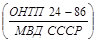
1.2. При проектировании следует:
принимать конструктивные схемы, обеспечивающие необходимую прочность, устойчивость и пространственную неизменяемость сооружения в целом, а также отдельных элементов на всех стадиях возведения (изготовления, монтажа) и эксплуатации;
принимать оптимальные конструктивные решения по приведенным затратам с учетом полной стоимости строительства и стоимости эксплуатации, приведенной к году окончания строительства:
применять типовые конструкции и изделия, в том числе типовые сборные железобетонные конструкции, разработанные для зданий и других сооружений;
выбирать материалы конструкций в соответствии с требованиями ТП 101-81* и правилами безопасности, утвержденными в установленном порядке;
соблюдать при выборе строительных изделий и материалов для сооружений, размещаемых на одной площадке, требования общеплощадочной унификации;
увязывать с архитектурой окружающей застройки материал ограждающих конструкций сооружений, их отделку и окраску;
соблюдать требования по охране окружающей среды, принимая меры для уменьшения загрязнения атмосферы выбросами из дымовых труб и вытяжных башен, продуктами испарения нефти и нефтепродуктов, а также от проникания в грунт утечек жидкости из резервуаров и трубопроводов.
1.3. Расчет и проектирование строительных конструкций сооружений должны производиться в соответствии с требованиями СНиП 2.01.07-85, СНиП 2.02.01-83, СНиП 2.03.01-84, СНиП II-23-81, СНиП 2.03.11-85, а также с учетом требований настоящих норм.
При проектировании бетонных и железобетонных сооружений, предназначенных для работы в условиях систематического воздействия технологических температур выше 50 °С, необходимо соблюдать требования по учету температурных воздействий в соответствии со СНиП 2.03.04-84.
При проектировании статически неопределимых железобетонных конструкций сооружений, подвергающихся систематическому воздействию технологических температур ниже 50 °С, в которых от совместного воздействия технологических и климатических температур возникают по высоте сечения перепады более 40 °С, следует учитывать температурные усилия в элементах сооружений. Для определения усилий допускается пользоваться СНиП 2.03.04-84 без учета влияния температуры на физико-механические свойства материалов.
1.4. Сооружения следует располагать, как правило, параллельно разбивочным осям соседних зданий, сооружений и проездам, при этом разбивочные оси сооружений надлежит увязывать с унифицированной сеткой колонн зданий.
1.5. Трассы тоннелей, каналов, галерей и эстакад должны иметь наименьшую протяженность и наименьшее число поворотов, а также пересечений с дорогами и другими коммуникациями и назначаться в соответствии с требованиями СНиП II-89-80.
1.6. Размеры пешеходных тоннелей, галерей и эстакад должны быть приняты:
высота тоннелей и галерей от уровня пола до низа выступающих конструкций перекрытий или покрытий - не менее 2,0 м (в наклонных тоннелях и галереях высоту следует измерять по нормали к полу);
ширина тоннелей, галерей и эстакад - по расчету из условия пропускной способности в одном направлении 2000 чел/ч на 1 м ширины, но не менее 1,5 м.
1.7. Внутренние размеры конвейерных тоннелей, галерей и эстакад должны приниматься в соответствии с ГОСТ 12.2.022-80.
Для галерей и эстакад, располагаемых в шахтах, карьерах и на обогатительных, окусковательных, дробильных и дробильно-сортировочных фабриках, на которые распространяются «Единые правила безопасности при дроблении, сортировке, обогащении полезных ископаемых и окусковании руд и концентратов», размеры следует принимать в соответствии с этими Правилами.
При назначении внутренних размеров конвейерных галерей по специальным требованиям технологической организации допускается предусматривать резерв ширины галереи для обеспечения возможности замены в процессе эксплуатации установленных конвейеров конвейерами больших типоразмеров. Величину резерва по ширине и нагрузкам устанавливает технологическая организация по согласованию с организацией, утверждающей задание на проектирование.
1.8. Подвалы, каналы, тоннели, галереи и эстакады, в которых должны, размещаться кабели, следует проектировать в соответствии с настоящими нормами и Правилами устройства электроустановок (ПУЭ), утвержденными Минэнерго СССР и согласованными с Госстроем СССР.
1.9. Каналы, тоннели и эстакады, предназначенные для прокладки трубопроводов пара и горячей воды, на которые распространяются действующие «Правила устройства и безопасной эксплуатации трубопроводов пара и горячей воды», утвержденные Госгортехнадзором СССР, следует проектировать в соответствии с требованиями этих Правил.
1.10. Подвалы, тоннели и каналы на допускается предусматривать в зданиях категорий А и Б и на территориях, где расположены наружные установки, в которых применяются или образуются взрывоопасные или токсичные газы плотностью более 0,8 по отношению к воздуху, а также взрывоопасная пыль.
В виде исключения допускается устраивать открытые приямки и лотки в помещениях и на территориях с производствами категорий А и Б, если без этих приямков и лотков нельзя обеспечить требования технологического процесса.
В этих случаях приямки и лотки должны быть обеспечены надежной, непрерывно действующей приточной или приточно-вытяжной вентиляцией; число лестниц из открытых приямков при площади их более 50 м2 или протяженности свыше 30 м должно быть не менее двух.
Выходы из открытых приямков должны быть устроены на уровне пола помещений в противоположных сторонах приямков.
Примечание. В производствах, в которых применяются или перерабатываются вещества с плотностью паров и газов менее 0,8 по отношению к воздуху, допускается (если это необходимо по требованиям технологического процесса) устраивать невентилируемые каналы глубиной не более 0,5 м.
1.11. В пешеходных тоннелях и галереях не допускается предусматривать прокладку трубопроводов, транспортирующих ядовитые, легковоспламеняющиеся и горючие жидкости, ядовитые и горючие газы, трубопроводов паровых тепловых сетей, а также транзитных кабелей любого назначения.
1.12. Не допускается предусматривать эвакуацию людей из помещений через кабельные сооружения (помещения), а также транзитную прокладку, воздуховодов через кабельные сооружения. Кабельные сооружения должны быть обеспечены системами дымоудаления.
1.13. При проектировании открытых крановых и разгрузочных железнодорожных эстакад должны предусматриваться помещения для защиты работающих от неблагоприятных метеорологических воздействий. Допускается использовать для этих целей помещения соседних зданий или зданий, к которым примыкают эстакады, если расстояние от наиболее удаленных рабочих мест до этих помещений не превышает 300 м. Помещения должны отвечать требованиям СНиП II-92-76.
1.14. Бетонные и железобетонные конструкции сооружений, подвергающиеся систематическому увлажнению атмосферными осадками, должны иметь на горизонтальных элементах (карнизах, полках и т.д.) гидроизоляцию и сливы, обеспечивающие свободный сток воды.
1.15. Настил обслуживающих площадок разгрузочных железнодорожных эстакад, открытых крановых эстакад, вытяжных башен и других сооружений следует проектировать с таким расчетом, чтобы исключалось скольжение при ходьбе (при стальных настилах следует предусматривать решетку в соответствии с ГОСТ 23120-78) и обеспечивался сток дождевой и талой воды (при деревянном настиле должны быть предусмотрены зазоры между досками, равные 20 мм).
1.16. В проектах подвалов, тоннелей, каналов, подпорных стен и других подземных сооружений должны приводиться указания о необходимости засыпки грунтом с уплотнением в соответствии с требованиями СН 536-81.
1.17. Низ опорной плиты стальных опор открытых сооружений должен располагаться выше планировочной отметки земли, как правило, не менее чем на 150 мм.
1.18. Строительные конструкции и технологическое оборудование следует крепить к бетонным и железобетонным конструкциям (фундаментам, силовым полам, стенам и т.п.), эксплуатируемым при расчетной температуре наружного воздуха до минус 65 °С включ. и при нагреве бетона фундаментов до 50 °С, анкерными болтами согласно обязательному приложению 2.
При соответствующем обосновании допускается применять другие способы закрепления оборудования на фундаментах (например, на виброгасителях, на клею и др.).
1.19. Подземные сооружения, расположенные в зоне влияния блуждающих токов, должны быть защищены от электрокоррозии в соответствии с требованиями СНиП 2.03.11-85.
Стальные конструкции сооружения должны быть заземлены.
1.20. При проектировании высотных сооружений, подземных и наземных резервуаров для нефти и нефтепродуктов и газгольдеров должна предусматриваться молниезащита в соответствии с СН 305-77.
1.21. В проектах высотных сооружений (силосов, водонапорных башен, градирен, дымовых труб, вытяжных башен, башенных копров угольных и рудных шахт) должны предусматриваться мероприятия (световое ограждение, маркировочная окраска), обеспечивающие безопасность полета воздушных судов в соответствии с правилами Министерства гражданской авиации.
1.22. При расположении сооружений необходимо учитывать архитектурно-композиционное влияние высотных, надземных и емкостных (резервуаров для нефти и нефтепродуктов) сооружений на формирование застройки, в том числе внутризаводских площадей, магистралей и проездов, а при устройстве подпорных стен - на формирование элементов вертикальной планировки и благоустройство территории.
1.23. Дымовые трубы, вытяжные башни, градирни и другие высотные сооружения следует, как правило, располагать со стороны наиболее протяженных глухих стен зданий. От стен зданий, имеющих световые проемы, эти сооружения должны размешаться на расстоянии не меньшем, чем их диаметр в плане или протяженность стороны, обращенной к зданию, с соблюдением требований СНиП II-89-80 и СН 245-71.
1.24. Дымовые трубы, вытяжные башни, градирни и другие отдельно стоящие высотные сооружения, находящиеся рядом, должны иметь единые членения, фактуру и цвет наружных поверхностей, единую маркировочную окраску и однотипные светофорные площадки, когда эти сооружения удалены одно от другого на расстояние не более их высоты, если она не превышает 120 м, или не более половины этой высоты, если она превышает 120 м.
1.25. При проектировании высотных, надземных и емкостных (незаглубленных) сооружений следует разрабатывать цветовое решение их в соответствии с общим архитектурным решением предприятия.
2.1. Нормы настоящего раздела следует соблюдать при проектировании отдельно стоящих подпорных стен, возводимых на естественном основании на территориях промышленных предприятий городов и поселков, а также на подъездных и внутриплощадочных железных и автомобильных дорогах.
Примечание. Настоящие нормы не распространяются на подпорные стены гидротехнических сооружений и магистральных дорог.
2.2. Подпорные стены следует, как правило, проектировать железобетонными тонкостенными уголкового профиля, в том числе с контрфорсами и анкерными тягами.
Массивные подпорные стены допускается проектировать из бетона, бутобетона, бутовой кладки при специальном технико-экономическом обосновании.
2.3. Основные размеры подпорных стен (общая высота, ширина подошвы) следует назначать, как правило, кратными 0,3 м.
2.4. Глубину заложения подошвы подпорной стены следует натачать в соответствии с требованиями СНиП 2.02.01-83. Минимальная глубина заложения подпорных стен должна быть не менее 0,6 м внескальных и не менее 0,3 м в скальных грунтах. При наличии кювета глубина заложения назначается от дна кювета.
2.5. В продольном направлении подошву подпорной стены следует принимать горизонтальной или с уклоном не более 0,02. При большем уклоне подошва выполняется ступенчатой.
В поперечном направлении подошва подпорной стены должна быть горизонтальной или с уклоном в сторону засыпки не более чем 0,125.
2.6. Расстояния между температурно-усадочными швами следует принимать не более 10 м в монолитных бутобетонных и бетонных подпорных стенах без конструктивного армирования, 20 - в монолитных бетонных конструкциях при наличии конструктивного армирования, 25 - в монолитных и сборно-монолитных железобетонных конструкциях и 30 - в сборных железобетонных конструкциях.
Расстояние между температурно-усадочными швами допускается увеличивать при проверке конструкций расчетом.
2.7. Высота подпорных стен для грузовых рамп автомобильного транспорта со стороны подъезда автомобилей должна быть равной 1,2 м от уровня поверхности проезжей части дорог или погрузочно-разгрузочной площадки.
Высота подпорных стен для грузовых и пассажирских рамп железнодорожного транспорта от уровня головки рельсов должна быть равной 1,1 м для колеи 1520 мм и 0,75 м - для колеи 750 мм.
2.8. В местах, где возможно движение пешеходов, подпорные стены должны иметь ограждения высотой 1 м.
При расположении автодорог вдоль подпорной стены у стены следует предусматривать тротуар шириной не менее 0,75 м с бортовым камнем высотой не менее 0,4 м.
2.9. Минимальное расстояние от оси ближайшего железнодорожного пути до внутренней грани подпорной стены на прямых участках следует принимать не менее 2,5 м.
2.10. В выемках железнодорожного полотна минимальное расстояние от оси ближайшего железнодорожного пути до наружной грани подпорной стены на уровне подошвы шпал и выше на прямых участках должно быть не менее 3,1 м.
2.11. На кривых участках пути минимальные расстояния от оси ближайшего железнодорожного пути до подпорной стены необходимо увеличивать согласно табл. 1.
Таблица 1
|
Увеличение расстояния, м |
|
|
1800 - 1200 |
0,1 |
|
1000 - 700 |
0,2 |
|
600 и менее |
0,3 |
2.12. Обратную засыпку пазух подпорных стен следует производить дренирующими грунтами (песчаными или крупнообломочными). Допускается использовать местные связные грунты - супеси и суглинки. Не допускается применять для обратных засыпок тяжелые и пластичные глины, а также грунты, содержащие органические и растворимые включения более 5 % по весу. Грунты засыпок должны быть уплотнены.
2.13. Поверхность подпорных стен, обращенная в сторону засыпки, должна быть защищена гидроизоляцией. Допускается использовать окрасочную гидроизоляцию битумными растворами или мастиками в соответствии с СН 301-65.
При расположении подпорных стен вне здания следует предусматривать устройство со стороны подпора грунта пристенного дренажа из камня, щебня или гравия с продольным уклоном 0,04. В подпорной стене через 3-6 м должны быть предусмотрены отверстия для выпуска воды из дренажа.
2.14. На косогорных участках для отвода атмосферных вод за гранью стены со стороны грунта должен быть устроен водоотводной кювет.
2.15. Подпорные стены следует рассчитывать на нагрузки от активного давления грунта засыпки с учетом временных нагрузок, расположенных на призме обрушения, включая нагрузки от подвижного состава железных дорог и автомобильного транспорта.
2.16. Давление грунта для подпорных стен следует определять согласно обязательному приложению 1.
Активное давление грунта для уголковых подпорных стен следует определять исходя из условия образования за стеной клиновидной симметричной (а при короткой задней консоли - несимметричной) призмы обрушения. В этом случае давление грунта принимается действующим на наклонную плоскость, проведенную под углом q0 к вертикали. Вес грунта в контуре abcd прибавляется к весу стены (черт. 1).
Расчет уголковых подпорных стен производится так же, как и массивных, принимая e = q0 и d = j.
При короткой задней консоли, когда плоскость призмы обрушения пересекает заднюю грань стены, давление грунта допускается принимать на условную наклонную плоскость, проведенную через точки а и с, если расстояние от верха стены до пересечения с плоскостью обрушения не превышает 0,25h, где h - высота стены (от поверхности грунта до подошвы).
Когда плоскость обрушения пересекает стену ниже 0,25h, давление грунта следует определять раздельно для вертикального участка и наклонной грани призмы обрушения.
Черт. 1. Расчетные схемы подпорных стен
а - массивных; б - уголкового профиля
2.17. Наибольшее значение активного давления грунта при наличии на горизонтальной поверхности засыпки равномерно распределенной нагрузки q следует определять при расположении этой нагрузки в пределах всей призмы обрушения, если нагрузка ив имеет фиксированного положения.
2.18. При расчете подпорных стен по предельным состояниям первой группы (по несущей способности) следует выполнять расчеты:
устойчивости положения стены против сдвига;
устойчивости грунта основания под подошвой подпорных стен (для нескальных грунтов);
прочности скального основания;
прочности элементов конструкций и узлов соединения.
При расчете по предельным состояниям второй группы (по пригодности к эксплуатации) необходимо производить проверки:
основания на допустимые деформации;
элементов конструкций на допустимые величины раскрытия трещин.
2.19. Расчет устойчивости положения стены против сдвига следует производить по подошве стены (плоский сдвиг) и по ломаным поверхностям скольжения (глубинный сдвиг) из условия
где Fsa - сдвигающая сила, равная сумме проекций всех сдвигающих сил на горизонтальную плоскость:
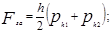
gc - коэффициент условий работы, принимаемый: для песков, кроме пылеватых, gc = 1; для песков пылеватых, а также пылевато-глинистых грунтов в стабилизированном состоянии gc = 0,9; для пылевато-глинистых грунтов в нестабилизированном состоянии gc = 0,85;
для скальных грунтов:
невыветрелых и слабовыветрелых gc = 1;
выветрелых gc = 0,9;
сильновыветрелых gc = 0,8;
gn - коэффициент надежности по назначению сооружения, принимаемый 1,2; 1,15 и 1,1 соответственно для зданий и сооружений I, II и III классов, устанавливаемых в соответствии с «Правилами учета степени ответственности зданий и сооружений при проектировании конструкций»;
Fsr - удерживающая сила, равная сумме проекций всех удерживающих сил на горизонтальную плоскость:
здесь Fv - сумма проекций всех сил на вертикальную плоскость;
jI и cI - соответственно угол внутреннего трения и удельное сцепление грунта основания, определяемые по обязательному приложению 1;
b - угол наклона поверхности скольжения к горизонту;
А - площадь подошвы стены;
Еhr - пассивное сопротивление грунта.
Пассивный отпор грунта следует учитывать до глубины пересечения вертикальной плоскости, проведенной через переднюю грань подошвы, с предполагаемой плоскостью скольжения.
Расчет устойчивости подпорной стены против сдвига должен выполняться для трех значений угла b:b = 0 - плоский сдвиг, b = 0,5jI и b = jI - глубинный сдвиг.
При сдвиге по подошве стены (b = 0) расчетные характеристики грунта jI и сI в формуле (3) принимаются не более 30° для jI и не более 5 кПа (0,5 тс/м2) для сI, а коэффициент пассивного сопротивления грунта lhr = 1.
2.20. Устойчивость подпорной стены против сдвига по скальному грунту следует проверять из условия (1), где Fsr определяется по формуле
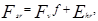
здесь Fv, Ehr - обозначение то же, что в формуле (3);
f - коэффициент трения подошвы по скальному грунту, принимаемый по результатам испытаний, но не более 0,65.
2.21. Расчет устойчивости грунта основания под подошвой стены следует производить из условия
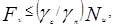
где gc, gn - обозначения те же, что в формуле (1);
Nu - вертикальная составляющая силы предельного сопротивления основания, определяемая согласно СНиП 2.02.01-83.
2.22. При определении расчетных усилий (изгибающих моментов, нормальных и поперечных сил) в элементах подпорной стены уголкового профиля интенсивность горизонтального давления грунта ph с учетом временной нагрузки, расположенной на поверхности в пределах призмы обрушения, должна приниматься действующей непосредственно на заднюю поверхность стены, а интенсивность вертикального давления pv от веса грунта и временной нагрузки, расположенной непосредственно над подошвой фундамента подпорной стены, - действующей только на нее.
2.23. Расчет основания по деформациям следует производить на нормативное давление грунта в соответствии со СНиП 2.02.01-83.
Эпюру напряжений следует принимать, как правило, трапециевидной. Допускается треугольная эпюра напряжений при условии, что площадь сжатой зоны должна быть не менее 75 % общей площади подошвы фундамента подпорной стены.
3.1. Нормы настоящего раздела следует соблюдать при проектировании подвалов производственного назначения как отдельно стоящих, так и встроенных.
3.2. Подвалы следует, как правило, проектировать одноэтажными. По технологическим требованиям допускается устройство подвалов с техническим этажом для кабельных разводок.
В обоснованных случаях допускается выполнять подвалы с большим числом кабельных этажей.
3.3. В однопролетных подвалах размер парапета, как правило, следует принимать 6 м; допускается пролет 7,5 м, если это обусловливается технологическими требованиями.
Многопролетные подвалы следует проектировать, как правило, с сетками колонн 6´6 и 6´9 м.
3.4. Высоту от пола подвала до низа ребер плит перекрытия следует назначать кратной 0,6 м, но не менее 3 м.
Высоту технического этажа для кабельных разводок в подвалах необходимо принимать не менее 2,4 м.
3.5. Высота проходов в подвалах (в чистоте) должна назначаться не менее 2 м.
3.6. Монтажные и эксплуатационные проемы в перекрытиях подвальных помещений должны быть прямоугольными. Монтажные проемы следует перекрывать съемными плитами в уровне верха конструкции перекрытия подвала, имеющими предел огнестойкости такой же, как перекрытие. Эксплуатационные проемы следует перекрывать съемными плитами в уровне отмотки чистого пола цеха.
3.7. Полы подвальных помещений следует предусматривать с уклоном к трапам (приямкам) канализации с обособленной системой отвода воды. Непосредственное соединение приямков с ливневой и другими типами канализации запрещается.
3.8. Стены подвалов надлежит проектировать, как правило, из несущих железобетонных панелей, устанавливаемых вертикально. Допускается проектировать стены подвалов из железобетонных блоков и монолитного железобетона.
3.9. Подвальные помещения при наличии подземных вод должны быть защищены гидроизоляцией в соответствии с требованиями СН 301-65.
В качестве основной меры защиты следует устраивать пластовые дренажи под всем полом подвала.
3.10. Температурно-усадочные швы в подвалах следует предусматривать на расстоянии не более 60 м для монолитных и 120 м для сборных и сборно-монолитных конструкций подвалов (без расчета на температурно-усадочные деформации). При назначении предельных расстояний между температурно-усадочными швами необходимо устраивать временный шов по середине температурного блока.
3.11. Обратную засыпку пазух котлована надлежит производить с двух противоположных сторон подвала с перепадом по высоте не более 1 м.
3.12. В зданиях и сооружениях с нагрузкой на пол более 100 кПа (10 тс/м2) подвалы, как правило, размещать не следует.
3.13. Наружные стены подвалов должны быть рассчитаны по предельным состояниям первой и второй групп на те же условия, что и подпорные стены. Для стен подвалов расчет на устойчивость конструкций против глубинного сдвига при b = 0,5jI и b = jI по п. 2.19 производить не следует.
3.14. Горизонтальное активное давление грунта от собственного веса и временной нагрузки необходимо определять по обязательному приложению 1.
3.15. При одностороннем загружении подвала временной нагрузкой расчет должен выполняться с учетом упругого отпора грунта с противоположной стороны подвала, который должен определяться в зависимости от модуля деформации грунта засыпки Е, значение которого допускается определять по формуле
где h1 - расстояние от уровня пола до низа перекрытия; значение в скобках принимается не более единицы;
b1 = 0,7 при засылке грунтом основания;
b1 = 0,9 то же, малосжимаемым грунтом;
Е - модуль деформации грунта основания.
3.16. За расчетную схему конструкции подвала принимается поперечная рама, состоящая из стен, колонн и опертых на них элементов перекрытия (черт. 2).
Черт. 2. Расчетная схема поперечной рамы подвала
3.17. Стену, входящую в поперечную раму подвала (черт. 3), следует рассчитывать как стержень переменной жесткости по высоте, шарнирно опертый поверху и защемленный в фундамент бесконечной жесткости, который опирается на упругое основание, характеризуемое модулем деформации грунта Е.
Черт. 3. Расчетная схема стены подвала
3.18. Активное давление грунта следует определять по обязательному приложению 1 с разделением нагрузки на симметричную ph 1,2,3 и одностороннюю ph 4,5,6.
Усилия в стене подвала следует определять как в балочной конструкции в зависимости от реакции R на верхней опоре на единицу длины стены.
3.19. При симметричном действии нагрузки реакцию R1 следует определять по формуле
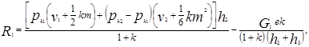
где ph 1, ph 2, h2, h3 - см. черт. 3;
k - коэффициент, учитывающий изменение реакции R1 за счет поворота фундамента:
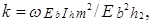
здесь w - коэффициент, принимаемый равным: 6 - для положительных значений М и Q; 3 - для их отрицательных значений, а также для М0 и Fsa (см. черт. 3);
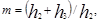
Еb - модуль упругости бетона;
Е - модуль деформации грунта основания;
b - ширина подошвы фундамента стены;
Ih - момент инерции 1 м сечения стены, который допускается определять по приведенной толщине стены tred, определяемой по формуле
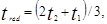
где t1 - толщина стены в верхней части;
t2 - то же, в нижней чести (в уровне сопряжения с фундаментом);
G1 - сумма веса грунта и временной нагрузки на внешней стороне фундамента при симметричном ее расположении;
е - эксцентриситет приложения силы G1 (G2) относительно центра тяжести подошвы фундамента;
v1 и v2 - коэффициенты, учитывающие изменение толщины стены по высоте и принимаемые по табл. 2.
Таблица 2
|
1,0 |
0,7 |
0,6 |
0,5 |
0,4 |
0,3 |
|
|
v1 |
0,375 |
0,357 |
0,346 |
0,335 |
0,321 |
0,303 |
|
v2 |
0,1 |
0,092 |
0,088 |
0,083 |
0,076 |
0,069 |
3.20. При одностороннем действии горизонтальной нагрузки реакцию R2 следует определять по формуле
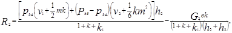
где ph 4, ph 5 - см. черт. 3;
G2 - вес временной нагрузки на внешней стороне фундамента при одностороннем ее расположении;
k1 - коэффициент, учитывающий изменение реакции R2 за счет смешения перекрытия при одностороннем загружении подвала:
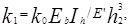
здесь k0 - коэффициент, принимаемый равным: 4 - для однопролетных подвалов, 3 - для двухпролетных, 2 - для трехпролетных подвалов, 0 - для подвалов с несмещаемым перекрытием;
Е - определяется по формуле (6).
3.21. Расчет устойчивости стен подвала против сдвига по контакту подошвы с основанием, а также устойчивость грунта основания под подошвой фундамента следует производить соответственно по формулам (1), (3), (4), (5).
3.22. При расчете стен подвалов на сдвиг удерживающую силу Fsr следует определять по формуле (3), а сдвигающую силу Fsa в уровне подошвы фундамента от симметричной нагрузки - по формуле
3.23. Момент от симметричной нагрузки в уровне подошвы фундамента М0 следует определять по формуле
от односторонней нагрузки Fsa и М0 следует определять аналогично формулам (13) и (14), заменив соответственно R1 на R2, ph1 - на ph4 и ph3 - на ph6.
3.24. Если устойчивость стен подвала против сдвига не обеспечивается принятыми размерами фундаментов, необходимо предусматривать мероприятия, препятствующие сдвигу, например устройства распорок и др. В этом случае приведенный угол наклона равнодействующей внешней нагрузки к вертикали в уровне подошвы фундамента принимается равным нулю.
3.25. При наличии конструкций, препятствующих повороту фундамента (сплошная фундаментная плита, перекрестные ленты для внутреннего каркаса и т.п.) коэффициент k следует принимать равным нулю.
3.26. Эвакуационные выходы и лестницы из подвалов в помещения категорий В, Г и Д, противопожарные требования к подвальным помещениям категории В или складам сгораемых материалов, а также несгораемых материалов а сгораемой упаковке следует предусматривать по СНиП 2.09.02-85.
3.27. Кабельные подвалы и кабельные этажи подвалов следует разделять противопожарными перегородками на отсеки объемом не более 3000 м3 при предусмотрении объемных средств пожаротушения.
3.28. Из каждого отсека подвала, кабельного подвала или кабельного этажа подвала необходимо предусматривать не менее двух выходов; выходы следует располагать в разных сторонах помещения.
Выходы должны размешаться так, чтобы не было тупиков длиной более 25 м. Длина пути от наиболее удаленного места нахождения обслуживающего персонала до ближайшего выхода не должна превышать 75 м. Второй выход допускается предусматривать через расположенное на том же уровне (этаже) соседнее помещение (подвал, этаж подвала, тоннель) категорий В, Г и Д. При выходе в помещения категории В суммарная длина пути эвакуации не должна превышать 75 м.
3.29. Двери выходов из кабельных подвалов (кабельных этажей подвалов) и двери между отсеками должны быть противопожарными, открываться по направлению ближайшего выхода и иметь устройства для самозакрывания.
Притворы дверей должны быть уплотнены.
3.30. Эвакуационные выходы из маслоподвалов и кабельных этажей подвалов следует, как правило, осуществлять через обособленные лестничные клетки, имеющие выход непосредственно наружу. Допускается использовать общую лестничную клетку, ведущую к надземным этажам, при этом для подвальных помещений должен быть устроен обособленный выход из лестничной клетки на уровне первого этажа наружу, отделенный от остальной части лестничной клетки на высоту одного этажа глухой противопожарной перегородкой с пределом огнестойкости не менее 1 ч.
При невозможности устройства выходов непосредственно наружу допускается их устраивать в помещения категорий Г и Д с учетом требований п. 3.26.
3.31. В маслоподвалах независимо от площади и в кабельных подвалах объемом более 100 м3 необходимо предусматривать автоматические установки пожаротушения. В кабельных подвалах меньшего объема должна быть автоматическая пожарная сигнализация. Кабельные подвалы энергетических объектов (АЭС, ТЭЦ, ГРЭС, ТЭС, ГЭС и т.д.) независимо от площади оборудуются установками автоматического пожаротушения.
3.32. Допускается предусматривать отдельно стоящие одноэтажные насосные станции (или отсеки) категорий А, Б и В, заглубленные ниже планировочных отметок земли более чем на 1 м, площадью не более 400 м2.
Из этих помещений следует предусматривать:
один эвакуационный выход через лестничную клетку, изолированную от помещений, при площади пола не более 54 м2;
два эвакуационных выхода, расположенных в противоположных сторонах помещения, при площади пола более 54 м2.
Второй выход допускается устраивать по вертикальной лестнице, находящейся в шахте, изолированной от помещений категорий А, Б и В.
3.33. Устройство порогов у выходов из подвалов и перепадов в уровне пола ив допускается, за исключением маслоподвалов, где на выходах должны быть пороги высотой 300 мм со ступенями или пандусами.
4.1. Нормы настоящего раздела надлежит соблюдать при проектировании тоннелей (конвейерных, подштабельных, пешеходных, коммуникационных, кабельных и комбинированных) и каналов, сооружаемых открытым способом.
4.2. высота и ширина тоннелей, каналов (между выступающими частями несущих конструкций) должны приниматься кратными 0,3 м.
4.3. Тоннели и каналы следует, как правило, проектировать сборными из унифицированных железобетонных элементов. При технико-экономическом обосновании допускается применять тоннели или их элементы (углы поворота, камеры и др.) из монолитного железобетона.
Для отделки пешеходных тоннелей следует использовать долговечные, экономичные, удобные в эксплуатации несгораемые материалы, допускающие легкую очистку и промывку.
4.4. Кабельные каналы не допускается располагать на участках, где могут быть пролиты расплавленный металл, горючие и легковоспламеняющиеся жидкости, жидкости с высокой температурой или вещества, разрушающие оболочку кабелей.
4.5. В тоннелях и каналах необходимо предусматривать продольный уклон не менее 0,002 и поперечный уклон не менее 0,01. В тоннелях через каждые 100 - 150 м следует устраивать приямки для сбора жидкостей и отвода их в канализацию; в каналах приямки для сбора жидкостей должны предусматриваться в колодцах или камерах. Запрещается соединять приямки с ливневой и другими типами канализации.
Продольный уклон пешеходных тоннелей следует принимать не более 0,04, а поперечный - не более 0,01. Допускается при соответствующем обосновании устраивать пол без продольного уклона.
4.6. Тоннели и каналы, располагаемые вне зданий и дорог, должны быть, как правило, заглублены от поверхности земли до верха перекрытия не менее чем на 0,3 м.
На огражденных территориях, доступных только для обслуживающего персонала, отметку верха перекрытия кабельных каналов допускается предусматривать на уровне планировочной отметки земли.
4.7. Тоннели и каналы, располагаемые под автомобильными дорогами, должны быть заглублены от верха дорожного покрытия до верха перекрытий не менее чем на 0,5 м, при расположении под железными дорогами - не менее чем на 1 м от низа шпал.
4.8. При расположении тоннелей и каналов внутри цехов минимальное заглубление верха перекрытий от отметки чистого пола следует, как правило, принимать:
для тоннелей - 0,3 м;
для каналов допускается отметку верха перекрытия канала принимать равной отметке чистого пола.
4.9. Каналы и тоннели должны быть рассчитаны:
по предельным состояниям первой группы (по несущей способности) - на прочность элементов конструкций и узлов соединения;
по предельным состояниям второй группы (по пригодности к нормальной эксплуатации) - на допустимые значения деформаций и ширины раскрытия трещин.
4.10. При расчетах конструкций тоннелей и каналов необходимо учитывать симметричное и одностороннее загружения их временными вертикальными нагрузками. Расчет следует производить с учетом упругого отпора грунта в вертикальном и горизонтальном направлениях, принимая упругое основание в виде однородной среды, характеризуемой модулем деформации Е для грунта ненарушенного сложения (грунта основания) и модулем деформации Е для грунта засыпки. Модуль деформации Е допускается определять по формуле (6).
4.11. При симметричном загружении (черт. 4) изгибающий момент в нижнем узле тоннеля М1 с шарнирным опиранием плит перекрытия следует определять по формуле
где k - коэффициент, учитывающий изменение момента в нижнем узле за счет его поворота:
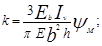
N1 - нормальная сила (черт. 4, a);
yN, yM - коэффициенты, определяемые по формулам:
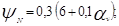
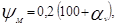
здесь av - показатель гибкости днища:
В формулах (15) - (19) приняты следующие обозначения:
Iv - момент инерции 1 м сечения днища;
Е - модуль деформации грунта основания;
v3, v4 - коэффициенты, учитывающие изменение толщины стены по высоте и принимаемые по табл. 3 в зависимости от толщины стены в верхней t1 и нижней t2 частях тоннеля.
Таблица 3
|
t1/t2 |
1,0 |
0,7 |
0,6 |
0,5 |
0,4 |
0,3 |
|
v3 |
0,0583 |
0,0683 |
0,0753 |
0,0813 |
0,0883 |
0,0993 |
|
v4 |
0,0667 |
0,0747 |
0,0747 |
0,0837 |
0,0907 |
0,0977 |
Усилия в стене следует определять как для балки, лежащей на двух опорах, с нагрузками ph1, ph2, реакцией на верхней опоре (распорке) R1 и опорным моментом на нижней споре M1.
Усилие в верхней распорке R1 определяется по формуле
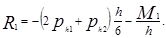
Усилия в днище следует определять как для балки, лежащей на упругом основании с модулем деформации Е и загруженной симметричными силами N1 и моментами M1 (см. черт. 4, a).
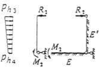
Черт. 4. Расчетная схема тоннеля с шарнирами в уровне плит перекрытия
а - симметричное загружение; б - одностороннее загружение
4.12. При одностороннем загружении горизонтальными нагрузками ph3, ph4 (черт. 4, б) момент в нижнем левом углу тоннеля определяется по формуле
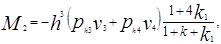
где k1 - коэффициент, учитывающий изменение момента в нижнем узле за счет смещения перекрытия:
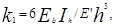
Е - определяется по формуле (6).
Остальные обозначения те же, что в формуле (15).
Усилие в верхней распорке R2 определяется аналогично формуле (20).
Горизонтальное смещение тоннеля понизу и момент в правом нижнем узле тоннеля ввиду их малой величины принимаются равными нулю.
Усилия в загруженной (левой) стене определяются аналогично усилиям в стене от симметричной нагрузки. Усилия в днище определяются аналогично усилиям от симметричной нагрузки, но с приложением одностороннего момента М2 (см. черт. 4).
Усилия в незагруженной, отпорной (правой), стене определяются как для балки, лежащей на упругом основании с модулем деформации грунта Е и имеющей несмещаемую горизонтальную опору в уровне днища и нагруженную на верхнем конце силой R2.
4.13. При заглублении верха тоннеля от поверхности грунта более чем на 2 м, а также при временной нагрузке, расположенной на поверхности, интенсивностью q £ 9,81 кПа (1 тс/м2) независимо от глубины заложения расчет тоннелей допускается производить только на симметричное загружение полной нагрузкой.
4.14. Расчетные усилия в замкнутых тоннелях и каналах, с шарнирными узлами посредине стены должны определяться с учетом изменений расчетных усилий (моментов и поперечных сил), вызванных взаимодействием конструкций с грунтом.
4.15. Тоннели и каналы, заложенные ниже прогнозируемого уровня подземных вод, следует рассчитывать на всплытие на расчетные нагрузки по формуле
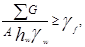
где åG - сумма всех постоянных вертикальных расчетных нагрузок с минимальными коэффициентами надежности по нагрузке, действующих на длину одного метра тоннеля или канала;
А - площадь подошвы тоннеля или канала на длину одного метра;
hw - расстояние от уровня грунтовых вод до подошвы тоннеля или канала (без учета бетонной подготовки);
gw - удельный вес воды, равный 1;
gf - коэффициент надежности по нагрузке, принимаемый равным 1,2.
4.16. Выходы из конвейерных, коммуникационных (кроме кабельных) тоннелей должны предусматриваться не реже чем через 100 м, но не менее двух, кроме случаев, предусмотренных нормативными документами по строительному проектированию предприятий отдельных отраслей промышленности.
Примечания. 1. Выходами коммуникационных тоннелей могут служить люки, оборудованные легко открывающимися изнутри крышками и запорными устройствами, стационарными лестницами или скобами.
2. В кабельных тоннелях допускается увеличение расстояния между выходами до 120 м при маслонаполненных кабелях и до 150 м при других кабелях.
3. Выходы из межцеховых кабельных тоннелей, как правило, следует выполнять с надземной частью, совмещенной с вентиляционными камерами. Лестницы в этих выходах следует выполнять вертикальными, двери их надземной части должны открываться наружу. Камера выхода должна быть отделена от основной части тоннеля (отсека) несгораемой противопожарной перегородкой.
4. Выходы из внутрицеховых кабельных тоннелей следует предусматривать через лестничные клетки (ведущие также не верхние этажи здания) либо через отдельные лестницы, ведущие только на первый этаж. Лестницы и лестничные клетки должны иметь выход непосредственно наружу или в помещение первого этажа (с учетом требований п. 4.17). При использовании для выхода общей лестничной клетки (ведущей также на верхние этажи) для кабельных тоннелей следует устраивать в лестничной клетке обособленный выход наружу, отделенный от остальной лестничной клетки несгораемой перегородкой с пределом огнестойкости 1 ч. Если для выхода предназначена отдельная лестница, ведущая на первый этаж здания, она должна ограждаться противопожарными перегородками, при этом на выходе из тоннеля на лестницу следует предусматривать тамбур, если в уровне первого этажа устраивается открытый проем. Площадки лестниц, черед которые осуществляется выход из кабельных тоннелей, могут использоваться также для организации выхода их других подвальных помещений.
4.17. Выходы из конвейерных, коммуникационных и кабельных тоннелей должны предусматриваться наружу (на территорию предприятия, населенного пункта и т.п.) или в помещения категорий Г и Д по степени огнестойкости.
Двери на выходе из кабельных тоннелей следует предусматривать открывающимися в направлении выхода из тоннеля и снабженными самозапирающимися замками.
Если выходы ведут наружу, двери допускается выполнять из сгораемого материала, предел огнестойкости не нормируется.
Если выходы ведут в помещение, двери должны быть самозапирающимися с уплотнением в притворах и иметь предел огнестойкости не менее 0,6 ч.
Во внутрицеховых (внутри зданий) тоннелях замки должны открываться без ключа как из тоннеля, так и из помещения, если это помещение электротехническое или кабельное; в случае, если выход из кабельного тоннеля ведет в другое смежное производственное помещение, замки должны открываться без ключа только из тоннеля.
4.18. Выходы из подштабельных тоннелей, предназначенных для транспортирования негорючих материалов и руды, следует предусматривать не реже чем через 100 м, но не менее двух, расположенных в торцах склада. Для устройства промежуточных выходов следует предусматривать поперечные тоннели с переходами под продольными конвейерами или над ними и выходами за пределы склада.
4.19. Расстояние от тупикового конца тоннеля (включая кабельные) до ближайшего выхода следует назначать не более 25 м.
В тоннелях длиной до 50 м допускаются предусматривать один выход при условии обеспечения длины от тупикового конца тоннеля до выхода не более 25 м.
4.20. Люки тоннелей не следует располагать на проездах, вплотную к зданиям, сооружениям, другим люкам и колодцам и ближе чем на 2 м от рельса железнодорожного пути.
4.21. На прямолинейных участках коммуникационных тоннелей, предназначенных для прокладки трубопроводов, не реже чем через 300 м следует предусматривать монтажные проемы длиной не менее 4 м и шириной не менее наибольшего диаметра прокладываемой трубы плюс 0,1 м, но не менее 0,7 м.
Монтажные проемы необходимо перекрывать сборными железобетонными плитами.
4.22. В каналах, под наружными или противопожарными стенами и стенами (перегородками), разделяющими смежные помещения категорий А, Б и В, необходимо устраивать глухие диафрагмы из несгораемых материалов с пределом огнестойкости, соответствующим огнестойкости стен, но не менее 0,75 ч.
В каналах, предназначенных для прокладки трубопроводов с легковоспламеняющимися и горючими жидкостями или горючими газами под стенами, разделяющими смежные помещения, должна быть выполнена засылка леском на всю высоту канала на длину не менее 1 м поверху в каждую сторону от оси стены. Через каждые 80 м по длине канала необходимо устраивать песчаные отсыпки (перемычки) длиной не менее 2 м.
Примечание. В подпольных каналах-воздуховодов установка огнезадерживающих клапанов взамен диафрагм не допускается.
4.23. В тоннелях (кроме пешеходных и кабельных) допускается прокладка маслопроводов (например, в прокатных цехах заводов черной металлургии) при условии разделения тоннелей на отсеки длиной не более 150 м. Перегородки между отсеками должны иметь предел огнестойкости не менее 0,75 ч, а двери в перегородках - не менее 0,6 ч.
4.24. Кабельные тоннели и каналы необходимо выполнять из несгораемых материалов с пределом огнестойкости не менее 0,75 ч.
Кабельные тоннели надлежит разделять на отсеки противопожарными несгораемыми перегородками. Длина отсека тоннеля должна быть ив более 150 м, а при маслонаполненных кабелях - не более 120 м.
Двери между отсеками должны быть противопожарными, самозакрывающимися без замков, иметь уплотнение в притворах и открываться в направлении ближайшего выхода.
4.25. Каналы следует проектировать со съемными несгораемыми перекрытиями (плитами, лотками и др.).
Допускается в помещениях с паркетными полами (например, в помещениях щитов управления) устраивать перекрытия кабельных каналов из деревянных щитов с паркетом, защищенным снизу несгораемым или трудносгораемым материалом, с покрытием по нему черной горячекатаной жестью или тонколистовой кровельной сталью, обеспечивающими предел огнестойкости не менее 0,5 ч.
Перекрытия должны иметь приспособления для подъема. Масса отдельного поднимаемого вручную элемента перекрытия не должна превышать 50 кг. В производственных помещениях и электропомещениях при расположении каналов в зоне действия цехового подъемно-транспортного оборудования (краны мостовые, подвесные однобалочные, тали и т.п.), а также вне зданий в зоне действия передвижного подъемно-транспортного оборудования масса элемента перекрытия не нормируется.
4.26. Тоннели и каналы должны быть защищены от проникания в них подземных и поверхностных вод в соответствии с СН 301-65.
4.27. Переход с одной отметки кабельного тоннеля на другую следует осуществлять с помощью пандуса с уклоном не более 15° либо лестницы с уклоном не более 1:1. Указанный переход должен быть только в пределах одного отсека; устройство ступеней либо уклонов непосредственно возле разделительных перегородок запрещается. Расстояние от лестницы или наклонного участка пола до разделительной перегородки должно быть не менее 1,5 м.
4.28. Тоннели любого назначения надлежит проветривать непрерывно действующими, основными вентиляторными установками, оборудованными реверсивными устройствами и расположенными на поверхности в зонах, не загрязненных пылью, дымом и газами.
4.29. Кабельные тоннели должны быть обеспечены независимой вентиляцией каждого отсека, автоматически отключающейся при подаче импульса от системы пожаротушения или от системы пожарной сигнализации.
4.30. Установками автоматического пожаротушения следует оборудовать следующие внутрицеховые тоннели внутренним объемом более 100 м3:
кабельные тоннели;
комбинированные (с прокладкой кабелей) тоннели, в которых проложено более 12 кабелей.
Автоматическую пожарную сигнализацию надлежит предусматривать:
во внутрицеховых кабельных тоннелях внутренним объемом от 20 до 100 м3;
во внутрицеховых комбинированных тоннелях, в которых проложено от 5 до 12 кабелей;
в межцеховых кабельных тоннелях внутренним объемом более 50 м3;
в межцеховых комбинированных тоннелях, в которых проложено болев 12 кабелей.
4.31. Пожары в межцеховых кабельных тоннелях следует тушить с помощью передвижных средств - пожарных автомобилей, подающих воду или высокократную пену непосредственно к очагу пожара, или систем с сухотрубами со стационарно установленными распылителями воды или пеногенераторами.
Для подачи средств пожаротушения внутрь каждого отсека от передвижной пожарной техники следует использовать выходы из тоннелей и вентиляционные шахты.
Если расстояние между выходами из тоннеля и вентиляционными шахтами превышает 30 м, должны быть предусмотрены дополнительные люки, расположенные таким образом, чтобы расстояние между местами подачи огнегасящего вещества внутрь тоннеля не превышало 30 м.
Люки для подачи средств пожаротушения должны иметь размеры 700´700 мм или диаметр 700 мм; люки должны закрываться двойными металлическими крышками, из которых нижняя должна иметь снаружи приспособление для закрывания на замок. Под крышками люка, предназначенного только для подачи средств пожаротушения, не должно быть лестниц или скоб.
При установке в тоннеле систем с сухотрубами и стационарных систем пожаротушения устройство дополнительных люков не требуется.
5.1. Нормы настоящего раздела должны соблюдаться при проектировании опускных колодцев, предназначаемых для устройства заглубленных сооружений с использованием внутреннего объема колодцев и для глубоких опор.
5.2. В плане опускные колодцы, как правило, должны иметь форму круга или вписанного в него многоугольника. Монолитные колодцы допускается проектировать прямоугольной формы. При прямоугольном очертании колодца углы необходимо закруглять.
5.3. Диаметр в свету круглых и размер сторон прямоугольных колодцев следует, как правило, принимать, от 6 до 24 м - кратными 3 м, а от 24 до 60 м - кратными 6 м. Разрешается принимать эти размеры кратными 0,6 м.
Размер колодцев по высоте следует принимать кратным 0,6 м.
5.4. В прямоугольных в плане колодцах с отношением размеров сторон более чем 1:2 необходимо предусматривать поперечные несущие перегородки или временные (на период опускания) распорки.
5.5. При примыкании колодца к другим сооружениям следует учитывать разность осадок сооружений.
5.6. Колодцы следует проектировать, как правило, тонкостенными, погружаемыми в тиксотропной рубашке, за исключением строительства на скальных грунтах, а также на площадках с оползнями, карстами или пустотами.
5.7. Сборные железобетонные стены колодцев следует проектировать из плоских панелей или крупногабаритных пустотелых блоков из тяжелого бетона класса не ниже В25. Класс бетона или раствора для замоноличивания сборных конструкций должен быть не ниже класса бетона соединяемых элементов.
Монолитные железобетонные стены колодцев следует проектировать из тяжелого бетона класса не ниже В15.
5.8. Железобетонные днища колодцев должны быть монолитными из тяжелого бетона класса не ниже В15.
5.9. Бетой колодцев, погружаемых в обводненные грунты, должен иметь проектную марку по водонепроницаемости не ниже W4; марку по морозостойкости и среднюю плотность бетона следует принимать по СНиП 2.03.01-84.
5.10. Горизонтальное давление грунта на стены и нож колодца следует определять как сумму давлений: основного - от грунта или тиксотропного раствора и дополнительного - от крена колодца, возникающего в результате его погружения.
5.11. Основное горизонтальное давление грунта в период погружения колодца следует определять по формуле
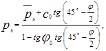
где
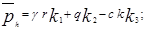
c0, j0 - удельное сцепление и угол внутреннего трения грунта, принимаемые при отсутствии покрытий стен и электроосмоса равными:
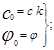
k1, k2, k3 - коэффициенты, зависящие от угла внутреннего трения грунта j и отношения и определяемые по табл. 4;
r - радиус наружной окружности колодца или условный радиус для некруглых в плане колодцев, который принимается равным наибольшему расстоянию от центральной оси колодца до наиболее удаленной точки его наружной поверхности;
g - удельный вес грунта;
z - расстояние от поверхности грунта до рассматриваемого сечения;
q - сплошная вертикальная равномерно распределенная нагрузка, принимаемая 20 кПа (2 тс/м2), кроме случаев, особо оговоренных в задании;
с - удельное сцепление грунта;
k - коэффициент, учитывающий уменьшение сцепления грунта в результате сдвига и назначаемый в зависимости от консистенции грунта.
При расчетах по предельным состояниям первой группы (в скобках - второй группы) значение k принимается равным:
|
Консистенция грунта |
k |
|
Твердая |
0,22 (0,33) |
|
Полутвердая |
0,25 (0,38) |
|
Тугопластичная |
0,29 (0,43) |
|
Мягкопластичная |
0,65 (1) |
В случае, если колодец погружается в грунт с разнородными напластованиями, при определении ph весь грунт, лежащий выше рассматриваемого слоя, заменяется эквивалентным слоем грунта, высота которого, приведенная к объемному весу рассматриваемого слоя, определяется по формуле
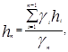
где 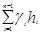
gn - удельный вес грунта в слое п.
Таблица 4
|
Значения k1, k2, k3 при j, град |
|||||||
|
10 |
15 |
20 |
25 |
30 |
35 |
40 |
|
|
0 |
0 |
0 |
0 |
0 |
0 |
0 |
0 |
|
0,50 |
0,32 |
0,26 |
0,20 |
0,16 |
0,13 |
0,10 |
0,08 |
|
1,00 |
0,62 |
0,49 |
0,36 |
0,28 |
0,21 |
0,16 |
0,11 |
|
1,50 |
0,92 |
0,71 |
0,50 |
0,37 |
0,27 |
0,20 |
0,13 |
|
2,00 |
1,15 |
0,90 |
0,62 |
0,42 |
0,30 |
0,23 |
0,15 |
|
2,50 |
1,30 |
1,00 |
0,72 |
0,47 |
0,32 |
0,25 |
0,16 |
|
3,00 |
1,45 |
1,10 |
0,80 |
0,52 |
0,34 |
0,26 |
0,17 |
|
3,50 |
1,60 |
1,20 |
0,85 |
0,56 |
0,36 |
0,27 |
0,17 |
|
4,00 |
1,70 |
1,30 |
0,90 |
0,60 |
0,38 |
0,27 |
0,17 |
|
4,50 |
1,79 |
1,38 |
0,95 |
0,64 |
0,40 |
0,27 |
0,17 |
|
5,00 |
1,38 |
1,45 |
1,00 |
0,68 |
0,42 |
0,27 |
0,17 |
|
0 |
0,81 |
0,60 |
0,49 |
0,40 |
0,33 |
0,27 |
0,22 |
|
0,50 |
0,64 |
0,46 |
0,37 |
0,28 |
0,21 |
0,15 |
0,11 |
|
1,00 |
0,58 |
0,38 |
0,29 |
0,20 |
0,14 |
0,08 |
0,06 |
|
1,50 |
0,50 |
0,33 |
0,23 |
0,15 |
0,10 |
0,05 |
0,04 |
|
2,00 |
0,46 |
0,30 |
0,20 |
0,12 |
0,07 |
0,04 |
0,02 |
|
2,50 |
0,43 |
0,27 |
0,17 |
0,09 |
0,05 |
0,03 |
0,01 |
|
3,00 |
0,41 |
0,25 |
0,15 |
0,08 |
0,04 |
0,02 |
0 |
|
3,50 |
0,39 |
0,24 |
0,14 |
0,07 |
0,04 |
0,02 |
0 |
|
4,00 |
0,38 |
0,23 |
0,13 |
0,06 |
0,03 |
0,01 |
0 |
|
4,50 |
0,36 |
0,21 |
0,12 |
0,05 |
0,03 |
0,01 |
0 |
|
5,00 |
0,35 |
0,20 |
0,11 |
0,04 |
0,02 |
0,01 |
0 |
|
0 |
1,70 |
1,50 |
1,40 |
1,25 |
1,05 |
1,00 |
0,90 |
|
0,50 |
2,25 |
2,00 |
1,75 |
1,55 |
1,30 |
1,15 |
1,05 |
|
1,00 |
2,60 |
2,30 |
1,95 |
1,70 |
1,45 |
1,30 |
1,13 |
|
1,50 |
2,90 |
2,50 |
2,10 |
1,85 |
1,52 |
1,38 |
1,18 |
|
2,00 |
3,05 |
2,65 |
2,25 |
1,90 |
1,58 |
1,40 |
1,20 |
|
2,50 |
3,15 |
2,75 |
2,30 |
1,95 |
1,60 |
1,40 |
1,20 |
|
3,00 |
3,30 |
2,83 |
2,35 |
1,97 |
1,65 |
1,40 |
1,20 |
|
3,50 |
3,45 |
2,90 |
2,40 |
2,00 |
1,66 |
1,40 |
1,20 |
|
4,00 |
3,55 |
2,95 |
2,45 |
2,00 |
1,68 |
1,40 |
1,20 |
|
4,50 |
3,63 |
3,00 |
2,47 |
2,05 |
1,70 |
1,40 |
1,20 |
|
5,00 |
3,80 |
3,05 |
2,50 |
2,10 |
1,70 |
1,40 |
1,20 |
5.12. Основное давление тиксотропного раствора в период погружения колодца следует определять по формуле
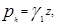
где g1 - удельный вес тиксотропного раствора.
Основное горизонтальное давление грунта на участке ножа и глиняного замка следует определять по формуле (24).
5.13. Давление грунта, расположенного ниже уровня грунтовых вод, необходимо определять с учетом взвешивающего действия воды.
5.14. Дополнительное горизонтальное давление грунта на участке стены колодца и ножа, а при тиксотропной рубашке - только на участке ножа следует определять по формуле
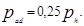
Дополнительное горизонтальное давление на участке стены тиксотропной рубашки следует определять по формуле
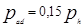
5.15. Основное давление грунта в плане колодца следует принимать равномерно распределенным.
5.16. Распределение дополнительного давления в плане для круглых колодцев (черт. 5) следует принимать изменяющимся по закону
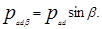
Черт. 5. Схема распределения основного ph и дополнительного pad горизонтального давления грунта на круглый колодец
5.17. В стадии эксплуатации колодец следует рассчитывать на горизонтальное давление грунта в состоянии покоя.
Основное горизонтальное давление следует определять по формуле
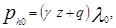
где z - расстояние от поверхности грунта до рассматриваемого сечения;
l0 - коэффициент бокового давления грунта в состоянии покоя, принимается равным:
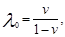
здесь v - коэффициент Пуассона, принимаемый равным:
0,23 - для песков гравелистых и крупных;
0,26 - то же, средней крупности;
0,28 - « мелких;
0,30 - « пылеватых;
0,33 - для супесей;
0,35 - « суглинков;
0,38 - « глин.
Если колодец погружен в грунт с разнородным напластованием, значение основного давления грунта для каждого слоя определяется по формуле
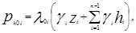
где l0i - коэффициент бокового давления грунта в состоянии покоя рассматриваемого i-го пласта грунта;
gi, zi - соответственно удельный вес грунта и расстояние от поверхности i-го пласта до рассматриваемого сечения колодца;
gi, hi - соответственно удельный вес грунта и толщина каждого вышележащего пласта.
Дополнительное горизонтальное давление грунта в состоянии покоя следует определять по формуле
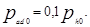
5.18. Расчетное значение на 1 м силы трения грунта Fz по наружной поверхности колодца на глубине z следует определять по формуле
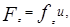
где и - наружный периметр ножа или стены колодца;
fz - удельная сила трения грунта по боковой поверхности колодца на глубине z на 1 м2 площади, зависящая от стадии работы колодца и вычисляемая по формулам:
а) в стадии погружения
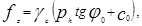
где gс - коэффициент условий работы, принимаемый равным 1,2 - для плотных песков, содержащих гравий, щебень и т.п., и 1 - для остальных грунтов;
б) в стадии всплытия
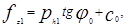
где ph1 - основное горизонтальное давление в период всплытия:
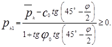
Если колодец погружается в тиксотропной рубашке, удельная сила трения в зоне рубашки не учитывается, а в зоне глиняного замка принимается равной 20 кПа (2 тс/м2).
5.19. Расчет колодцев необходимо выполнять на наиболее невыгодные сочетания нагрузок и воздействий, действующих в условиях строительства и эксплуатации:
в условиях строительства - по расчетным схемам, учитывающим требования принятых в проекте способов производства работ;
в условиях эксплуатации - по расчетным схемам, учитывающим наличие днища, внутренних стен, колонн, перекрытий и т.п., включая нагрузки и воздействия от всех расположенных внутри колодца и от опирающихся на колодец строительных конструкций и оборудования, а также учитывающим влияние соседних фундаментов зданий, сооружений и оборудования.
5.20. На нагрузки и воздействия, возникающие в условиях строительства колодцев, должны выполняться следующие расчеты:
а) по расчетным схемам, учитывающим наличие только наружных стен (без днища):
погружения колодца:
прочности колодца или его первого яруса, подлежащего погружению при снятии с временного основания (если это предусмотрено проектом производства работ);
прочности наружных стен при погружении колодца;
устойчивости формы цилиндрической оболочки колодцев, погружаемых в тиксотропной рубашке;
б) по расчетным схемам, учитывающим наличие наружных стен и днища:
всплытия колодца;
прочности днища;
прочности стен;
сдвига по подошве при односторонней выемке грунта вблизи колодца (если она предусматривается проектом).
5.21. На нагрузки и воздействия, возникающие в условиях эксплуатации колодца, должны выполняться следующие расчеты:
прочности наружных и внутренних стен, днища, перекрытий, колони и др.;
всплытия колодца;
оснований колодца по деформациям.
5.22. Все расчеты опускных колодцев следует производить по предельным состояниям первой группы, за исключением расчетов оснований по деформациям и по раскрытию трещин элементов конструкции, которые выполняются по предельным состояниям второй группы.
5.23. Расчет погружения колодца следует производить из условия
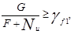
где G - вес колодца и пригрузки с учетом коэффициента надежности по нагрузке gf = 0,9;
F - сила трения стен колодца по грунту при погружении колодца;
Nu - вертикальная составляющая силы предельного сопротивления основания под ножом, определяемая по СНиП 2.02.01-83;
gf1 - коэффициент надежности погружения: gf1 > 1 в момент движения колодна и gf1 = 1 в момент остановки колодца или яруса на проектной отметке.
Колодцы, погружаемые ниже горизонта подземных вод, после устройства днища должны рассчитываться на всплытие в любых грунтах (за исключением случая, когда под днищем выполняется постоянно действующий дренаж) на расчетные нагрузки из условия
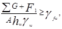
где åG - сумма всех постоянных вертикальных расчетных нагрузок с учетом пригрузки с коэффициентом надежности по нагрузке gf = 0,9;
F1 - сила трения при расчете на всплытие;
А - площадь основания колодца;
hw - расстояние от уровня подземных вод до основания днища колодца;
gw - удельный вес воды;
gfw - коэффициент надежности против всплытия, равный 1,2.
Если условие (40) не удовлетворяется, необходимо предусматривать мероприятия, препятствующие всплытию колодца (устройство анкерных конструкций в грунте и др.).
5.24. Расчет прочности погружаемых стен на нагрузки, возникающие в условиях строительства, следует производить, когда колодец или каждый ярус погружен до проектной глубины.
5.25. Расчет прочности железобетонного днища должен производиться на следующие нагрузки:
на отпор грунта под днищем колодца, если значения постоянных вертикальных нагрузок колодца более силы всплытия;
на гидростатическое давление подземных вод, если значения постоянных вертикальных нагрузок колодца менее силы всплытия (колодец заанкерен в прилегающем грунтовом массиве).
Расчет прочности днища колодца без внутренних стен и колонн должен производиться как пластины, лежащей на упругом основании, а на нагрузку от гидростатического давления подземных вод - как пластины с шарнирными опорами, нагруженной равномерно распределенной нагрузкой.
Днище, на которое опираются внутренние стены или колонны, рассчитывается соответственно как многопролетная пластина, состоящая из прямоугольных панелей, или как пластина, опертая в вершинах прямоугольной сетки колонн.
5.26. Расчет осадок колодцев следует выполнять в соответствии с требованиями СНиП 2.02.01-83.
5.27. Конструкцию гидроизоляции колодца надлежит назначать в зависимости от значений гидростатического напора подземных вод на уровне пола наиболее заглубленного помещения и требований к внутренним помещениям колодца в соответствии с СН 301-65. Верхнюю границу гидроизоляции стен следует назначать на 0,5 м выше максимально прогнозируемого уровня подземных вод.
5.28. Гидроизоляция колодцев из листовой стали, устраиваемая с внутренней стороны, может применяться лишь в исключительных случаях при соответствующем обосновании. Расчет гидроизоляции должен производиться на полный гидростатический напор.
6.1. Нормы настоящего раздела следует соблюдать при проектировании стальных и железобетонных резервуаров для нефти и нефтепродуктов.
Примечание. Настоящие нормы не распространяются на проектирование резервуаров:
для нефти и нефтепродуктов специального назначения;
для нефтепродуктов с упругостью паров выше 93,6 кПа (700 мм рт. ст.) при температуре 20 °С;
для нефти и нефтепродуктов, хранящихся под внутренним рабочим давлением выше атмосферного на 70 кПа (0,7 кгс/см2);
для нефти и нефтепродуктов, расположенных в горных выработках и в резервуарах казематного типа;
входящих в состав технологических установок.
6.2. При проектировании наземных и подземных резервуаров следует учитывать требования СНиП II-106-79 и ГОСТ 1510-84 (СТ СЭВ 1415-78).
6.3. В проектах резервуаров необходимо предусматривать максимальное сокращение потерь хранимой нефти и нефтепродуктов от испарения в период эксплуатации, а также соблюдение требований по охране окружающей среды.
6.4. При проектировании надлежит принимать резервуары следующих типов:
для наземного хранения - стальные и железобетонные вертикальные цилиндрические с плавающей крышей и со стационарной крышей (с понтонами и без понтонов); горизонтальные цилиндрические (стальные);
для подземного хранения - железобетонные (цилиндрические и прямоугольные); траншейного типа; стальные горизонтальные цилиндрические.
Максимальные полезные объем и площади зеркала подземных резервуаров следует принимать по СНиП II-106-79.
Примечания: 1. Полезный объем резервуаров определяется произведением горизонтального сечения резервуара на высоту от днища до уровня максимального заполнения для резервуаров со стационарной крышей и до максимального подъема низа плавающих конструкций для резервуаров с плавающей крышей или понтоном.
2. Геометрический объем резервуаров следует определять произведением горизонтального сечения резервуара на высоту стенки.
3. При выборе средств тушения и определении вместимости групп резервуаров следует принимать геометрический объем резервуаров.
6.5. В резервуарах следует предусматривать установки пожаротушения и охлаждения в соответствии со СНиП II-106-79 и настоящими нормами.
На резервуарах вместимостью от 1000 до 3000 м3 следует устанавливать пеногенераторы с сухими стояками, не доходящими до поверхности земли на 1 м. Число пеногенераторов определяется расчетом, но их должна быть не менее двух.
6.6. Резервуары в зависимости от типов и хранимого продукта должны быть оснащены устройствами, обеспечивающими допускаемое давление внутри резервуаров, предусмотренное проектом, в соответствии с нормами технологического проектирования и ГОСТ 14249-80.
6.7. Конструкции резервуаров должны предусматривать возможность очистки от остатков хранимого продукта, проветривания и дегазации резервуаров при их ремонте и окраске.
6.8. Для обслуживания оборудования (дыхательной аппаратуры, приборов и прочих устройств) все резервуары должны иметь стационарные лестницы, площадки и переходы шириной не менее 0,7 м с ограждениями по всему периметру высотой не менее 1 м.
6.9. Резервуары должны иметь технологические, световые, монтажные люки, а также и люки-лазы.
В стенах резервуаров с понтонами или плавающими крышами следует устраивать люки-лазы (наименьший размер диаметра патрубка 600 мм), обеспечивающие доступ персонала на плавающие конструкции при нижнем их положении.
Люки-лазы в стенах резервуаров необходимо размешать на расстоянии не более 6 м от наружной лестницы, которую следует соединять переходной площадкой со смотровой площадкой у люка-лаза.
Число люков-лазов и их тип устанавливаются проектом.
6.10. Резервуары с плавающей крышей следует применять для строительства в районах со снеговой нагрузкой не более 2 кПа (200 кгс/м2).
6.11. Расстояние от верха стенки резервуара с плавающей крышей или опорного кольца в резервуаре с понтоном до максимального уровня жидкости следует принимать не менее 0,6 м.
В резервуарах со стационарной крышей минимальное расстояние от низа врезки пенокамер до максимального уровня жидкости следует определять с учетом температурного расширения продукта и принимать не менее 100 мм.
6.12. Плавучесть металлических плавающих крыш и понтонов необходимо обеспечивать наличием открытых или закрытых отсеков, которые должны быть доступны для контроля и обслуживания.
Плавучесть неметаллических понтонов или экранов следует обеспечивать формой понтонов и объемным весом материала, из которого они изготовляются.
Расчет плавающих крыш и понтонов на плавучесть надлежит производить из условия плотности продукта 7 кН/м3 (700 кгс/м3) и учитывать нагрузку от конденсата в размера 0,3 кПа (30 кгс/м2).
6.13. Плавающие крыши должны иметь устройства удаления ливневых и талых вод за пределы резервуара.
6.14. Плавающие крыши, понтоны и их направляющие должны иметь уплотнители (затворы), обеспечивающие герметизацию.
Уплотнители для нефти, застывающей при температуре, указанной в проекте, должны иметь устройства, предотвращающие стекание нефти со стен на плавающую крышу или понтон.
6.15. Уплотнители в резервуарах с плавающими крышами или понтонами следует применять с коэффициентом герметичности менее 1,0×10-5 м/ч, обеспечивая сокращение потерь от 70 до 99 % по сравнению с открытой площадью зазора между стенкой резервуара и краем плавающей крыши или понтона, не защищенной каким-либо затвором.
6.16. На плавающей крыше в резервуарах вместимостью 5000 м3 и более надлежит предусматривать стальной кольцевой барьер для удержания пены высотой не выше верха выступающих элементов затвора на 25 - 30 см, но не менее 1 м. Кольцевой барьер следует располагать не ближе 2 м от стены резервуара и в нижней его части обеспечивать плотное примыкание к поверхности плавающей крыши.
Для стока из кольцевого пространства, образованного барьером и стеной резервуара, атмосферных вод и раствора пенообразователя после пожаротушения в нижней части барьера необходимо предусматривать дренажные отверстия диаметром 30 мм, расположенные на расстоянии 1 м одно от другого по периметру.
6.17. Опорные стальные стойки плавающих крыш и понтонов следует проектировать с возможностью изменения их высоты под плавающими конструкциями а период эксплуатации резервуара.
Высоту опорных стоек следует назначать, соблюдая следующие условия:
минимальное расстояние от днища резервуара до плавающей крыши или понтона в период эксплуатации должно обеспечивать зазор 100 мм между оборудованием, установленным внутри резервуара, или патрубком приемо-раздаточного трубопровода и днищем короба плавающей крыши или скребком затвора;
расстояние от днища резервуара до плавающей крыши или понтона у стены резервуара в период ремонта должно быть не менее 2 м.
6.18. Неметаллические понтоны следует проектировать из несгораемых токопроводящих материалов или оборудовать устройствами, обеспечивающими снятие статического электричества.
6.19. Плавающие крыши и понтоны должны иметь устройства для удаления паровоздушной смеси и регулирования давления под ними как на плаву, так и при нижнем фиксированном их положении1, а также устройства для отвода статического электричества.
__________
1 А.с. № 793870 (СССР). Резервуар для жидкости /Евтихин В. Ф. Опубл. в Б. И., 1981, № 1.
6.20. Резервуары со стационарными крышами должны проектироваться:
для нефти и нефтепродуктов с давлением насыщенных паров 26,6 кПа (200 мм рт. ст.) и ниже;
для легковоспламеняющихся нефтепродуктов с температурой вспышки паров 28 °С и ниже, с расчетным давлением в газовом пространстве на 70 кПа (7000 мм вод. ст.) выше атмосферного и ниже атмосферного по заданию на проектирование;
для подогреваемых нефтепродуктов с температурой хранения от 20 до 60 °С включ. с теплоизоляцией из несгораемых материалов при соответствующем обосновании;
для подогреваемых нефтепродуктов с температурой хранения от 60 до 90 °С включ. с обязательной теплоизоляцией из несгораемых материалов и устройствами обогрева;
для нефтепродуктов с температурой хранения выше 90 °С, не допускающих присутствия влаги, с учетом дополнительных требований по пожарной безопасности (подачи под крышу инертных газов) и устройством теплоизоляции из несгораемых материалов и наружных систем подогрева.
6.21. При расчете резервуаров со стационарными крышами давление в газовом пространстве следует назначать:
при огневых предохранителях и вентиляционных патрубках на 0,2 кПа (20 мм вод. ст.) выше и ниже атмосферного;
при огневых предохранителях и предохранительных клапанах - выше атмосферного на 2,5 кПа (250 мм вод. ст.) или более по заданию на проектирование и на давление 0,5 кПа (50 мм вод. ст.) ниже атмосферного.
6.22. Горизонтальные стальные цилиндрические резервуары следует проектировать для нефтепродуктов с давлением в газовом пространстве выше атмосферного и принимать:
с плоскими торцевыми элементами - до 40 кПа (4000 мм вод. ст.);
с коническими торцевыми элементами - до 70 кПа (7000 мм вод. ст.).
Резервуары следует рассчитывать также на давление ниже атмосферного в пределах до 10 %, указанное в настоящем пункте.
6.23. Подземные стальные резервуары траншейного типа допускается проектировать только для светлых нефтепродуктов.
6.24. Предельные деформации основания резервуара, соответствующие пределу эксплуатационной его пригодности по технологическим требованиям, следует устанавливать правилами технологической эксплуатации оборудования или заданием на проектирование. При этом максимальная абсолютная осадка не должна превышать 200 мм, а относительная осадка основания под днищем, равная отношению разности осадок двух смежных точек к расстоянию между ними, не должна превышать 0,005.
В цилиндрических вертикальных резервуарах разность осадок под центральной частью днища и под стеной не должна превышать 0,003r и должна быть не более 100 мм (где r - радиус резервуара). Крен резервуаров не должен превышать 0,002 - для резервуаров с понтоном или плавающей крышей и 0,004 - для резервуаров без понтона или плавающей крыши.
6.25. Отметку низа днища наземных резервуаров необходимо принимать не менее чем на 0,5 м выше уровня планировочной отметки земли около резервуаров.
6.26. В резервуаре со стационарной крышей следует предусматривать отмостку.
6.27. Основные размеры вертикальных и горизонтальных цилиндрических резервуаров (диаметр, высоту, длину) следует принимать с учетом минимального удельного расхода стали, индустриальных методов изготовления, кратными длине и ширине листов прокатной стали с учетом для горизонтальных резервуаров требований ГОСТ 17032-71.
Высоту стенки вертикальных резервуаров следует назначать не более 18 м. При установке резервуаров на сваях межсвайное пространство между днищем резервуаров и уровнем земли следует заполнять грунтом.
Резервуары высотой 12 м и более (включая высоту подсыпки под днищем) необходимо оборудовать стационарными кольцами водяного орошения, размещаемыми под кольцами жесткости. Если в кольцах жесткости имеется отверстие для стока воды, то кольцо орошения размешают только под верхним кольцом жесткости.
6.28. При проектировании стальных резервуаров надлежит предусматривать возможность применения при их изготовлении и монтаже метода рулонирования с соединением листов встык.
6.29. Расчет конструкций резервуаров следует выполнять в соответствии с требованиями СНиП II-23-81, при этом марки сталей должны приниматься с отнесением отдельных элементов резервуаров к следующим группам:
группа I - стены и окрайки днищ резервуаров вместимостью 10 тыс. м3 и более, фасонки крыш резервуаров;
группа II - стены и окрайки днищ резервуаров вместимостью менее 10 тыс. м3, покрытия, опорные кольца покрытия и кольца жесткости, центральные части днищ, понтоны и плавающие крыши резервуаров всех вместимостей.
6.30. При расчете вертикальных цилиндрических стальных резервуаров необходимо учитывать усилия, возникающие в конструкции при ее взаимодействии с основанием.
6.31. Значения коэффициента условий работы gс следует принимать по табл. 5.
Коэффициенты надежности по нагрузке следует принимать в соответствии со СНиП 2.01.07-85 с учетом дополнительных коэффициентов gf, приведенных в табл. 6.
Таблица 5
|
Коэффициент условий работы gс |
|
|
Стены вертикальных цилиндрических резервуаров при расчете на прочность: |
|
|
нижний пояс (с учетом врезок) |
0,7 |
|
остальные пояса |
0,8 |
|
сопряжение стенки резервуара с днищем |
1,2 |
|
То же, при расчете элементов на устойчивость |
1 |
|
Сферические и конические покрытия распорной конструкции при расчете: |
|
|
по безмоментной теории |
0,9 |
|
по моментной теории с применением ЭВМ |
1 |
6.32. В проектах стальных резервуаров должно быть указание о том, что перед герметизацией необходимо устанавливать клапаны, исключающие возможность повышения нагрузки на днища, перекрытия и стены от воздействия перепада давления и температуры воздуха внутри и снаружи резервуара.
6.33. Горизонтальные резервуары необходимо предусматривать опирающимися на отдельные опоры или на сплошное искусственное основание.
Таблица 6
|
Коэффициент надежности по нагрузке gf |
|
|
Давление выше или ниже атмосферного |
1,2 |
|
Ветровая нагрузка на вертикальные стены цилиндрических резервуаров при расчете на устойчивость |
0,5 |
|
Снеговая нагрузка на сферические крыши резервуаров |
0,7 |
Примечание. Ветровая нагрузка условно принимается равномерно распределенной по окружности. Аэродинамический коэффициент следует определять по СНиП 2.01.07-85.
6.34. Под подземными горизонтальными стальными цилиндрическими резервуарами и резервуарами траншейного типа необходимо устраивать латок с наклоном в сторону контрольного колодца для возможности обнаружения утечек нефтепродукта при нарушении герметичности резервуара.
6.35. Подземные стальные резервуары должны иметь на крыше люки-лазы, выступающие выше уровня земли не менее чем на 0,2 м.
6.36. При проектировании подземных горизонтальных стальных цилиндрических резервуаров и резервуаров траншейного типа следует предусматривать стационарные лестницы (стремянки). Лестницы должны быть прикреплены к патрубку люка-лаза. Между низом лестницы (стремянки) и днищем резервуара должен предусматриваться зазор не менее 0,5 м.
6.37. Основания под наземные вертикальные резервуары вместимостью 5000 м3 и менее следует выполнять, как правило, в виде песчаных подушек с устройством гидроизолирующего слоя, а фундаменты под резервуары вместимостью 10 000 м3 и более - железобетонными в виде кольца, сплошной плиты или свайных фундаментов с ростверком.
Резервуары, предназначенные для этилированных бензинов, под днищем должны иметь сплошную бетонную или железобетонную плиту с уклоном от центра к периметру.
6.38. Настоящие нормы распространяются на проектирование подземных железобетонных резервуаров для нефти и темных нефтепродуктов.
6.39. Резервуары должны иметь, как правило, следующие модульные размеры:
диаметр резервуаров вместимостью 500 м3 и более - кратный 3 м;
размер стен прямоугольных резервуаров - кратный 6 м и сетку колонн 6´6 или 3´6 м.
6.40. В цилиндрических резервуарах днища, стены и покрытия следует проектировать предварительно напряженными в двух направлениях, а вертикальные швы между сборными элементами стен допускается принимать обжатыми в одном направлении (перпендикулярно длине шва) при условии предварительного напряжения панелей в вертикальном направлении. В резервуарах для хранения мазута допускается применение необжатых стен.
6.41. Отметка заложения днища резервуара должна находиться на 1 м выше максимального уровня подземных вод во время строительства и эксплуатации.
При специальном обосновании допускается расположение подошвы фундамента резервуара ниже уровня подземных вод. В этом случае должны производиться расчет резервуара на всплытие и проверка прочности и трещиностойкости днища и стен от давления подземных вод при пустом и обсыпанном грунтом резервуаре.
6.42. В целях охраны окружающей среды следует предусматривать под днищем резервуара дренажную систему с контрольными колодцами для регистрации возможных утечек продукта. При наличии подземных вод на площадке следует предусматривать самостоятельную дренажную систему для их отвода.
6.43. На поверхности земли необходимо предусматривать отмостку, предотвращающую затекание поверхностных вод между засыпкой и стеной резервуара.
6.44. Сборные конструкции железобетонных резервуаров следует проектировать с применением бетонов классов по прочности на сжатие В25 - В40, а для монолитных конструкций - В25 - В30. Допускается применение бетонов более высоких классов, если это экономически обосновано.
В проекте должны быть указаны требования к составу бетона, устанавливаемые с учетом указаний пп. 6.47 и 6.48.
6.45. Железобетонные конструкции водозаливаемых покрытий резервуаров должны иметь марку бетона по морозостойкости не ниже F300 и по водонепроницаемости не ниже W8. Остальные железобетонные конструкции резервуара по морозостойкости должны удовлетворять требованиям СНиП 2.03.01-84, а по водонепроницаемости должны соответствовать марке не ниже W6.
6.46. Узлы и стыки следует замоноличивать бетоном или раствором, проектные классы по прочности на сжатие которых, марки по морозостойкости и водонепроницаемости в момент напряжения конструкции должны быть не ниже классов и марок основных конструкций.
6.47. При проектировании резервуаров для нефти и темных нефтепродуктов следует предусматривать применение бетона на сульфатостойком портландцементе.
Допускается применение низкоалюминатного портландцемента при содержании в нем С3А £ 5 % и С3А + C4AF £ 2,2 % с добавкой в воду растворимого стекла в количестве 3,5 % массы цемента. Водоцементное отношение для бетона не должно превышать 0,45.
Запрещается применение других добавок, кроме пластифицирующей типа ССБ.
6.48. В качестве заполнителей бетона необходимо применять щебень и песок в соответствии с требованиями ГОСТ 10268-80. Применение гравия в качестве заполнителя запрещается, при этом содержание зерен заполнителя пластинчатой и игловатой формы должно быть не более 15 %.
6.49. Конструкции резервуаров должны быть рассчитаны на воздействия, возникающие в период их возведения и эксплуатации:
нагрузку от воды при испытании незасыпанного резервуара;
нагрузку от грунта (для заглубленного резервуара) при засыпанном и пустом резервуаре с учетом вакуума;
ветровую нагрузку при монтаже;
перепад температур и усадку бетона в период возведения.
Эксплуатационные нагрузки и перепады температур продукта и наружной среды должны быть предусмотрены заданием на проектирование.
6.50. При проектировании резервуаров следует учитывать:
изгибающие моменты, возникающие от неравномерного распределения температур по толщине стен при заполнении горячими нефтепродуктами или при понижении температуры наружного воздуха до расчетной зимней температуры;
температурные усилия, возникающие за счет изменения средней температуры стены резервуаров в продольном направлении.
6.51. В конструкциях резервуаров допускаются (при учете невыгоднейшего сочетания нормативных нагрузок, включая температурное воздействие) при внецентренном сжатии несквозные трещины шириной до 0,1 мм. При этом в ограждающих конструкциях (стенах, днище и перекрытии) напряжение сжатия в крайнем сжатом волокне должно быть не менее 0,05Rb,ser.
6.52. Расчетные и нормативные сопротивления бетона и стали следует принимать в соответствии со СНиП 2.03.01-84.
В случае нагрева конструкций выше 50 °С следует учитывать изменение расчетных сопротивлении бетона и арматуры при расчете по предельным состояниям первой и второй групп, начального модуля упругости бетона по СНиП 2.03.04-84.
7.1. Нормы настоящего раздела следует соблюдать при проектировании стальных газгольдеров, предназначенных для хранения, смешения, усреднения концентраций и выравнивания давления и распределения газов.
7.2. При проектировании газгольдеров следует предусматривать возможность поточного метода изготовления и монтажа конструкций и доступность их для наблюдения, очистки, ремонта, антикоррозионной защиты, окраски, а также проветривания и дегазации газгольдеров в период ремонта.
7.3. Газгольдеры следует проектировать: низкого давления - до 4 кПа (400 мм вод. ст.) и высокого давления - от 70 кПа (0,7 кгс/см2).
7.4. Вместимость газгольдеров следует принимать, м3:
мокрых - до 50 000;
сухих с гибкой секцией - до 10 000;
шаровых - от 600 [для продуктов с давлением до 1,8 МПа (18 кгс/см2)] до 2000 [для несгораемых продуктов с давлением до 1,2 МПа (12 кгс/см2)], а для легковоспламеняющихся и горючих продуктов с давлением до 0,25 МПа (2,5 кгс/см2);
горизонтальных цилиндрических - от 50 до 300;
вертикальных цилиндрических - от 50 до 200.
7.5. При проектировании газгольдеров следует применять марки стали по СНиП II-23-81 с отнесением элементов газгольдеров к группам в соответствии с п. 6.29.
7.6. Опоры газгольдеров высокого давления следует проектировать;
шаровых - стоечные или сплошные (цилиндрические, конические и др.);
горизонтальных цилиндрических - седловые или стоечные;
вертикальных цилиндрических - сплошные или стоечные.
Предел огнестойкости несущих конструкций под газгольдеры постоянного объема должен быть не менее 2 ч.
7.7. При проектировании газгольдеров низкого давления (мокрых и сухих) надлежит предусматривать, как правило, применение при их изготовлении и монтаже метода рулонирования.
7.8. Высоту и диаметр сухих газгольдеров и звеньев мокрых газгольдеров, а также оболочек горизонтальных и вертикальных цилиндрических газгольдеров следует, как правило, принимать кратными ширине и длине прокатной листовой стали.
7.9. Листовые конструкции газгольдеров низкого давления следует проектировать из стали на более трех марок.
7.10. При проектировании оболочек шаровых газгольдеров надлежит:
применять форму лепестков, обеспечивающую наименьший отход листовой стали;
применять оболочку, как правило, из стали одной марки;
число лепестков оболочки принимать четным;
число стоек принимать, как правило, четным;
предусматривать сварные соединения встык лепестков с обработанными кромками.
7.11. При расчете газгольдеров низкого давления следует применять коэффициенты надежности по нагрузке и условий работы в соответствии с приведенными в п. 6.31 и согласно требованиям СНиП II-23-81.
Дополнительные коэффициенты условий работы gс следует принимать по табл. 7, а дополнительные коэффициенты надежности по нагрузке gf при расчете на избыточное давление в газгольдерах высокого давления следует принимать равными 1,2.
Таблица 7
|
Коэффициент условий работы gс |
|
|
Оболочка шарового резервуара при расчете на прочность и устойчивость: |
|
|
по безмоментной теории |
0,6 |
|
по моментной теории |
0,9 |
|
Зоны краевого эффекта |
1,2 |
|
Внешние вертикальные направляющие мокрых газгольдеров |
0,9 |
|
Сжатые основные элементы купола и сжатый пояс жесткости мокрого газгольдера |
0,9 |
7.12. Для обслуживания установленной арматуры, люков, приборов и прочих устройств газгольдеры должны обеспечиваться стационарными лестницами, площадками, переходами шириной не менее 0,7 м с ограждениями высотой 1,0 м.
7.13. Верхняя часть газгольдеров, подвергающаяся нагреванию солнечными лучами, должна иметь кастовую окраску с коэффициентом отражения не менее 50 %. Допускается размещение на газгольдерах знаков, цифр и других обозначений хранимых материалов или эмблемы предприятия.
8.1. Нормы настоящего раздела следует соблюдать при проектировании открытых закромов для хранения сыпучих и штучных материалов.
8.2. Закрома допускается располагать в зданиях и на открытых площадках заглубленными или наземными, как правило, сблокированными, многоячейковыми.
8.3. Размеры ячеек закромов в плане следует принимать, как правило, 6´6, 6´9 и 9´9 м. Допускается принимать большие размеры, кратные 3 м, если это обусловливается технологическими требованиями.
8.4. Высоту стен закромов следует принимать равной 3,6; 4,8 или 6 м.
Минимальное заглубление стен закромов от уровня пола или планировочной отметки земли следует принимать равным 0,6 м, а пола - 0,3 м, минимальное превышение верха стен закромов над уровнем пола или планировочной отметки земли - равным 1,2 м.
8.5. Закрома следует проектировать, как правило, железобетонными.
8.6. В закромах для хранения металлической шихты стены с внутренней стороны и сверху должны быть защищены деревянными брусьями. В монолитных закромах допускается устройство защиты из старогодных рельсов.
В закромах для сыпучих материалов защиту следует предусматривать только по верху стен.
8.7. Полы закромов надлежит выполнять из камня грубого окола или грунтовыми.
При загрузке и выгрузке материалов грейферными кранами следует предусматривать буферный слой из хранимого материала толщиной не менее 0,3 м.
8.8. Горизонтальное давление материала на стены закромов допускается определять как для подпорных стен. Нормативные характеристики материалов, хранимых в закромах, следует принимать в соответствии с табл. 8.
Таблица 8
|
Нормативный удельный вес, кН/м3 (тс/м3) |
Нормативный угол внутреннего трения, град |
|
|
Чушковый чугун |
40 (4) |
45 |
|
Литники |
35 (3,5) |
|
|
Ферросплавы |
40 (4) |
|
|
Металл передельный |
35 (3,5) |
|
|
Стальная стружка |
20 (2) |
50 |
|
Чугунный лом |
25 (2,5) |
45 |
|
Стальной лом |
20 (2) |
|
|
Хромовая руда |
27 (2,7) |
|
|
Марганцевая руда |
20 (2) |
|
|
Железная руда |
25 (2,5) |
|
|
Шлак передельный |
18 (1,8) |
|
|
Кварцит |
20 (2) |
|
|
Шамот |
18 (1,8) |
|
|
Дунит |
28 (2,8) |
|
|
Хромит |
31 (3,1) |
|
|
Шлак |
12 (1,2) |
40 |
|
Песок сырой |
18 (1,8) |
35 |
|
Известняк |
17 (1,7) |
|
|
Глина |
18 (1,8) |
|
|
Каолин сырой |
14 (1,4) |
|
|
Известь |
8 (0,8) |
|
|
Магнезитовый порошок |
19 (1,9) |
33 |
|
Песок сухой |
16 (1,6) |
30 |
|
Кокс и коксик |
8 (0,8) |
8.9. Стены закромов должны быть рассчитаны также на горизонтальное давление грунта с учетом временной нормативной нагрузки на поверхности земли интенсивностью не менее 20 кПа (2 тс/м2) при опорожненном закроме.
8.10. Коэффициент надежности по нагрузке для определения расчетного веса материалов заполнения закромов следует принимать gс = 1,2. Расчетный угол внутреннего трения определяется делением значения нормативного угла внутреннего трения на коэффициент надежности по нагрузке gf = 1,1.
8.11. Для осмотра, ремонта, очистки закромов их необходимо обеспечивать переносными лестницами.
9.1. Нормы настоящего раздела следует соблюдать при проектировании наружных бункеров и бункеров, располагаемых внутри зданий и сооружений.
9.2. Проектирование бункера должно включать два последовательных этапа: 1) определение геометрических параметров - формы бункера и его воронки, углов наклона стенок, размеров выпускного отверстия, которые определяются расчетом на основании физико-механических характеристик сыпучего материала с учетом неблагоприятных их изменений, при этом должны исключаться сводообразование над выпускным отверстием и зависание на стенках; 2) расчет и проектирование конструкций бункеров и их защиты от ударов и истирания.
9.3. Определение геометрических параметров бункеров различается для связных (имеющих сцепление, слеживающихся) и несвязных (не имеющих сцепления, неслеживающихся) сыпучих материалов. К связным относятся, как правило, материалы, содержащие фракции менее 2 мм и имеющие влажность более 2 %, а к несвязным - щебень, галька и другие материалы с крупностью зерен 2 мм и более, а также песок с крупностью зерен до 2 мм и влажностью до 2 %.
9.4. При проектировании бункеров необходимо принимать во внимание, что имеются две возможные формы истечения сыпучего материала: гидравлическая, при которой находится в движении сыпучий материал во всем объеме бункера, и негидравлическая, при которой движется только центральная часть над выпускным отверстием, а остальной материал неподвижен.
Для связных или самовозгорающихся сыпучих материалов следует проектировать бункера с гидравлической формой истечения, а для несвязных, как правило, с негидравлической.
9.5. Бункера негидравлического истечения для несвязных материалов могут быть различной формы: пирамидальной, конической, с плоским горизонтальным днищем, параболической или другой симметричной или несимметричной формы.
При проектировании геометрических параметров для таких бункеров нормируется только один параметр - размер выпускного отверстия, который должен определяться в зависимости от размера максимального куска сыпучего материала.
Угол наклона стенок воронки допускается принимать произвольным, за исключением случаев, когда по условиям технологии требуется полное опорожнение бункера. В этом случае угол наклона стенок следует принимать по углу естественного откоса сыпучего материала с превышением последнего на 5-7°.
9.6. Бункера для связных материалов гидравлического истечения надлежит назначать конической, пирамидальной или лотковой формы. Другие формы (параболическая, с плоским днищем), а также несимметричные бункера не допускаются.
Угол наклона станок и размеры выпускного отверстия таких бункеров следует рассчитывать на основании физико-механических характеристик сыпучего материала: угла внутреннего трения (угол естественного откоса не допускается), удельного сцепления, угла внешнего трения, эффективного угла трения, функции истечения, - определяемых с помощью приборов, измеряющих сопротивление сыпучего материала на сдвиг.
Угол наклона стенок допускается приближенно выбирать по черт. 6 в зависимости от угла внешнего трения (угла трения сыпучего материала по материалу стенки бункера).
Черт. 6. Графики для определения угла наклона стенок бункеров для связных материалов
1 - для бункеров с прямоугольной формой выпускного отверстия (отношение сторон 3:1 и более); 2 - для воронок конической формы с круглым отверстием или пирамидальной формы с квадратным отверстием; j - угол трения сыпучего материала по стенкам бункера; a - угол наклона стенки к горизонтали
9.7. При проектировании бункеров для связных сыпучих материалов объемно-планировочное решение бункерного пролета зданий следует устанавливать после определения геометрических параметров бункеров. Бункерные пролеты должны иметь унифицированные сетки колонн и высоты этажей.
9.8. При проектировании бункеров следует обеспечить максимальное использование всего геометрического объема бункера (не менее 80 % при загрузке).
9.9. Давление сыпучего материала на стенки бункера следует принимать как для подпорной стены без учета сил трения между сыпучим материалом и стенками бункера.
9.10. Конструкции бункера следует рассчитывать на действие временной нагрузки от веса сыпучего материала, заполняющего бункер, постоянных нагрузок от собственного веса конструкций, веса футеровки, а также на действие постоянных и временных нагрузок надбункерного перекрытия.
9.11. Стенки бункера следует рассчитывать на растягивающие усилия в горизонтальном и скатном направлениях и изгибающие моменты от местного изгиба из плоскости станок. Конструкции бункера в целом рассчитываются на общий изгиб, учитывающий пространственную работу бункера.
9.12. При расчете конструкций бункеров удельный вес g сыпучего материала необходимо принимать по технологическому заданию.
9.13. Бункера следует проектировать, как правило, железобетонными или сталежелезобетонными (из плоских железобетонных плит и стального каркаса), или сборно-монолитными железобетонными. Стальными допускается проектировать воронки, сужающиеся части бункеров, параболические (висячие бункера), а также бункера, которые по технологическим условиям подвергаются механическим, химическим и температурным воздействиям сыпучего материала и не могут быть выполнены из железобетона.
9.14. Внутренние грани углов бункеров для связных материалов следует проектировать с аутами или закруглениями.
9.15. Бункера для пылевидных материалов должны быть герметичными, а бункера, предназначенные для пылящих материалов (сухие кусковые материалы горных пород малой крепости, например, известняк), - оборудованы аспирационными установками.
9.16. Внутренние поверхности бункеров следует разделять на участки, подвергающиеся износу (I и II зоны) и не подвергающиеся износу (III зона).
I зона - участок, подвергающийся ударам потока сыпучего материала при загрузке бункера и истиранию при его разгрузке. I зону следует защищать, как правило используя принцип самозащиты, или износостойкой защиты на упругом основании или резиной.
II зона - участок, подвергающийся истиранию сыпучим материалом в процессе разгрузки бункера. II зону следует защищать каменным литьем, шлакоситаллом, полимерными материалами, резиной и другими материалами, а при температуре сыпучего материала свыше 50 °С - шлакокаменным и каменным литьем термостойких составов.
III зона - участок, не требующий защиты.
9.17. При сочетании истирающего воздействия, высокой температуры и химической агрессии сыпучего материала внутренние поверхности бункеров следует защищать плитами из шлакокаменного литья, износостойкого и жаростойкого бетона (с заполнением швов раствором кислотостойких и жаростойких составов), а также в отдельных случаях листами из соответствующих видов сталей (термостойких и др.).
9.18. При эксплуатации бункеров в агрессивной и газовой среде их наружные поверхности следует защищать от коррозии в соответствии с требованиями СНиП 2.03.11-85.
9.19. При проектировании бункеров для влажных сыпучих материалов, располагаемых в неотапливаемых помещениях, необходимо предусматривать эффективный обогрев стен бункеров в целях предотвращения смерзания материала в бункере.
9.20. Утеплитель стен бункеров для пылевидного материала во избежание конденсации водяных паров следует располагать снаружи и выполнять из несгораемых материалов.
9.21. При проектировании бункеров для связных материалов, поступающих в нагретом или смерзшемся состоянии, необходимо предусматривать теплоизоляцию стен бункеров в соответствии с теплотехническим расчетом, исключающую конденсацию водяных паров при нагретом материале, а также примерзание к стенам смерзшегося материала.
9.22. Бункера, как правило, должны иметь перекрытия из несгораемых материалов с проемами для загрузки. Если загрузка производится средствами не непрерывного транспорта (вагоны, автомашины, грейферы), допускается выполнять бункер без перекрытия, но с обязательным устройством сплошного ограждения высотой не менее 1 м с боков и со стороны, противоположной загрузке. Необходимость устройства стальных решеток для перекрытия технологических проемов и размер ячеек решеток определяются технологическим заданием.
9.23. В бункерах для пылевидных материалов необходимо предусматривать сверху перекрытия монолитную армированную стяжку толщиной 50 мм, если толщина плит в месте стыка 100 мм и менее.
9.24. В бункерах, предназначенных для горячих сыпучих материалов, между износостойкой зашитой и несущей конструкцией следует предусматривать термоизоляцию из несгораемых материалов: в стальных бункерах - при температуре нагрева свыше 300 °С, а в железобетонных - свыше 100 °С.
9.25. В бункерах, предназначенных для хранения сыпучих материалов, выделяющих воспламеняющиеся газы (например, метан из каменного угля), конструкция перекрытия не должна иметь выступающих вниз ребер.
9.26. В перекрытиях бункеров должны быть устроены люки, закрываемые заподлицо с перекрытием металлическими крышками. В надбункерном помещении должны предусматриваться подъемно-транспортные устройства, а внутри бункеров снизу перекрытий - петли для крепления талей и других монтажных средств.
9.27. Бункера должны оснащаться устройствами для механической очистки стен и удаления зависшего сыпучего материала, чтобы исключалась необходимость спуска людей в бункера.
10.1. Нормы настоящего раздела должны соблюдаться при проектировании силосов и силосных корпусов, выполняемых из железобетона или стали и предназначающихся для хранения промышленных сыпучих материалов.
Силосы для хранения зерна и продуктов его переработки следует проектировать в соответствии с требованиями СНиП 2.10.05-85.
10.2. Форму, размеры и расположения силосов в плане следует принимать в соответствии с требованиями технологии производства, унификации, грунтовыми и температурными условиями, а также исходя из результатов технико-экономических сопоставлений и с учетом архитектурно-композиционных требований.
Допускается блокировка силосных корпусов с обслуживающими зданиями II категории огнестойкости. При этом должна быть учтена разность осадок фундаментов силосов и примыкающих зданий.
10.3. Форма воронки силоса, углы ее наклона, а также размеры выпускного отверстия должны определяться с учетом условий надежного истечения сыпучего материала в соответствии с требованиями пп. 9.2 - 9.6.
10.4. Силосы допускается проектировать как отдельно стоящими, так и сблокированными в корпуса. При диаметре более 12 м силосы следует проектировать, как правило, отдельно стоящими.
10.5. Форма отдельного силоса в плане принимается, как правило, круглой. Допускается при соответствующем обосновании принимать силосы квадратными и многогранными.
10.6. При проектировании силосных корпусов следует, как правило, принимать: сетки разбивочных осей, проходящих через центры сблокированных силосов, 3´3, 6´6 и 12´12 м; наружные диаметры круглых силосов - 3, 6, 12, 18 и 24 м; размеры в осях стен квадратных силосов - 3´3 м; высоты стен силосов, а также подсилосных и надсилосных этажей - кратными 0,6 м.
10.7. Железобетонные силосные корпуса длиной до 48 м допускается проектировать без деформационных швов.
При нескальных грунтах основания отношение длины силосного корпуса к его ширине и высоте должно быть не более 2. При однорядном расположении силосов это отношение допускается увеличивать до 3.
Допускается увеличение длины корпуса и указанных отношений при соответствующем обосновании.
10.8. При проектировании многорядных силосных корпусов с круглыми в плане силосами пространство между ними (звездочки) следует использовать для размещения лестниц, различных коммуникаций, установки технологического оборудования, не требующего обслуживания, а также для хранения несвязных сыпучих материалов.
Примечание. При хранении в силосах горячих сыпучих материалов устройство лестниц в звездочках допускается при условии соблюдения требований СНиП II-33-75.
10.9. Выпускные отверстия в силосах должны, как правило, располагаться центрально. При необходимости устройства нескольких выпускных отверстий их следует располагать симметрично относительно осей силоса.
10.10. При проектировании силосных корпусов следует исходя из ТП 101-81*, технико-экономической целесообразности и конкретных условий строительства предусматривать применение монолитного железобетона (при возведении индустриальными методами) или сборного железобетона (из унифицированных изделий).
Допускается применение стальных силосов для сыпучих материалов, хранение которых ив допускается в железобетонных емкостях, а также стальных инвентарных и оперативных силосов.
10.11. При проектировании стен силосов из стали следует предусматривать индустриальные методы их изготовления и монтажа путем применения; листов и лент больших размеров; способа рулонирования; изготовления заготовок в виде «скорлуп»; автоматической сварки с минимальным количеством сварных швов, выполняемых на монтаже, а также других передовых методов.
10.12. Сборные железобетонные стены силосов следует проектировать для силосов круглых в плане диаметром 3 м из объемных блоков. При больших размерах - из отдельных элементов, укрупняемых перед монтажом в царги или блоки, или из элементов, монтируемых без предварительного укрупнения.
10.13. В проектах должны предусматриваться мероприятия, обеспечивающие защиту стыков сборных элементов от проникания атмосферных осадков и пыления мелкодисперсных хранимых материалов.
10.14. Внутренние поверхности стен и днища силосов не должны иметь выступающих горизонтальных ребер и впадин.
10.15. Днища силосов в зависимости от диаметра силоса и хранимого материала следует проектировать в виде железобетонной плиты со стальной полуворонкой и бетонной забуткой или в виде железобетонной или стальной воронки на все сечение силоса.
10.16. Стены и днища силосов для абразивных и кусковых материалов следует защищать от истирания и разрушения при загрузке.
Материал для защиты стен и днища силосов следует выбирать в зависимости от физико-механических свойств хранимого материала. При проектировании силосов необходимо учитывать также химическую агрессию хранимого материала и воздушной среды.
10.17. При применении для загрузки силосов трубопроводного контейнерного пневматического транспорта на надсилосном перекрытии следует предусматривать предохранительные клапаны для предупреждения возникновения избыточного давления в силосах.
10.18. Надсилосные перекрытия следует проектировать, применяя сборные железобетонные плиты по сборным железобетонным или стальным балкам. Для силосов со стальными стенами перекрытие допускается проектировать из стали.
10.19. Покрытия отдельно стоящих круглых силосов при отсутствии надсилосного помещения, а также силосов диаметром более 12 м допускается проектировать в виде оболочек.
10.20. Надсилосные помещения и конвейерные галереи следует проектировать, применяя облегченные стеновые ограждения из несгораемых материалов. Допускается также применение сборных железобетонных конструкций.
10.21. Наружные стены неотапливаемых подсилосных помещений следует проектировать, как правило, применяя железобетонные сборные панели. Стены отапливаемых помещений в подсилосной части должны проектироваться панельными или кирпичными.
10.22. При проектировании соединительных галерей между силосами или между силосными корпусами следует учитывать относительные смещения силосов или силосных корпусов, вызываемые неравномерными осадками и кренами.
10.23. Колонны подсилосного этажа надлежит проектировать сборными или монолитными железобетонными.
10.24. Фундаменты отдельно стоящих силосов и силосных корпусов следует проектировать в виде монолитных железобетонных безбалочных плит. На скальных и крупнообломочных грунтах допускается принимать фундаменты отдельно стоящие, ленточные или кольцевые, монолитные или сборные.
Свайные фундаменты следует предусматривать, если расчетные деформации естественного основания превышают предельные или не обеспечивается его устойчивость, а также при наличии просадочных грунтов и в других случаях при соответствующем технико-экономическом обосновании.
10.25. Конструкции силосов необходимо рассчитывать на нагрузки и воздействия в соответствии с требованиями СНиП 2.01.07-85. При расчете силосов должны быть также учтены нагрузки и воздействия:
временные длительные - от веса сыпучих материалов, части горизонтального давления и трения сыпучих материалов о стены силосов, веса технологического оборудования [не менее 2 кПа (200 кгс/м2)], усадки и ползучести бетона, крена и неравномерных осадок;
кратковременные - возникающие при изготовлении, перевозке и монтаже сборных конструкций, при изменении температур наружного воздуха, от части горизонтального неравномерного давления сыпучих материалов, от давления воздуха, нагнетаемого в силос, при активной вентиляции и гомогенизации;
особые - от давления, развиваемого при взрыве.
10.26. Аэродинамические коэффициенты при расчете силосов на ветровые нагрузки принимаются по СНиП 2.01.07-85.
Аэродинамические коэффициенты общего лобового сопротивления силосов при расчете нижней зоны силосов (колонн и фундаментов) допускается принимать: для одиночных силосов, расположенных от других на расстоянии, большем 3 диаметров силосов (по центрам), с = 0,7; при меньшем расстоянии с = 1,3; для сблокированных силосов с = 1,4.
10.27. Коэффициенты надежности по нагрузке gf для собственного веса конструкций, полезной нагрузки на перекрытиях, снеговой и ветровой нагрузок принимаются по СНиП 2.01.07-85:
для горизонтальных и вертикальных давлений сыпучих материалов gf = 1,3;
для температурных воздействий и для давления воздуха в силосе gf = 1,1.
10.28. При расчете на сжатие нижней зоны силосов (колонн подсилосного этажа и фундаментов) расчетная нагрузка от веса сыпучих материалов умножается на коэффициент 0,9.
10.29. Стены круглых силосов диаметром до 12 м включительно, квадратных и многогранных силосов кроме расчета на прочность следует рассчитывать на выносливость с коэффициентами асимметрии цикла ps и pb:
в стенах с предварительным напряжением ps = 0,85;
в ненапряженных стенах рs = рb = 0,7.
10.30. Силосы, загружаемые горячим сыпучим материалом (с температурой свыше 100 °С на контакте с бетоном), должны быть рассчитаны с учетом кратковременного и длительного действия температуры по предельным состояниям первой и второй групп.
10.31. Для смесительных силосов с образованием кипящего слоя (гомогенизация) нормативное давление на днище и стены (в пределах высоты кипящего слоя) от сыпучего материала и сжатого воздуха определяется как равномерное по площади днища и периметру стен гидростатическое давление жидкости силоса с удельным весом, равным 0,6g, с учетом повышения уровня сыпучего материала в процессе гомогенизации. В расчете учитывается большее из давлений, вычисленных без гомогенизации или с ее учетом.
При нагнетании воздуха без образования кипящего слоя избыточное давление воздуха учитывается в сочетании с давлением сыпучего материала.
10.32. При внецентренной загрузке и разгрузке силоса диаметром 12 м и более его стены следует проверять на действие несимметричного давления сыпучего материала.
10.33. Предельная ширина раскрытия вертикальных трещин в стенах железобетонных силосов определяется по СНиП 2.03.01-84, при этом принимается d = 1,2 для круглых и d = 1 для квадратных силосов.
10.34. Прогиб от временных длительных нормативных нагрузок для стен квадратных и многогранных силосов не должен превышать 1/200 пролета в осях стен.
10.35. Нормативное горизонтальное давление сыпучего материала на стены силоса следует принимать равномерно распределенным по периметру и определять по формуле
(41)
где gn, fn - удельный вес и коэффициент трения сыпучего материала;
- гидравлический радиус сечения (А и u - площадь и периметр поперечного сечения силоса);
е - основание натуральных логарифмов;
- коэффициент бокового давления сыпучего материала;
jn - угол внутреннего трения сыпучего материала;
z - расстояние от верха засыпки материала.
10.36. Нормативное вертикальное давление сыпучего материала определяется по формуле
(42)
10.37. Полное нормативное (длительное и кратковременное) горизонтальное давление сыпучего материала на стены силосов следует определять по формуле
(43)
где а - коэффициент, приведенный в табл. 9 и учитывающий дополнительные давления при заполнении и опорожнении силосов, обрушении сыпучего материала и при работе систем пневматического выпуска.
Таблица 9
|
Коэффициенты |
а gс |
||
|
а |
gс |
||
|
I. При расчете горизонтальной арматуры стен |
|||
|
1. Отдельно стоящего круглого железобетонного силоса |
2 |
1 |
2 |
|
2. Железобетонного силосного корпуса с рядовым расположением круглых силосов: |
|||
|
наружных |
2 |
1 |
2 |
|
внутренних |
2 |
2 |
1 |
|
3. Железобетонного силосного корпуса с квадратными силосами со сторонами до 4 м: |
|||
|
наружными |
2 |
1,65 |
1,2 |
|
внутренними |
2 |
2 |
1 |
|
II. При расчета конструкций плиты и балок днища и воронки |
|||
|
4. Плиты днища без забутки, балок днища, железобетонной воронки силоса |
2 |
1,3 |
1,5 |
|
5. Плиты днища с забуткой при наибольшей высоте забутки 1,5 м* и более |
2 |
2 |
1 |
|
6. Стальной воронки и стальных кольцевых балок в железобетонном или стальном силосе |
2 |
0,8 |
2,5 |
|
7. Узлов креплений стальной воронки к кольцевым балкам и стенам железобетонного или стального силоса |
1,5 |
0,8 |
2,5 |
_____________
* При высоте забутки h < 1,5 м значение коэффициента gс определяется по интерполяции между 1,3 и 2 по формуле
gс = 1,3 + 0,47 h.
Примечания: 1. При расчете стен стального силоса коэффициенты gс умножаются на 0,8.
2. При расчете стен силоса для угля коэффициенты а и gс принимаются равными 1.
10.38. Кратковременная часть полного горизонтального давления
(44)
10.39. Нормативное вертикальное давление сыпучего материала , передающееся на стены силоса силами трения, определяется по формуле
(45)
10.40. Нормативное вертикальное давление сыпучего материала на днище силоса определяете по формуле
(46)
но не более = gz,
где а, - определяются по пп. 10.36 и 10.37;
g - удельный вес засыпки над днищем;
z - высота засыпки.
10.41. Вертикальное давление сыпучего материала в пределах наклонного днища или воронки силоса принимается постоянным, равным вычисленному для верха наклонного днища или воронки.
10.42. Круглые силосы следует рассчитывать на осевое растяжение силами
где N - расчетное растягивающее усилие;
gf - коэффициент надежности по нагрузке, принимаемый по п. 10.27;
a, gc - поправочный коэффициент и коэффициент условий работы, принимаемые по табл. 9;
d - внутренний диаметр силоса.
10.43. При расчете стен круглых силосов на центральное растяжение работа бетона не учитывается.
Стены квадратных и многогранных силосов следует рассчитывать на внецентренное растяжение. Осевое растягивающее усилие определяется по формуле (47), в которой d принимается равным размеру силоса в свету.
Изгибающие моменты определяются как для горизонтальной замкнутой рамы, нагруженной по периметру равномерным расчетным давлением сыпучего материала.
10.44. Коэффициенты условий работы при расчета стан силосов следует определять в соответствии с требованиями СНиП 2.03.01-84, принимая для стен силосов, возводимых в скользящей опалубка, коэффициент условий работы бетона gb = 0,75, при этом коэффициент gb2, учитывающий длительность действия нагрузки, принимается равным 1.
10.45. Стены стальных круглых силосов рассчитываются на те же сочетания нагрузок, что и стены железобетонных круглых силосов.
Дополнительно стены стальных силосов должны быть проверены на устойчивость с коэффициентом условий работы, равным 1.
На выносливость стальные стены допускается не рассчитывать.
10.46. Для стальных силосов следует учитывать воздействия от суточного изменения температуры наружного воздуха в виде дополнительного горизонтального нормативного давления сыпучего материала, считая его равномерно распределенным по периметру и по высоте, по формуле
(48)
где kt - коэффициент, принимаемый равным 2;
at - коэффициент линейной температурной деформации материала стен из стали, равный 1,2 × 10-5;
T1 - суточная амплитуда температуры наружного воздуха, принимается согласно СНиП 2.01.07-85;
Em - модуль деформации сжатия сыпучего материала;
d - внутренний радиус круглого силоса или сторона квадратного силоса;
t - приведенная толщина стены по вертикальному сечению, м;
Ec - модуль упругости материала стен;
v - начальный коэффициент поперечной деформации (коэффициент Пуассона) материала заполнения силоса.
10.47. Места изменения формы стального силоса, в частности зоны сопряжения цилиндрической части с конусной или с плоским днищем, а также места резкого изменения нагрузки должны быть проверены на дополнительные местные напряжения (краевой эффект) с коэффициентом условий работы, равным 1,4.
10.48. При симметричной разгрузке и загрузке сыпучего материала стены стальных силосов проверяются на прочность по СНиП II-23-81 с коэффициентом условий работы gс = 0,8.
10.49. В случае несимметричной загрузки или разгрузки сыпучих материалов стены стальных круглых силосов, не воспринимающие кольцевые изгибающие моменты, проверяются на устойчивость и прочность от воздействия кольцевых меридиональных и сдвигающих усилий, определяемых расчетом цилиндрической оболочки.
10.50. Стены монолитных железобетонных силосов следует проектировать из бетона класса не ниже В15, а сборные железобетонные элементы стен - из бетона класса не ниже В25.
10.51. Расчет оснований сблокированных и отдельно стоящих силосов, возводимых на нескальных грунтах, должен производиться по предельным состояниям второй группы (по деформациям) в соответствии с требованиями СНиП 2.02.01-83.
При расчете деформации оснований ветровая нагрузка включается в основное сочетание нагрузок.
10.52. При определении крена фундаментов корпусов в виде жестко сблокированных силосов на обшей фундаментной плите в условиях отсутствия влияния соседних корпусов учитывается повышенный модуль деформации грунта. Повышение модуля деформации грунта обеспечивается предварительным обжатием грунта первичной равномерной загрузкой силосов длительностью не менее двух месяцев.
10.53. При определении давления на грунт под подошвой фундамента следует учитывать как случай полной загрузки силосов сыпучими материалами, так и случай разгрузки некоторых их силосов в количестве, создающем наиболее невыгодное сочетание нагрузок.
10.54. Колонны подсилосного этажа следует рассчитывать по схеме стоек, заделанных в фундамент, с учетом фактического защемления в днище силоса.
10.55. При расчете колонн должны учитываться дополнительные усилия изгиба и сжатия при наклоне корпуса (принимаемом равным 0,004) от неравномерной осадки, а также дополнительный изгибающий момент, вызываемый отклонением верха колонн и смещениями сборных плит днища и воронок в пределах допусков.
10.56. Из надсилосных помещений надлежит предусматривать не менее двух эвакуационных выходов. Эвакуационные лестницы следует проектировать с шириной марша не менее 0,8 м и с уклоном не более 1:1. Наружные стальные маршевые лестницы, используемые для эвакуации людей, следует проектировать, как правило, шириной не менее 0,7 м с уклоном маршей не более 1:1, ограждением высотой 1,0 ми площадками, расположенными по высоте на расстоянии на более 8 м.
10.57. Второй эвакуационный выход допускается предусматривать через наружную открытую стальную лестницу, которая должна доходить до кровли надсилосного помещения, иметь ширину не менее 0,7 м, уклон 1:1 и ограждающие перила высотой 1,0 м.
Второй выход также допускается предусматривать через конвейерные галереи, ведущие к зданиям или сооружениям и обеспеченные эвакуационными выходами. В этом случае конвейерные галереи и транспортируемые по ним материалы должны быть несгораемыми.
Из надсилосных помещений площадью до 300 м, в которых работает не более 5 чел. в смену, при хранении в силосах несгораемых материалов допускается предусматривать один эвакуационный выход (без устройства второго) на наружную открытую стальную лестницу с уклоном 1:1. Ограждающие конструкции лестниц должны выполняться из несгораемых материалов.
При площади надсилосных помещений более 300 м в качестве одного из эвакуационных выходов следует проектировать лестничную клетку в соответствии с требованиями СНиП 2.09.02-85.
10.58. Во всех силосных корпусах должен быть предусмотрен лифт для подъема людей на надсилосную галерею.
10.59. Расстояние от наиболее удаленной части надсилосного помещения до ближайшего выхода на наружную лестницу или лестничную клетку должно быть не более 75 м. При хранении в силосах несгораемых материалов это расстояние допускается увеличивать до 100 м.
10.60. По периметру наружных стен силосных корпусов высотой до верха карниза более 10 м следует предусматривать на кровле решетчатые ограждения высотой не менее 0,6 м из несгораемых материалов.
10.61. При проектировании силосов для сыпучих материалов, пыль которых способна образовать при загрузке или разгрузке силосов взрывоопасные концентрации, должны предусматриваться мероприятия, исключающие возможность взрывов, а также предупреждающие появление электростатических разрядов.
10.62. Силосные корпуса, отдельно стоящие силосы, надсилосные галереи, надстройки (выше уровня надсилосного перекрытия) допускается проектировать в соответствии с ТП 101-81* из стальных конструкций с пределом огнестойкости не менее 0,25 ч и нулевым пределом распространения огня.
Примечание. Для стальных колонн и перекрытий надстроек, кроме двух верхних этажей, а также для несущих конструкций подсилосных этажей (колонн и балок под стены силосов) должна предусматриваться огнезащита, обеспечивающая предел огнестойкости этих конструкций не менее 0,75 ч.
11.1. Нормы настоящего раздела следует соблюдать при проектировании угольных башен коксохимзаводов, предназначенных для аккумуляции угольной шихты перед коксованием и ее погрузки в загрузочные вагоны для распределения по коксовым печам.
11.2. Объемно-планировочные решения угольных башен и их габаритные размеры должны обеспечивать возможность рациональной компоновки с коксовыми батареями и соответствующее строительному заданию взаимное расположение с подвижным технологическим оборудованием (коксовыталкивателями, двересъемочными машинами, тушильными и загрузочными вагонами).
Как правило, угольные башни должны быть прямоугольными в плане.
11.3. При проектировании нескольких угольных башен для одного предприятия их конфигурация и размеры горизонтального сечения должны быть, как правило, унифицированы.
11.4. Габариты угольных башен следует принимать по горизонтали кратными 0,3 м, по вертикали - кратными 0,6 м.
11.5. Свободные от технологического оборудования основного назначения объемы нижней зоны угольной башни допускается использовать для размещения вспомогательных помещений: электропунктов, вентиляционных установок, помещений КИП, служебно-бытовых помещений коксового блока и т.д.
11.6. Внутренние габариты в сквозной части угольной башни должны обеспечивать наличие:
требуемых правилами безопасности зазоров между строительными и технологическими конструкциями, но не менее 0,1 м;
проходок с обеих сторон загрузочного вагона шириной не менее 0,8 м и высотой не менее 2,1 м.
11.7. Размеры надъемкостной части угольной башни должны обеспечивать возможность размещения оборудования, предназначенного для распределения шихты по ячейкам емкостной части. При этом между оборудованием и строительными конструкциями должны предусматриваться проходы шириной не менее 0,8 м.
11.8. При расчете угольных башен и их элементов должны быть учтены следующие нагрузки: собственный вес конструкций, нагрузки от стационарного оборудования и загрузочного вагона, давление материала заполнения емкостей, ветровая нагрузка, давление грунта, нагрузки, передаваемые примыкающими конструкциями.
В случае необходимости учитываются особые нагрузки и воздействия (сейсмические, влияние горных выработок и т.д.).
11.9. Наибольший прогиб стен емкостной части не должен превышать 1/200 меньшего пролета.
11.10. Расчетное горизонтальное давление материала заполнения на стены емкостной части следует определять в зависимости от соотношения геометрических размеров как для прямоугольного силоса или бункера.
Удельный вес угольной шихты и угол ее внутреннего трения следует принимать по технологическому заданию на проектирование угольной башни, но не менее gn = 8,5 кН/м3 (0,85 тс/м3), а угол внутреннего трения - не более jn = 40°.
11.11. При расчете стен емкостной части необходимо рассматривать следующие сочетания нагрузок:
все емкости заполнены, на одну из стен действует отрицательное давление ветра как на подветренную вертикальную поверхность;
емкости не заполнены, на стену действует положительное давление ветра как на наветренную вертикальную поверхность;
заполнена одна из емкостей (для расчета внутренней поперечной стены).
11.12. Угольную башню следует рассчитывать как пространственную систему с учетом физической, а для стен в зоне проезда загрузочного вагона - и его геометрической нелинейности (по деформированной схеме с учетом невыгодных для конструкций отклонений от вертикали в пределах, допускаемых строительными нормами и правилами на производство работ).
11.13. Допускается выполнять расчет стен угольной башни, расчленяя ее на отдельные элементы продольные и поперечные стены емкостной части, продольные стены в зоне проезда загрузочного вагона, нижнюю зону стен.
При расчете поперечных стен емкостной части следует учитывать наличие проемов для проезда загрузочного вагона, превращающих эти стены при поэлементном расчете в балки-стенки.
11.14. При поэлементном расчете стен расчетную схему стен сквозной части следует принимать в вида однопролетной одноэтажной рамы с абсолютно жестким ригелем и защемленными стойками с учетом отклонения их от вертикали в соответствии с действующими допусками на бетонирование стен в подвижной опалубке. При этом горизонтальное поперечное смещение верха проема ah для проезда загрузочного вагона по отношению к низу этого проема
. (49)
где а - допускаемое горизонтальное смещение, соответствующее высоте стены, равной высоте проема для проезда загрузочного вагона;
h - коэффициент увеличения эксцентриситета, принимаемый по СНиП 2.03.01-84.
11.15. Из надьемкостной части угольной башни следует предусматривать не менее двух выходов, при этом допускается предусматривать лестничную клетку за пределами башни. В качестве второго эвакуационного выхода допускается использовать конвейерную галерею для подачи шихты (при площади помещений до 300 м2), которая должна выполняться из несгораемых материалов и отвечать требованиям, предъявляемым к путям эвакуации.
Лестница до уровня верха коксовой батареи должна быть из железобетонных ступеней по стальным косоурам, а выше - из стали с уклоном маршей 1:1. Кроме того, должны предусматриваться лестница для выхода на кровлю и ограждение кровли по ГОСТ 25772-83.
11.16. В угольных башнях должен быть предусмотрен грузопассажирский лифт до надъемкостной части.
11.17. Для обеспечения пожарной безопасности необходимо предусматривать в помещениях угольной башни пожарно-питьевой водопровод.
12.1. Нормы настоящего раздела следует соблюдать при проектировании наружных и располагаемых внутри зданий этажерок, предназначаемых для описания технологического оборудования и прокладки трубопроводов, а также площадок для обслуживания оборудования.
12.2. Этажерки должны проектироваться с таким расчетом, чтобы площади перекрытий использовались, как правило, не менее чем на 70 - 80 % (в используемую площадь должны включаться площадь оборудования в плане с добавлением вокруг него площади, обеспечивающей проход шириной не менее 1,0 м при постоянном обслуживании оборудования и 0,8 м при его периодическом обслуживании, а также площади монтажных площадок, монтажных проемов и лестниц).
12.3. Транзитные технологические трубопроводы, проходящие вблизи этажерок, следует прокладывать по специальным наружным консолям или траверсам, опираемым на конструкции этажерок, или подвешивать к конструкциям перекрытий, если это допускается технологическими и противопожарными требованиями, утвержденными в установленном порядке.
12.4. Этажерки должны, как правило, проектироваться с сетками колонн 6´6, 9´6, 12´6 м (шаг колонн 6 м). Высота ярусов этажерок выбирается исходя из технологических требований.
Отметки площадок должны быть кратными 0,6 м.
12.5. Конструкции этажерок и площадок (колонны, балки, перекрытия) следует проектировать, как правило, из сборного железобетона.
При невозможности использования типовых унифицированных железобетонных конструкций, а также для производств с технологическими процессами, изменяющимися не реже чем через пять лет, конструкции этажерок допускается проектировать стальными.
12.6. Площадки и перекрытия этажерок, на которых установлено технологическое оборудование, содержащее легковоспламеняющиеся и горючие жидкости, сжиженные горючие газы, следует предусматривать глухими, непроницаемыми для жидкости и ограждать по периметру и в местах проемов сплошным бортом высотой не менее 150 мм с устройством пандусов у выходов на лестницы.
Допускается устройство металлических поддонов под одним или группой аппаратов.
12.7. В стальных этажерках, для которых требуется обетонирование их элементов, бетон должен включаться в совместную работу с каркасом.
12.8. Этажерки, на которых размещается оборудование, вызывающее вибрации, как правило, не должны соединяться с каркасом здания, а оборудование на них следует устанавливать на виброизоляторах.
12.9. Наружные этажерки следует рассчитывать на снеговую и ветровую нагрузки в соответствии с требованиями СНиП 2.01.07-85 с учетом дополнительных требований: на верхнем ярусе снеговую нагрузку надлежит учитывать полностью, а на промежуточных ярусах - в размере 50 %. Ветровую нагрузку следует принимать с учетом воздействия ветра на оборудование.
12.10. Колонны этажерок и площадок, размещаемых в зданиях I, II и III степеней огнестойкости по СНиП 2.01.02-85, следует проектировать из несгораемых материалов, а в зданиях IV степени огнестойкости - из несгораемых или трудносгораемых материалов. Перекрытия этажерок и площадок, размещаемых в зданиях I и II степеней огнестойкости, следует, проектировать из несгораемых материалов, а в зданиях III и IV степеней огнестойкости - из несгораемых или трудносгораемых материалов.
12.11. Для конструкций стальных этажерок, размещаемых в зданиях с помещениями категорий А, Б и В, следует предусматривать защиту, обеспечивающую предел огнестойкости этих конструкций не менее 0,75 ч. При этом должны быть предусмотрены средства автоматического пожаротушения.
Примечание. В помещениях категорий А и Б следует предусматривать защиту отдельных стальных конструкций от искрообразования.
12.12. При размещении оборудования на наружных этажерках для дежурного персонала следует предусматривать закрытые помещения (из несгораемых материалов), которые необходимо максимально приближать к рабочим местам, при этом расстояние до них не должно превышать 150 м. Площади, объемы и параметры воздушной среды в этих помещениях должны соответствовать СНиП II-92-76.
При наличии производств, размещаемых в помещениях категорий А, Б и В, или оборудования, выделяющего вредные вещества, для указанных помещений следует предусматривать специальные мероприятия. обеспечивающие взрывопожарную безопасность и исключающие воздействие вредных веществ на работающих (герметизацию, подпор духа, устройства шлюзов, сигнализацию и т.п.).
Примечание. Допускается использование для дежурного персонала вспомогательных или производственных помещений при условии, что последние удовлетворяют требованиям данного пункта и их назначение допускает пребывание в них дежурного персонала.
12.13. Наружные этажерки, на которых располагаются оборудование или трубопроводы, содержащие легковоспламеняющиеся и горючие жидкости и горючие газы, следует, как правило, выполнять железобетонными. В стальных этажерках первый ярус, включая перекрытие, но на высоту не менее 4 м следует защищать от воздействия высокой температуры. Предел огнестойкости защищенных конструкций должен быть не менее 0,75 ч.
Примечания: 1. Допускается применять незащищенные стальные конструкции этажерок при оборудовании их стационарными автоматическими установками пожаротушения.
2. Для предприятий, расположенных в Западной Сибири, допускается применение незащищенных несущих конструкций этажерок с пределом огнестойкости 0,25 ч.
12.14. Площадь одного яруса отдельно стоящей наружной этажерки или площадки с оборудованием производств, размещаемых в помещениях категории А, Б и В, не должна превышать:
при высоте этажерки или площадки до 30 м - 5200 м2;
при высоте 30 м и более - 3000 м2.
При большей площади этажерки или площадки следует разделять на секции с разрывами между ними не менее 15 м.
Площадь этажерок и площадок с оборудованием производств, размещаемых в помещениях категорий Г и Д, не ограничивается.
Примечания: 1. Высотой этажерки или площадки с оборудованием следует считать максимальную высоту оборудования или непосредственно этажерки, занимающих не менее 30 % общей площади этажерки или площадки.
2. Предельные площади этажерок или площадок относятся к этажеркам или площадкам с аппаратами и емкостями, содержащими легковоспламеняющиеся и горючие жидкости и сжиженные газы. Для этажерок и площадок с оборудованием, содержащим горючие газы в несжиженном состоянии, предельная площадь увеличивается в 1,5 раза.
3. Ширина отдельно стоящей этажерки или площадки должна быть при высоте этажерки или площадки вместе с оборудованием на ней 18 м и менее - не более 48 м, более 18 м - не более 36 м.
12.15. Наружные этажерки и площадки, предназначаемые для размещения оборудования с легковоспламеняющимися и горючими жидкостями и газами, а также площадки обслуживания, в том числе прикрепляемые к технологическому оборудованию, должны иметь с каждого яруса открытые лестницы:
при длине этажерки или площадки до 18 м и площади до 108 м2 - одну лестницу;
при длине этажерки или площадки свыше 18 м, но не более 80 м - не менее двух лестниц;
при длине этажерки или площадки свыше 80 м число лестниц определяется из расчета расположения их на расстоянии не более 80 м одна от другой независимо от числа ярусов этажерки.
Число открытых лестниц с перекрытий наружных этажерок и площадок, предназначенных для размещения оборудования с невзрыво-, непожароопасными производствами, должно быть:
при длине этажерки или площадки до 180 м - одна лестница;
при длине этажерки или площадки свыше 180 м число лестниц определяется из расчета расположения их на расстоянии одна от другой не более 180 м независимо от числа ярусов этажерки.
12.16. Внутренние этажерки и площадки должны иметь, как правило, не менее двух открытых стальных лестниц. Допускается проектировать одну лестницу при площади пола каждого яруса этажерки или площадки, не превышающей 108 м для помещений категорий А и Б, 400 м2 для помещений категорий В, Г и Д.
Расстояние от наиболее удаленного рабочего места до ближайшего эвакуационного выхода, а также требования к лестницам должны приниматься в соответствии со СНиП 2.01.02-85 и СНиП 2.09.02-85.
Примечание. Этажерки и площадки допускается проектировать со вторым эвакуационным выходом на наружные лестницы зданий.
12.17. Открытые лестницы наружных этажерок и площадок, предназначаемые для эвакуации людей, следует располагать по наружному периметру этажерок и площадок. Допускается для группы аппаратов колонного типа располагать лестницы между аппаратами.
Лестницы следует проектировать стальными по ГОСТ 23120-78.
При размещении на наружных этажерках и площадках оборудования с легковоспламеняющимися, горючими жидкостями и горючими газами открытые лестницы должны иметь огнезащитные экраны, выступающие не менее 1 м в каждую сторону за грань лестницы (со стороны технологического оборудования), из несгораемых материалов с пределом огнестойкости не менее 0,25 ч.
Примечания: 1. Для аппаратов колонного типа, не требующих повседневного обслуживания, при длине площадок до 24 м, объединяющих аппараты, допускается устройство одной маршевой и одной вертикальной лестниц. Уклон маршевых лестниц в этом случае следует принимать не более 2:1.
2. В случаях, когда в группе аппаратов колонного типа имеются отдельные аппараты выше остальных, а также для отдельно стоящих аппаратов колонного типа допускается на площадки этих аппаратов устраивать вертикальные лестницы, которые должны иметь ограждение с сеткой и площадки через каждые 6 м по высоте.
3. Для лестниц с площадок аппаратов колонного типа огнезащитный экран следует предусматривать в тех случаях, если лестница является эвакуационной (если по ней ходит персонал не реже одного раза в смену), и только на высоту обслуживания.
4. Выход с лестницы на землю и огнезащитный экран должны быть за пределами поддона.
5. Для единичного оборудования с наличием взрывопожароопасных и пожароопасных продуктов и высотой площадки обслуживания не более 2 м лестницы для спуска с площадки допускается выполнять вертикальными без устройства огнезащитных экранов.
12.18. Опирание площадок и лестниц следует предусматривать, как правило, непосредственно на оборудование, когда это допустимо по несущей способности и конструктивному решению, за исключением оборудования, являющегося источником вибрации.
12.19. По наружному периметру этажерок и площадок, открытых проемов в перекрытиях, лестниц и площадок лестниц (в том числе площадок на колонных аппаратах) необходимо предусматривать ограждения высотой 1 м.
Нижняя часть ограждения должна иметь сплошной борт высотой 0,14 м.
13.1. Нормы настоящего раздела должны соблюдаться при проектировании открытых крановых эстакад, предназначенных для обслуживания складов и производств, которые могут располагаться на открытом воздухе и требуют подъемно-транспортного оборудования в виде мостовых кранов.
13.2. Открытые крановые эстакады допускается предусматривать в тех случаях, когда технологический процесс не может быть обеспечен с помощью подвижных козловых кранов.
13.3. Открытые крановые эстакады могут быть оборудованы мостовыми электрическими опорными кранами общего назначения (крюковые) грузоподъемностью до 500 кН (50 т) и специальными (магнитными и магнитно-грейферными) грузоподъемностью до 200 кН (20 т) всех групп режима работы кранов.
Примечание. Режим работы кранов устанавливается по ГОСТ 25546-82.
13.4. Открытые крановые эстакады должны проектироваться со следующими параметрами: ряд грузоподъемностей по ГОСТ 1575-81 (СТ СЭВ 1330-78), пролеты - по ГОСТ 534-78, габариты приближения крана к строительным конструкциям - по ГОСТ 25711-83 и ТУ на специальные краны, шаг колонн 12 м. При соответствующем обосновании допускается назначать другой шаг колонн, кратный 6 м.
Отметки головок рельсов мостовых кранов открытых крановых эстакад должны приниматься по ряду унифицированных отметок головок рельсов мостовых кранов одноэтажных промышленных зданий.
Примечания: 1. Пролеты кранов принимаются на 1,5 м меньше пролета эстакады, а при наличии поперечных распорок выше кранового габарита - на 2 м меньше пролета эстакады.
2. При реконструкции размеры пролетов и высот допускается принимать в соответствии с размерами пролетов и высот реконструируемых эстакад или примыкающих к ним зданий.
13.5. Открытые крановые эстакады следует проектировать однопролетными и многопролетными.
В многопролетной эстакаде допускается применение не более двух различных размеров пролетов.
13.6. Открытые крановые эстакады допускается проектировать примыкающими к торцам неотапливаемых зданий с выходом мостовых кранов из зданий на эстакады, при этом в местах примыкания следует совмещать:
продольные разбивочные оси колонн эстакад и зданий;
фундаменты колонн эстакад и зданий, если это допускается конструктивными решениями.
При проектировании открытых крановых эстакад, пристраиваемых к продольным стенам зданий, сток воды с крыши здания на подкрановые пути, троллеи и обслуживающие площадки не допускается.
13.7. Открытые крановые эстакады следует располагать на горизонтальной площадке, при этом должен предусматриваться отвод атмосферных вод с площадки за счет устройства местных уклонов.
13.8. На площадке крановой эстакады допускается прокладка автомобильных и железнодорожных путей вдоль и поперек эстакады.
В случае устройства на площадке эстакады железнодорожных путей мостовой кран должен быть оборудован кабиной управления так, чтобы из кабины обеспечивался обзор погрузки и разгрузки, в том числе пола полувагона.
13.9. Открытые крановые эстакады следует проектировать со свободно стоящими (в поперечном направлении) колоннами.
Эстакады с колоннами, раскрепленными выше габарита крана жесткими поперечными конструкциями, допускается принимать в случаях неравномерных деформаций основания или при нормативной нагрузке на пол эстакады более 0,2 МПа (20 тс/м2). При этом следует обеспечивать габариты приближения кранов к строительным конструкциям, предусмотренные «Правилами устройства и безопасной эксплуатации грузоподъемных кранов» утвержденными Госгортехнадзором СССР.
В продольном направлении устойчивость эстакады следует обеспечивать подкрановыми балками и вертикальными связями, устанавливаемыми в каждом температурном блоке.
13.10. При фундаментах глубокого заложения (более 5 м) допускается объединять колонны продольного ряда железобетонной неразрезной балкой в уровне пола эстакады1.
_____________
1 А. с. № 435183 (СССР). Крановая эстакада / Коршунов Д. А., Сисин А. А. Опубл. в Б. И, 1974, № 25.
13.11. Фундаменты открытых крановых эстакад необходимо проектировать железобетонными.
13.12. Неразрезные подкрановые белки допускается применять при значении коэффициента упругой податливости с £ 0,05,
где (50)
здесь D - перемещение опоры от вертикальной единичной силы, приложенной на уровне головки рельса, с учетом деформации колонны и осадки фундамента;
ЕI - жесткость подкрановой балки;
l - пролет белки.
13.13. Тормозные конструкции, концевые упоры на подкрановых балках, вертикальные связи по колоннам, поперечные распорки над крановым габаритом, площадки и лестницы следует проектировать стальными.
13.14. Покрытие площадки (пола) открытой крановой эстакады необходимо выбирать с учетом технологических требований и условий эксплуатации в соответствии с главой СНиП II-В.8-71.
13.15. Расчетную схему эстакады следует принимать в виде отдельно стоящих продольных рядов колонн, жестко соединенных с фундаментами в уровне их обреза и шарнирно-соединенных в пределах температурного блока с подкрановыми балками и вертикальными связями.
Для эстакад с распорками расчетную схему следует принимать в виде поперечной рамы, включающей колонны и распорки.
Примечание. Связь противостоящих рядов несущих конструкций мостом крана расчетом не учитывается.
13.16. Нагрузки на открытые крановые эстакады необходимо определять в соответствии с требованиями ГОСТ 1451-77 и СНиП 2.01.07-85 с учетом нормативной вертикальной нагрузки на ходовые галереи от веса людей и ремонтных материалов, принимаемой равной 2 кПа (200 кгс/м2) без учете снеговой нагрузки.
13.17. Основания под фундаментами открытых крановых эстакад следует рассчитывать на нагрузки, действующие в плоскости моста крана, по предельным состояниям первой и второй групп по СНиП 2.02.01-83.
Краевые давления на грунт под фундаментом следует принимать с отношением
где pmin, pmax - соответственно минимальное и максимальное давления на грунт.
Для эстакад под краны общего назначения грузоподъемностью не более 160 кН (16 т) при R ³ 0,15 МПа (1,5 кгс/см2) допускается треугольная форма эпюры давления под подошвой фундамента (pmin = 0).
13.18. Разность деформаций оснований смежных колонн от суммарного воздействия постоянной и крановой нагрузок не должна вызывать вертикальной осадки фундаментов, обусловливающей уклоны крановых путей, превышающие 0,004 вдоль пути и 0,003 поперек пролета.
Если нагрузка на пол эстакады от веса складируемых или перерабатываемых материалов, изделий и т.п. составляет более 0,05 МПа (5,0 тс/м2) или вблизи эстакады расположены здания и сооружения, у которых активная зона деформируемого грунта под фундаментами накладывается не активную зону под фундаментами колонн эстакады, то деформации основания не должны вызывать дополнительной разности отметок головок подкрановых рельсов на соседних колоннах (вдоль и поперек эстакады) больше, чем на 20 мм, и изменение расстояния между крановыми рельсами больше, чем на 10 мм.
13.19.* Прогибы и перемещения элементов конструкций не должны превышать предельных, установленных СНиП 2.01.07-85
(Измененная редакция).
13.20. Вдоль подкрановых путей по каждому продольному ряду колонн для обслуживающего персонала необходимо предусматривать проходы шириной не менее 0,5 м (в свету), а в местах обхода колонны (при устройстве жестких поперечных конструкций над габаритом крана) - шириной не менее 0,4 м либо устраивать проход размером 0,4´1,8 м в теле колонны. Проходы должны иметь постоянные ограждения (перила) высотой не менее 1 м.
Перильные ограждения по крайним рядам колонн следует устанавливать только с наружной стороны, а по средним рядам - с двух сторон, с устройством в каждом шаге колони съемного участка для выхода на кран.
По всей длине и ширине следует предусматривать настил, вплотную подходящий к верхнему поясу подкрановых балок.
13.21. Каждый пролет эстакады должен быть оборудован посадочными и ремонтными площадками и лестницами для подъема на эстакаду в соответствии с требованиями «Правил устройства и безопасной эксплуатации грузоподъемных кранов».
13.22. На каждый проход вдоль подкрановых путей и посадочную площадку должны быть запроектированы постоянные стальные лестницы шириной не менее 0,7 м с углом наклона не более 60° с выходом на них через люки размером не менее 0,5´0,5 м. Крышки люков должны быть шарнирно закреплены, легко и удобно открываться и закрываться. Лестницы следует предусматривать по торцам эстакады и не реже чем через 200 м по ее длине. При длине эстакады менее 200 м допускается предусматривать одну лестницу на проход. При определении числа лестниц следует учитывать лестницы на посадочные, ремонтные и другие площадки.
14.1. Нормы настоящего раздела следует соблюдать при проектировании низких и высоких отдельно стоящих опор, а также эстакад под технологические трубопроводы.
Примечание. Высоту (расстояние от планировочной отметки земли до верха траверсы) отдельно стоящих опор и эстакад следует принимать: низких опор - от 0,3 до 1,2 м - кратной 0,3 м в зависимости от планировки земли и уклонов трубопроводов; высоких отдельно стоящих опор и эстакад - кратной 0,6 м, обеспечивающей проезд под трубопроводами и эстакадами железнодорожного и автомобильного транспорта в соответствии с габаритами приближения строений по ГОСТ 9238-83 и СНиП 2.05.02-85.
14.2. Прокладку трубопроводов на низких опорах следует предусматривать по территориям, не подлежащим застройке, вне пахотных земель и при отсутствии пересечения с дорогами.
14.3. При проектировании отдельно стоящих опор и эстакад уклон трубопроводов следует создавать за счет изменения отметки верхнего обреза фундамента или длины колонн с учетом рельефа поверхности земли вдоль трассы.
14.4. Расстояние между отдельно стоящими опорами под трубопроводы надлежит назначать, исходя из расчета труб на прочность и жесткость и принимать, как правило, кратным 3 м и не менее 6 м.
Допускается назначать шаг опор других размеров в местах подхода трассы к зданиям и сооружениям, а также в местах пересечения с автомобильными, железными дорогами и другими коммуникациями.
14.5. Отдельно стоящие опоры и эстакады следует, как правило, проектировать из сборных унифицированных железобетонных конструкций с предварительно напрягаемой и ненапрягаемой арматурой. Применение стальных конструкций допускается в соответствии с ТП 101-81*.
14.6. Отдельно стоящие опори и эстакады, по которым прокладываются трубопроводы с негорючими веществами, жидкостями или газами, допускается проектировать из сгораемых материалов.
14.7. Конструкции отдельно стоящих опор и эстакад под трубопроводы с легковоспламеняющимися горючими веществами, жидкостями и газами должны проектироваться несгораемыми.
14.8. На эстакадах необходимо предусматривать проходные мостики для обслуживания трубопроводов, если это требуется по условиям эксплуатации.
14.9. Железобетонные опоры допускается проектировать: защемленными в отдельные фундаменты; в виде свай-колонн и свай-колонн, объединенных в плоские или пространственные системы; в виде колонн, установленных на односвайные фундаменты из свай-оболочек или буронабивных свай.
Колонны стальных опор следует предусматривать жестко соединенными с фундаментами. Допускается применение шарнирного опирания на фундаменты при условии обеспечения устойчивости опор в продольном направлении.
14.10. Продольную устойчивость отдельно стоящих опор и эстакад надлежит обеспечивать устройством анкерных опор с установкой одной анкерной опоры в каждом температурном блоке.
Эстакады с железобетонными опорами следует, как правило, проектировать без анкерных опор. В этом случае горизонтальные нагрузки на температурный блок, действующие вдоль трассы, следует передавать на все опоры.
14.11. В продольном направлении отдельно стоящие опоры и эстакады следует разбивать на температурные блоки, длина которых не должна превышать предельных расстояний между неподвижными опорными частями трубопроводов.
14.12. Температурные швы эстакад следует совмещать с компенсаторными устройствами трубопроводов, при этом необходимо предусматривать наибольшую возможную длину температурных блоков.
14.13. Отдельно стоящие опоры и эстакады следует рассчитывать на нагрузки от веса трубопроводов с изоляцией, транспортируемого продукта, людей и ремонтных материалов на обслуживающих площадках и переходных мостиках, отложений производственной пыли, на горизонтальные нагрузки и воздействия от трубопроводов, а также на снеговые и ветровые нагрузки.
При этом дополнительная нормативная вертикальная нагрузка от веса воды в паропроводах при гидравлических испытаниях должна учитываться при заполнении водой только одного паропровода.
Коэффициенты надежности по нагрузкам определяются по СНиП 2.01.07-85 с учетом требований настоящего раздела.
14.14. Нормативная нагрузка от веса людей и ремонтных материалов на площадках, мостиках и лестницах принимается равномерно распределенной, равной 0,75 кПа (75 кгс/м2).
Нагрузку от веса отложений производственной пыли следует учитывать только для трубопроводов и обслуживающих площадок, расположенных на расстоянии не более 100 м от источника выделения пыли, и принимать равной:
для обслуживающих площадок и элементов пролетного строения - 1 кПа (100 кгс/м2);
для трубопроводов - 0,45 кПа (45 кгс/м2) горизонтальной проекции трубопроводов.
При этом коэффициенты надежности по нагрузке следует принимать: от веса людей и ремонтных материалов - 1,4; от веса отложений производственной пыли - 1,2.
14.15. Расчет строительных конструкций отдельно стоящих опор и эстакад следует производить как плоских конструкций. При необходимости проведения уточненных расчетов и учета дополнительных факторов расчет строительных конструкций отдельно стоящих опор и эстакад следует производить как пространственных систем с учетом их совместной работы с трубопроводами.
14.16. При прокладке трубопроводов на эстакаде продольная горизонтальная нагрузка от сил трения в подвижных опорных частях труб воспринимается пролетным строением и анкерными опорами и на промежуточные опоры не передается.
14.17. Нормативная вертикальная нагрузка от трубопроводов на опары и эстакады должна приниматься как сумма вертикальных нагрузок от всех трубопроводов.
Расчетная сила трения одного трубопровода на опоре определяется умножением расчетной вертикальной нагрузки от этого трубопровода на коэффициент трения, принимаемый равным в опорных частях «сталь по стали»: в скользящих - 0,3; в катковых вдоль оси трубопровода - 0,1; не вдоль оси - 0,3; а шариковых - 0,1.
14.18. При отсутствии уточненной раскладки трубопроводов значение интенсивности вертикальной нагрузки на единицу длины траверсы р отдельно стоящих опор и эстакад следует определять по формуле
где q - вертикальная нагрузка от трубопроводов на 1 м длины трассы;
а - шаг траверс;
b - длина траверсы.
Распределение этой нагрузки по длине траверсы следует принимать по черт. 7.
Черт. 7. Распределение интенсивности вертикальной нагрузки на траверсы отдельно стоящих опор и эстакад
а - схема распределения нагрузки для одностоечных опор; б - то же, для двухстоечных опор и эстакад
Нормативное значение интенсивности горизонтальной нагрузки на единицу длины траверсы отдельно стоящих опор и эстакад при отсутствии уточненной раскладки трубопроводов ее распределение по длине траверсы определяется согласно черт. 8. При этом коэффициент надежности по нагрузке следует принимать равным 1,1.
Черт. 8. Распределение интенсивности горизонтальной нагрузки при расчете траверс отдельно стоящих опор и эстакад
а - схема распределения нагрузки для одностоечных опор; б - то же, для двухстоечных опор и эстакад
Примечание. В скобках приведены значения нагрузки при неподвижном опирании трубопроводов на траверсу.
14.19. Распределение вертикальной и горизонтальной нагрузок при отсутствии уточненной раскладки трубопроводов по ярусам для многоярусных отдельно стоящих опор и эстакад следует принимать:
в двухъярусных опорах и эстакадах: на верхний ярус - 60 %; на нижний ярус - 40 %; в трехъярусных опорах и эстакадах: на верхний ярус - 40 %; на средний ярус - 30 %; на нижний ярус - 30 %.
14.20. Нормативные нагрузки для расчета колонн и фундаментов отдельно стоящих опор при отсутствии уточненной раскладки трубопроводов следует принимать:
вертикальную и горизонтальную технологическую нагрузки вдоль трассы на промежуточную опору - согласно черт. 9;
горизонтальную технологическую нагрузку вдоль трассы на анкерную промежуточную опору, установленную в середине температурного блока - (0,03l + 2)q;
горизонтальную технологическую нагрузку вдоль трассы на концевую опору - (0,15l + 4)q;
горизонтальную нагрузку поперек трассы от отводов трубопроводов на промежуточную опору - 1,5q,
где l - расстояние от анкерной опоры до конца температурного блока, м;
q - нормативная вертикальная нагрузка от трубопроводов на 1 м длины трассы.
14.21. При заданной раскладке трубопроводов расчетная горизонтальная технологическая нагрузка вдоль трассы на промежуточные отдельно стоящие опоры, действующая в местах подвижного опирания трубопроводов, должна определяться следующим образом:
а) при прокладке одного трубопровода горизонтальная технологическая нагрузка на траверсы, колонны и фундаменты принимается равной расчетному значению соответствующей силы трения и считается приложенной в месте его опирания (применительно к тепловым водяным сетям вместо каждого отдельного трубопровода принимается одна система: подающий и обратный трубопроводы);
б) при прокладке от двух до четырех трубопроводов горизонтальная технологическая нагрузка на траверсы, колонны и фундаменты учитывается только от двух наиболее неблагоприятно влияющих трубопроводов. Значение каждой из горизонтальных нагрузок принимается равным расчетному значению соответствующей силы трения, приложенной в местах опирания трубопроводов;
в) при прокладке более четырех трубопроводов по отдельно стоящим опорам, когда жесткость опоры не превышает 600 кН/см (60 тс/см), и распределение вертикальной нагрузки находится в пределах, указанных на черт. 8, расчетную горизонтальную нагрузку, передающуюся с траверсы на наиболее нагруженную колонну и фундамент, следует определять как произведение суммы расчетных значений сил трения от каждого трубопровода на коэффициент одновременности, значение которого принимается по табл. 10 (при определении горизонтального усилия, действующего в уровне верхних граней траверс двухъярусных опор, учитывается только то число трубопроводов, которые опираются на траверсу второго яруса, а в уровне нижнего яруса - по подп. «г»).
Таблица 10
|
5 |
6 |
7 |
8 |
9 |
10 |
|
|
Коэффициенты одновременности |
0,25 |
0,2 |
0,15 |
0,12 |
0,09 |
0,05 |
Примечания: 1. При числе трубопроводов, большем 10, рассматриваемое усилие учитывается только от 10 наиболее неблагоприятных, а остальные не учитываются вовсе (считаются отсутствующими).
2. Рекомендуемые коэффициенты одновременности не распространяются на случаи, когда на отдельно стоящих опорах находятся лишь неизолированные трубопроводы.
3. Под жесткостью опоры понимается горизонтальная сила (кН), приложенная к верху опоры и вызывающая его смещение на 1 см. При определении жесткости двухъярусных опор в уровне нижнего яруса принимается шарнирно-неподвижная связь.
г) при прокладке более четырех трубопроводов расчетная горизонтальная нагрузка на траверсы, а также колонны и фундаменты опор, к которым не могут быть применены условия подп. «в», учитывается либо от двух трубопроводов, как в подп. «б», либо от всех трубопроводов. В последнем случае расчетная горизонтальная нагрузка от каждого трубопровода принимается рамой произведению расчетного значения соответствующей силы трения на коэффициент, равный 0,5; распределение ее по поперечному сечению трассы принимается согласно черт. 9, б. Из двух найденных указанными способами нагрузок принимается наиболее неблагоприятная.
Черт. 9. Распределение нагрузки при расчете колонн и фундаментов промежуточных отдельно стоящих опор по поперечному сечению трассы
а - схема распределения вертикальной нагрузки; б - то же, горизонтальной нагрузки; Р = рb - нормативная вертикальная нагрузка на опору или на соответствующий ярус опоры, где р - нормативное значение интенсивности вертикальной нагрузки на траверсу, определяемое по формуле (51)
14.22. При заданной раскладке трубопроводов расчетная горизонтальная технологическая нагрузка вдоль трассы на концевые анкерные отдельно стоящие опоры определяется исходя из усилий, действующих по одну сторону от анкерной опоры, и складывается из суммы усилий в компенсаторах, суммы горизонтальных нагрузок от промежуточных опор (см. п. 14.21), расположенных на участке от оси компенсатора до анкерной опоры, суммы неуравновешенных осевых усилий, вызванных действием внутреннего давления на запорные устройства.
Нагрузка на промежуточные анкерные отдельно стоящие опоры определяется как разность указанных выше нагрузок, действующих в противоположных направлениях справа и слева от анкерной опоры. При этом меньшую (вычитаемую) нагрузку следует умножить на коэффициент 0,8 (при равенстве противоположно направленных нагрузок учитываемая в расчете нагрузка должна приниматься равной 0,2 всей нагрузки, действующей с одной стороны).
14.23. Промежуточные отдельно стоящие опоры, расположенные под П-образными компенсаторами на расстоянии не более 40d (d - внутренний диаметр наибольшего трубопровода) от угла поворота трубопровода, при подвижном опирании трубопровода должны быть рассчитаны на горизонтальную нагрузку, направленную под углом к оси трассы. При этом расчетная величина нагрузки принимается такой же, как при расчете вдоль трассы, а угол ее направления к оси трубопроводов принимается равным 45° при скользящих опорных частях и 70° при катковых опорных частях. Для опор, расположенных под «спинкой» П-образного компенсатора, указанный выше угол следует отсчитывать от оси, нормальной к оси трубопровода.
14.24. Нормативную горизонтальную технологическую нагрузку на эстакаду вдоль трассы при отсутствии уточненной раскладки трубопроводов следует принимать: при расчете опор концевого (углового) температурного блока - 4q; при расчете опор промежуточного блока - 2q.
Нормативную горизонтальную технологическую нагрузку от каждого поперечного ответвления трубопроводов на опору, ближайшую к ответвлению, следует принимать в зависимости от вертикальной нагрузки q на основную трассу. При q < 50 кН/м, q = 50 - 100 кН/м q > 100 кН/м поперечная нагрузка от ответвлений трубопроводов принимается соответственно равной q, 0,8q, 0,5q.
14.25. Расчетные длины колонн отдельно стоящих опор при проверке устойчивости допускается определять по черт. 10.
Черт. 10. Значения коэффициентов для определения расчетных длин l0 =m l колонн опор
а - в плоскости, перпендикулярной оси трубопроводов; б - в плоскости оси трубопроводов
14.26. Величины предельных вертикальных и горизонтальных прогибов конструкций опор и эстакад устанавливаются технологическими требованиями и не должны превышать 1/150 пролета и 1/75 вылета консоли.
14.27. Определение размеров подошвы отдельных фундаментов допускается производить, принимая величину зоны отрыва равной 0,33 полной площади фундамента.
Наибольшее давление на грунт под краем подошвы не должно превышать при действии изгибающего момента в одном направлении 1,2R, а при действии изгибающих моментов в двух направлениях - 1,5R, где R - расчетное давление на грунт.
14.28. Расчет опор с применением колонн, установленных на односвайные фундаменты из свай-оболочек и буронабивных свай, свай-колонн на совместное действие вертикальных и горизонтальных нагрузок производится в соответствии с требованиями СНиП 2.02.03-85. При этом предельная величина горизонтального перемещения верха опоры устанавливается заданием на проектирование, а при отсутствии специальных указаний принимается равной 1/75 расстояния от верха опоры до поверхности грунта.
При проверке прочности расчетную длину свай-колонн следует определять, рассматривая сваю как жестко защемленную в сечении, на расстоянии от поверхности земли, определяемом в соответствии с требованиями СНиП 2.02.03-85. Расчетную длину колонн, установленных на односвайные фундаменты из свай-оболочек и буронабивных свай, допускается принимать, рассматривая колонну как жестко защемленную в уровне поверхности грунта.
15.1. Нормы настоящего раздела следует соблюдать при проектировании наружных конвейерных с перегрузочными узлами, пешеходных, кабельных, комбинированных галерей и эстакад.
Примечания: 1. При проектировании конвейерных галерей следует также руководствоваться указаниями СНиП 2.05.07-85.
2. Комбинированные галереи и эстакады предназначаются для установки ленточных конвейеров, прокладки транзитных кабелей и других коммуникаций.
3. Кабельные разводки должны, как правило, располагаться на открытых эстакадах. Устройство кабальных галерей допускается при соответствующем технико-экономическом обосновании.
15.2. Расстояния между осями опор галерей и эстакад следует принимать равными 12, 18, 24 и 30 м. Допускается при обосновании принимать эти расстояния равными 6 и 9 м, а также 36 м и более, кратными 3 м.
Указанные расстояния для наклонных участков надлежит принимать по наклону.
15.3. Внутренние размеры галерей и эстакад следует предусматривать в соответствии с п. 1.7. Ширина галерей должна быть кратной 0,6 м.
15.4. Несущие конструкции галерей следует проектировать сборными железобетонными или стальными в соответствии с требованиями ТП 101-81*.
15.5. Перегрузочные узлы конвейерных галерей следует проектировать в соответствии со СНиП 2.09.02-85.
15.6. Пролетные строения и опоры галерей и эстакад следует рассчитывать на:
атмосферные воздействия (снег, ветер, перепад температур);
вертикальные нагрузки от собственного веса галерей, конвейера, транспортируемого на ленте груза, веса просыпи, ремонтных материалов и людей;
продольные нагрузки, передающиеся от ленточных конвейеров;
динамические нагрузки, создаваемые подвижными частями конвейера.
15.7. Значение нормативной нагрузки от веса просыпи, людей и ремонтных материалов для расчета конструкций конвейерных галерей принимается по табл. 11.
Коэффициенты надежности по нагрузке принимаются в соответствии с требованиями СНиП 2.01.07-85.
15.8. В местах примыкания галерей к перегрузочным узлам и зданиям при наличии перепада высот нагрузки от снега и отложений производственной пыли следует принимать действующими одновременно и расположенными на площади квадрата со стороной, равной ширине галереи, с коэффициентом перехода от веса снегового покрова на галерее к снеговой нагрузке на площади квадрата с = 2.
15.9. Для удобства уборки полов от пыли и просыпи в галереях ленточные конвейеры, как правило, следует проектировать подвесными.
15.10. При гидросмыве просыпи ограждающие конструкции галерей следует проектировать утепленными и влагостойкими.
Таблица 11
|
Вид нагрузки |
Единица измерения |
Значение нагрузки |
|
|
1. Основные продольные конструкции пролетного строения |
От веса ремонтных материалов и людей |
кН/м (тс/м) |
1,5q, но не менее 0,15b |
|
Дополнительная нагрузка от веса просыпи |
то же |
0,15 gn В |
|
|
2. Элементы пола и перекрытия |
От веса просыпи, ремонтных материалов и людей |
кН/м2 (тс/м2) |
0,12 gn, но не менее 1,5 кН/м2 (0,15 тс/м2) |
Все нагрузки относятся к кратковременным.
Здесь q - погонная масса роликоопор, кН/м (тс/м);
gn - нормативный удельный вес насыпного груза на ленте, кН/м3 (тс/м3);
В - суммарная ширина лент конвейеров, м;
b - общая ширина проходов, м.
15.11. В галереях, предназначенных для транспортирования абразивных сыпучих материалов (руд черных и цветных металлов, кокса, песка, щебня), покрытия полов следует проектировать устойчивыми против абразивного воздействия шлама при гидросмыве пыли и просыпи согласно СНиП II-В.8-71, например полимербетонные из плотных бетонов высоких марок на заполнителях из высокопрочных инертных материалов. Лоток следует, как правило, облицовывать абразивоустойчивым материалом.
15.12. Галереи и эстакады, предназначенные для транспортирования несгораемых и не подверженных нагреву материалов или кусковых сгораемых материалов (торфа, древесины), при высоте галереи или эстакады не более 10 м допускается проектировать из сгораемых материалов.
15.13. Для пешеходных галерей и эстакад конструкции следует предусматривать из несгораемых материалов.
Выходы из пешеходных галерей следует предусматривать не реже чем через 120 м.
15.14. В примыканиях галерей к перегрузочным узлам, которые совмещаются с противопожарными зонами, следует предусматривать несгораемые противопожарные перегородки с противопожарными дверями.
В отапливаемых галереях, предназначенных для транспортирования горючих материалов, следует предусматривать устройство водяной завесы.
15.15. Эвакуационные выходы из галерей с конструкциями из сгораемых материалов следует предусматривать не реже чем через 100 м. Для галерей с конструкциями из несгораемых материалов, а также для галерей с конструкциями из сгораемых материалов, но предназначенных для транспортирования несгораемых грузов, расстояние между эвакуационными выходами допускается увеличивать до 200 м. Расстояние от торца галереи до выхода не должно превышать 25 м.
Наружные лестницы допускается выполнять открытыми стальными с уклоном не более 1,7:1, шириной не менее 0,7 м.
15.16. Выходы из галерей допускается совмещать перегрузочными узлами. В свободных объемах перегрузочных узлов допускается размешать вспомогательные помещения, предназначенные для рабочих данного перегрузочного узла.
Для помещений перегрузочных узлов площадью до 300 м2, в которых работает не более 5 чел. в смену, допускается предусматривать один эвакуационный выход на наружную маршевую стальную лестницу с уклоном не более 1:1, шириной не менее 0,7 м. Ограждающие конструкции лестницы должны быть несгораемыми.
15.17. Ширину проходов в проходных кабельных галереях и эстакадах следует принимать не менее: 0,9 м - при одностороннем расположении кабелей, 1 м - при двустороннем.
15.18. При проектировании кабельных эстакад и галерей с числом кабелей не менее 12, а также комбинированных галерей и эстакад, предназначенных для прокладки кроме других коммуникаций транзитных кабелей для питания электроприемников I и II категорий, необходимо предусматривать основные несущие строительные конструкции из железобетона с пределом огнестойкости не менее 0,75 ч или из стали с пределом огнестойкости не менее 0,25 ч.
Ограждающие конструкции галерей должны приниматься из несгораемых материалов с пределом огнестойкости не менее 0,25 ч.
15.19. Закрытые кабельные и комбинированные галереи в местах сопряжения между собой и в местах примыкания их к производственным помещениям и сооружениям следует разделять несгораемыми противопожарными глухими перегородками или перегородками с противопожарными дверями.
15.20. При размещении кабельных и комбинированных галерей и эстакад параллельно зданиям и сооружениям с глухими несгораемыми стенами с пределом огнестойкости не менее 0,75 ч расстояние между ними не нормируется. В этом случае стена здания может быть использована как ограждающая конструкция галереи. При расположении эстакады непосредственно у стен здания кабели должны быть защищены от стока воды с кровли и от сбрасываемого с нее снега.
15.21. При совмещении кабелей и трубопроводов в одной галерее или на эстакаде расстояние между трубопроводами и кабельными конструкциями должно быть не менее 0,5 м. Условия совмещенной прокладки кабелей с трубопроводами с горючими газами, с горючими и легковоспламеняющимися жидкостями должны отвечать требованиям ПУЭ во взрывоопасных зонах.
15.22. Наружные кабельные галереи и эстакады должны быть обеспечены молниезащитой в соответствии с требованиями СН 305-77.
15.23. Кабельные галереи должны быть вентилируемыми, необходимость вентиляции с механическим побуждением должна определяться расчетом.
Вентиляционные устройства галерей должны быть оборудованы заслонками для предотвращения доступа воздуха в случае возникновения пожара.
15.24. При прокладке в галереях маслонаполненных кабелей галереи должны быть отапливаемыми.
15.25. Кабельные и комбинированные (с прокладкой кабелей) галереи следует разделять на от. секи несгораемыми противопожарными перегородками с пределом огнестойкости не менее 0,75 ч. Двери в этих перегородках должны иметь предел огнестойкости не менее 0,6 ч.
Предельная длина отсеков - 150 м, а в галереях для маслонаполненных кабелей - 120 м.
Такие перегородки должны предусматриваться также в местах примыкания галерей к зданиям.
15.26. Расстояния между выходами в кабельных и комбинированных галереях должны быть не более 150 м, а на эстакадах - не более 300 м. Расстояние от торца эстакад или галерей до выхода не должно превышать 25 м.
15.27. Для выхода с галерей и эстакад следует предусматривать открытые стальные лестницы с уклоном не более 1:1.
Выходы должны иметь двери, предотвращающие свободный доступ на галерею или эстакаду лицам, не связанным с обслуживанием кабельного хозяйства. Двери должны открываться наружу и снабжаться самозапирающимися замками, открываемыми без ключа изнутри галереи или эстакады.
Двери, ведущие наружу (на территорию предприятия, населенного пункта и т.п.), допускается выполнять из сгораемого материала.
Внутренние двери должны быть противопожарными, самозакрывающимися, с уплотнением в притворах.
15.28. В случае перепада высоты галереи или эстакады необходимо в проходе предусматривать пандус с уклоном не более 12° или лестницу с уклоном не более 1:1. Расстояние от начала или конца пандуса или лестницы до двери должно быть не менее 1,5 м.
15.29. Выбор способа тушения пожара, устройство автоматической пожарной сигнализации, установки автоматического пожаротушения в кабельных галереях следует принимать по пп. 4.30 и 4.31.
16.1. Нормы настоящего раздела следует соблюдать при проектировании эстакад под железную дорогу колеи 1520 мм, предназначенных для разгрузки из вагонов сыпучих материалов.
16.2. Эстакады могут применяться как тупиковые, так и проходные. В конце тупиковых эстакад необходимо предусматривать путевой упор.
16.3. Железнодорожные пути на разгрузочных эстакадах следует располагать в продольном профиле на горизонтальной площадке, в плане - на прямом участке. Допускается при технико-экономическом обосновании расположение эстакады на кривых участках железнодорожного пути в соответствии с требованиями СНиП 2.05.07-85. Следует обеспечивать водоотвод и в необходимых случаях предусматривать твердое покрытие в зоне первичного штабеля.
16.4. Высоту эстакады (расстояние от головки рельсов на эстакаде до планировочной отметки земли) следует принимать равной 1,8, 3, 6, 9 м. Допускается принимать и другую высоту, если это обусловливается местными условиями строительства и заданным объемом разгружаемого сыпучего материала.
Длину эстакады следует назначать в соответствии с технологическими расчетами и с учетом местных условий строительства эстакады.
16.5. Эстакады высотой до 3 м следует, как правило, проектировать из железобетонных блоков или подпорных стен, располагаемых с обеих сторон железнодорожного пути и связанных между собой, с заполнением пространства между ними утрамбованным дренирующим материалом.
Эстакады высотой более 3 м следует проектировать балочной конструкции с железобетонными монолитными или сборными опорами с шагом 12 м и стальными или сборными предварительно напряженными железобетонными пролетными строениями.
16.6. Эстакады надлежит рассчитывать в соответствии с требованиями СНиП 2.05.03-84 на следующие временные нагрузки:
нормативную временную вертикальную нагрузку СК при К = 14. Нормативную горизонтальную поперечную нагрузку от ударов подвижного состава следует определять в зависимости от расчетной скорости движения по эстакаде;
при обращении и разгрузке на эстакаде вагонов-самосвалов дополнительно следует производить расчет на нагрузку от вагонов-самосвалов в момент разгрузки, принимая нормативное значение вертикального давления на упорный рельс 80 %, а на рельс, противоположный направлению выгрузки, - 20 % полной временной вертикальной нагрузки. Нормативную горизонтальную силу от поперечного удара, приложенную к головке упорного рельса, следует принимать 20 % временной вертикальной нагрузки на упорный рельс.
Расчетное значение вертикального давления и горизонтальной силы от поперечного удара следует принимать с коэффициентом надежности по нагрузке gf = 1,25. Расчетную горизонтальную нагрузку на противоположный рельс следует принимать равной нулю.
Эстакады массивные или из подпорных стен с засыпкой следует рассчитывать без учета динамического коэффициента.
Элементы пролетных строений и опор эстакад балочной конструкции следует рассчитывать с учетом динамического коэффициента, принимаемого:
для вагонов-самосвалов в момент разгрузки - 1,1 к вертикальному давлению на упорный рельс;
для остальных видов подвижного состава - согласно требованиям СНиП 2.05.03-84, при этом значение динамического коэффициента может быть уменьшено в зависимости от скорости движения по эстакаде, но не менее 1,1.
16.7. По условиям самоочистки и надежности в эксплуатации верхнее строение железнодорожного пути на эстакадах следует принимать усиленной конструкции, предусматривая защитные мероприятия для его элементов, а также беспрепятственную замену их при ремонтных работах.
16.8. Эстакады высотой до 3 м должны быть оборудованы передвижными обслуживающими площадками. Для эстакад высотой 3 м и более следует предусматривать, как правило, стационарные площадки.
Эстакады, предназначенные для разгрузки только вагонов-самосвалов, допускается оборудовать обслуживающей площадкой, располагаемой со стороны, противоположной разгрузке.
Примечание. При использовании электропневматической дистанционной системы управления разгрузкой вагонов-самосвалов эстакады следует проектировать без площадок обслуживания.
16.9. Для обслуживания и ремонта эстакады по ее концам надлежит предусматривать стальные лестницы шириной не менее 0,7 м, с уклоном не более 60° и с ограждениями по ГОСТ 23120-78.
16.10. При тяжелом режиме работы конструкции эстакад [разгрузка материала кусками массой более 0,5 кН (50 кгс), разгрузка материала температурой более 50 °С, разгрузка химически активных материалов] необходимо предусматривать механическую, антикоррозионную и термическую защиту элементов конструкций эстакады.
17.1. Нормы настоящего раздела следует соблюдать при проектировании строительных конструкций вентиляторных и башенных градирен.
Примечание. Нормы не распространяются на проектирование поперечно-точных и радиаторных (сухих) градирен.
17.2. Основные габаритные размеры (в плане по высоте, размеры воздуховходных проемов и др.), а также выбор типов градирен следует устанавливать на основе требований СНиП 2.04.02-84, а также технико-экономических расчетов.
17.3. Форму градирен в плане следует принимать:
для вентиляторных секционных - квадратную или прямоугольную с отношением сторон не более 4:3;
для башенных и односекционных - круглую, многоугольную или квадратную.
17.4. Глубину воды в водосборных резервуарах градирен надлежит принимать не менее 1,7 м, а расстояние от наивысшего уровня воды в резервуаре до верха его борта - не менее 0,3 м.
Для градирен, располагаемых на крышах зданий, допускается устройство поддонов с глубиной воды не менее 0,15 м.
17.5. Верх фундаментов градирен, а также верх стен водосборных резервуаров градирен следует принимать выше отметки планировки вокруг градирни не менее чем на 0,20 м.
17.6. Фундаменты градирен и водосборные резервуары надлежит проектировать, как правило, из монолитного железобетона.
Стены водосборных резервуаров допускается предусматривать из сборного железобетона. Допускается применение металлических водосборных резервуаров для градирен, устанавливаемых на крышах зданий.
17.7. Стальные конструкции градирен должны быть доступными для периодических осмотров, а также повторного нанесения антикоррозионных покрытий без демонтажа оборудования.
17.8. Оросители следует проектировать, как правило, в виде блоков из дерева, асбестоцемента или пластмассы. Конструкция и расстановка блоков должны обеспечивать равномерное распределение стоков воды и воздуха по площади градирни.
17.9. Для деревянных конструкций градирен следует, как правило, применять модифицированную древесину мягколиственных пород. Допускается применять антисептированную не вымываемую антисептиками древесину хвойных пород не ниже 1-го сорта по ГОСТ 8486-66.
17.10. Сопряжения сборных железобетонных элементов градирен надлежит проектировать без открытых стальных закладных и накладных деталей. В отдельных случаях допускается применение открытых закладных и накладных деталей при условии защиты их и сварных соединений комбинированными металлоизоляционными лакокрасочными покрытиями в соответствии с требованиями СНиП 2.03.11-85.
17.11. Бетон для конструкций градирен должен, отвечать требованиям ГОСТ 4795-68. Материалы для приготовления бетона должны отвечать требованиям ГОСТ 10268-80.
17.12. Бетон железобетонных конструкций градирен необходимо принимать не ниже следующих классов по прочности на сжатие:
для плит днища водосборных резервуаров - В15;
для монолитных фундаментов (отдельно стоящих и ленточных) - В25;
для монолитных стен водосборных резервуаров и оболочек вытяжных башен - В25;
для сборных элементов наклонной колоннады башенных градирен - В30;
для сборных стен водосборных резервуаров - В25 и сборных конструкций водоохладительных устройств - В30.
17.13. Марки сталей стальных конструкций градирен следует назначать по группе 2 в соответствии с требованиями СНиП II.23-81.
17.14. Марки бетона по морозостойкости и водонепроницаемости железобетонных конструкций градирен в зависимости от условий эксплуатации и значений расчетных зимних температур наружного воздуха в районе строительства следует принимать по СНиП 2.04.02-84.
17.15. Ширина продолжительного раскрытия трещин в монолитных и сборных железобетонных конструкциях градирен допускается не более 0,2 мм.
17.16. К градирням должны предусматриваться подъезды и площадки для установки пожарных автомобилей с целью использования воды градирен в качестве резервного источника водоснабжения при пожарах.
17.17. Вокруг градирен необходимо предусматривать отмостку шириной не менее 2,5 м и кюветы для сбора и отвода атмосферных вод, выносимых ветром из воздуховходных окон градирен. Территория, примыкающая к градирням, должна быть спланирована, иметь травяной покров или щебеночное покрытие.
17.18. Секционные градирни следует проектировать, как правило, с секциями площадью не более 400 м2, а башенные вентиляторные градирни - площадью 400 м2 и более.
При сгораемых каркаса или обшивке или несгораемом каркасе и сгораемой обшивке площадь сблокированных нескольких секций не должна превышать 1200 м2.
17.19. Сетку колонн секционных градирен следует принимать кратной 3 м, как правило, 6´6 м. Для железобетонных каркасов допускается применять сетку колонн 4´4 м, если это обусловливается технологическими требованиями.
В многосекционных градирнях водосборный, резервуар должен объединять не более двух секций.
17.20. Вентиляторные градирни при обшей площади 30 м2 и более следует, как правило, проектировать с несущими конструкциями из сборного или сборно-монолитного железобетона, при этом в зоне воздуховходных окон допускается применение стальных конструкций.
Несущие конструкции градирен допускается проектировать стальными или деревянными:
при обшей площади градирен менее 30 м2;
в районах с расчетной температурой наружного воздуха ниже минус 40 °С для постоянно работавших градирен, ниже минус 30 °С для градирен, работающих в зимнее время периодически;
в труднодоступных районах строительства (высокогорные, пустынные и т.д.), а также в районах, отдаленных от производственной базы изготовления железобетонных конструкций, и когда доставка этих конструкций из других районов экономически нецелесообразна.
17.21. Ограждающие конструкции секционных градирен должны предусматриваться из дерева, асбестоцементных или пластмассовых листов или железобетона, а при соответствующем обосновании - из стали. При этом следует обеспечивать герметичность ограждающих конструкций (обжатие стыков, оклейка, уплотнение герметиками и т.д.).
При высоте градирен 15 м и более, включая высоту здания, при установке их на крыше каркас и обшивка должны выполняться из несгораемых материалов.
17.22. Расчет конструкций градирен следует производить на основные и особые сочетания нагрузок в соответствии со СНиП 2.01.07-85, а также дополнительно к основным сочетаниям - на кратковременную нагрузку от веса льда, образующегося в зоне расположения оросителя, принимаемую равной 2 кПа (200 кгс/м2), с коэффициентом надежности по нагрузке gf = 1,4. Нагрузку от веса льда не следует учитывать для градирен, эксплуатируемых только в летнее время. При расчете на особые сочетания нагрузок необходимо учитывать нагрузку, вызываемую обрывом одной лопасти вентилятора (поломка оборудования).
17.23. Башенные градирни следует проектировать в системах оборотного производственного водоснабжения при расходах охлаждаемой воды, как правило, свыше 10 тыс. м3/ч. Температура воды, поступающей в градирню, не должна превышать 50 °С.
17.24. Вытяжные башни градирен следует проектировать гиперболической, конической или пирамидальной формы.
17.25. Сетку колонн оросителя, как правило, следует принимать 6´6 м.
17.26. Вытяжные башни градирен следует проектировать из монолитного или сборного железобетона, а также с применением стального или деревянного решетчатого каркаса с обшивкой. Каркасы и обшивка из дерева и других сгораемых материалов допускаются при площади нижней части градирни до 100 м2 и высоте до 15 м.
Стальной и деревянный каркасы, как правило, должны быть вынесенными из зоны непосредственного увлажнения охлаждаемой водой.
17.27. Вытяжные башни со стальным каркасом должны проектироваться с учетом их монтажа укрупненными элементами.
17.28. Обшивку стальных каркасов башен следует предусматривать с применением алюминиевых гофрированных листов толщиной не менее 1 мм. Допускается обшивка из асбестоцементных листов с соответствующей гидроизоляционной обработкой и пластмассовых волнистых листов, а также в отдельных случаях - из деревянных антисептированных щитов.
Асбестоцементные листы допускается применять в районах с расчетной средней температурой наиболее холодной пятидневки не ниже минус 25 °С.
17.29. Крепление обшивки к каркасу градирни должно производиться оцинкованными кляммерами и болтами.
17.30. Градирни с железобетонными вытяжными башнями следует применять в районах с расчетной средней температурой наиболее холодной пятидневки не ниже минус 28 °С.
17.31. Железобетонную монолитную оболочку вытяжной башни следует принимать толщиной не менее 160 мм.
Толщину защитного слоя бетона для оболочки толщиной 200 мм и менее, а также для сборных элементов следует принимать не менее 25 мм, а для оболочки толщиной более 200 мм - не менее 35 мм.
17.32. Опоры под железобетонную башню и оросительное устройство необходимо выполнять из сборного железобетона.
17.33. В верхней части железобетонной оболочки вытяжной башни следует предусматривать кольцо жесткости, ширина которого должна быть не менее 1 м.
17.34. В верхней части вытяжных башен следует предусматривать площадки для подвески люлек при ремонтных работах, а также для установки осветительных приборов для обеспечения безопасности полетов воздушных судов. В градирнях с железобетонными вытяжными башнями допускается совмещать указанные площадки с кольцами жесткости.
17.35. Для входа на верхнюю площадку вытяжной башни и на водоохладительное устройство необходимо предусматривать лестницу с ограждением и промежуточными площадками.
17.36. На площадках должны быть ограждения высотой 1,0 м.
17.37. Несущий каркас водоохладительного устройства следует проектировать из сборных железобетонных конструкций.
17.38. Оросительное устройство градирен следует проектировать одноярусным или двухъярусным из плоских прессованных асбестоцементных или пластмассовых листов. Допускается применение деревянных оросителей.
17.39. Расчет конструкций башенных градирен должен производиться на основные сочетания нагрузок в соответствии со СНиП 2.01.07-85. Для градирен, работающих в зимнее время, следует дополнительно учитывать кратковременную нагрузку от веса льда: при расчете стальных каркасов вытяжных башен - 20 % общего веса башни, а при расчете несущего каркаса водоохладительного устройства - расчетную нагрузку в размере 3,5 кПа (350 кгс/м2) на площадь орошения.
18.1. Нормы настоящего раздела следует соблюдать при проектировании скиповых, клетевых и скипо-клетевых башенных копров, предназначенных для размещения многоканатных подъемных машин с приводом и пускорегулирующей аппаратурой, технологического, ремонтного и вспомогательного оборудования подъема, приемных устройств и емкостей для полезных ископаемых, а при наличии свободных площадей - складских и других помещений на предприятиях по добыче полезных ископаемых подземным способом.
18.2. Башенные копры следует, как правило, принимать прямоугольной или квадратной формы в плане.
Круглая или другая форма башенных копров в плане допускается при соответствующем технико-экономическом обосновании. В случае невозможности размещения отдельных частей оборудования, а также обеспечения нормируемых проходов между оборудованием и конструкцией стены в пределах габаритов копра допускается увеличивать площадь машинного зала за счет устройства эркеров.
18.3. Башенные копры допускается блокировать с надшахтными зданиями, дозировочно-аккумулирующими бункерами, административно-бытовыми помещениями. Указанные помещения должны отделяться от башенных копров противопожарными ограждениями.
При блокировании башенного копра с другими зданиями и помещениями следует обеспечивать доступ к монтажным проемам в стенах копра.
Блокировать башенные копры с помещениями, связанными с применением и хранением горючих материалов, легковоспламеняющихся и горючих жидкостей и горючих газов, не допускается.
18.4. В башенных копрах, помещения которых имеют непосредственную связь со стволом и отнесены к категории А по взрывопожарной и пожарной опасности, следует предусматривать вентиляционные противометановые камеры высотой не менее 2,0 м, исключающие возможность появления взрывоопасных концентраций метана в машинных залах.
18.5. Размеры башенных копров следует принимать кратными: в плане - 3 м, по высоте - 0,6 м.
Шаг колонн каркасных копров принимается кратным 3 м, в отдельных случаях при соответствующем обосновании может быть принят кратным 1,5 м.
18.6. Высота этажей башенных копров должна быть не менее 3,6 м, а машинных залов - не менее 8,4 м.
18.7. Естественное освещение следует предусматривать только в машинном зале и на лестничной клетке, в остальных помещениях следует предусматривать искусственное освещение в соответствии с требованиями СНиП II-4-79.
18.8. Монтаж оборудования следует осуществлять через монтажные проемы в стенах копра на нулевой отметке в монтажную ячейку и в перекрытиях, располагаемых одно над другим. Допускается устройство монтажного проема в стенах копра на отметке расположения монтируемого оборудования. На нулевой отметке следует предусматривать сквозные проемы в стенах для осуществления монтажа и демонтажа коммуникаций в стволе, осмотра, навески и смены подъемных сосудов и канатов.
18.9. Башенные копры следует выполнять с монолитными железобетонными стенами, возводимыми в скользящей опалубке, или с железобетонным или стальным каркасом, со стенами из навесных панелей.
Примечание. Стальные элементы строительных конструкций допускается выполнять без противопожарной защиты независимо от категории помещений по взрывопожарной и пожарной опасности, в которых они расположены.
18.10. При необходимости надвижки копров на фундаменты следует, как правило, копры выполнять со стальным каркасом.
18.11. Для несущих железобетонных конструкций башенных копров следует принимать бетон класса по прочности на сжатие не ниже В15.
18.12. Наружные стены копра и стены внутренней шахты должны, как правило, опираться на общую фундаментную плиту. В случае, когда основанием башенных копров служат скальные грунты, допускается раздельное опирание наружных стен или колонн копра на фундамент, а стен внутренней шахты или всего копра - на устье ствола шахты.
18.13. При опирании наружных и внутренних стен копра на общий фундамент между устьем ствола и конструкциями фундамента копра должен предусматриваться зазор, исключающий их касание при осадке и крене копра.
18.14. Крен и осадка башенных копров не должны превышать значений, указанных в СНиП 2.02.01-83 и соответствующих условиям обеспечения работоспособности размещенных в них подъемных установок.
В случае невозможности обеспечения допустимых значений осадок путем увеличения размеров фундамента, устройством свайного основания, укреплением грунтов основания и т.д. следует использовать специальные мероприятия для возможности последующего исправления положения копра (например, поддомкрачивание, применение легкоплавких подушек и т.д.).
18.15. При расчете башенных копров нагрузки и воздействия, коэффициенты надежности, по нагрузке следует принимать по СНиП 2.01.07-85, а также по табл. 12.
18.16. При расчете стен, колонн, фундаментов и оснований копра нормативные равномерно распределенные нагрузки на перекрытия при их числе больше двух допускается снижать путем умножения их на коэффициент по формуле
(52)
где п - число перекрытий над рассчитываемым сечением.
18.17. Расчет монолитных башенных копров допускается выполнять по расчетной схеме сжато-изогнутого консольного стержня, определяя моменты от вертикальных нагрузок, с учетом эксцентриситетов от крена фундаментов.
Таблица 12
|
Нагрузки |
Коэффициент надежности по нагрузке gf |
|
|
Временные длительные |
От подъемных машин, вызванные рабочими усилиями в подъемных канатах (веса канатов, подъемных сосудов, прицепных устройств и материалов в подъемном сосуде) |
1,2 |
|
От проходческого оборудования при использовании башенного копра для проходки горных выработок |
1,2 |
|
|
Давление, вызванное депрессией или компрессией |
1,2 |
|
|
Кратковременные |
От оборудования, возникающие в пускоостановочном и испытательном режимах, в том числе усилия в канатах при предохранительном торможении подъемных машин |
1,0 |
|
От подвижного подъемно-транспортного оборудования, используемого при строительстве и эксплуатации (монтаж оборудования, его смена и ремонт) |
1,2 |
|
|
От посадки клети на кулаки |
1,2 |
|
|
Особые |
Вызванные усилиями в подъемных канатах при резкой задержке (защемлении) поднимаемого сосуда в стволе шахты и при переподъеме сосуда |
1,0 |
Примечания: 1. Нормативная нагрузка от депрессии (компрессии) принимается максимально возможной с учетом перспективы развития шахты.
2. Нормативные длительные и кратковременные нагрузки от временного проходческого оборудования для поверочных расчетов постоянных шахтных копров, проектируемых с учетом использования их для проходческих работ в период строительства шахты, определяются по проекту организации проходки ствола или по заданию организации, выполняющей этот проект.
18.18. При расчете прочности стен по п. 18.17 несущая способность горизонтального сечения должна определяться с учетом концентрации деформаций и напряжений у проемов.
18.19. Нормальные сжимающие усилия в горизонтальных сечениях несущей стены копра в зоне опирания балок следует определять с учетом местного действия нагрузки от них.
В случаях, когда опирание балки осуществляется над проемом на высоте менее ширины проема, необходимо проверять расчетом прочность вертикальных и наклонных сечений стены на участке между проемом и балкой.
18.20. Защита конструкций копра от коррозии должна назначаться в соответствии со СНиП 2.03.11-85 с учетом воздействия минерализованной шахтной воды и исходящей вентиляционной струи, а для конструкций, находящихся в помещениях с механическим оборудованием, подлежащим регулярной смазке, - воздействия смазочных материалов.
Все подлежащие окраске стальные конструкции копра должны проектироваться с учетом обеспечения возможности возобновления окраски, в том числе в труднодоступных местах.
18.21. Лестницы следует принимать железобетонными или стальными с защитой, обеспечивающей требуемый СНиП 2.01.02-85 предел огнестойкости. Уклон стальных лестниц следует принимать не менее 1:1. В стесненных местах допускается увеличение уклона стальных лестниц до 1,7:1. Ограждающие конструкции лестничных клеток должны проектироваться из несгораемых материалов с пределом огнестойкости не менее 0,75 ч.
18.22. Сообщение между этажами башенных копров следует предусматривать при помощи лифта и лестниц. Кроме того, башенные копры должны проектироваться с наружными пожарными эвакуационными лестницами с входами в помещения на каждом этаже.
18.23. Выходы из лестничной клетки в помещения категорий А и Б следует предусматривать через тамбур-шлюз с самозакрывающимися противопожарными дверями.
18.24. Ширина проходов между оборудованием с неподвижными частями или ограждениями оборудования с подвижными частями, а также между оборудованием и стеной должна быть не менее 0,7 м.
18.25. Помещения категорий А, Б и В отделяются от других помещений противопожарными перегородками, а помещения категорий А и Б по взрывопожарной и пожарной опасности - также и пылегазонепроницаемыми перегородками.
Объем копра, предназначенный для помещения подъемных сосудов, должен быть отделен стенами, перегородками или металлической обшивкой. Противопожарные требования к этим конструкциям устанавливаются в соответствии с ведомственными нормами технологического проектирования. Противопожарные мероприятия для лифтовых шахт, лестничных клеток, а также стен и перегородок, отделяющих помещения различных категорий, должны отвечать требованиям СНиП 2.01.02-85.
18.26. Конструкции и материал стен и перегородок, которые разделяют помещения, находящиеся при различных давлениях воздуха, должны обеспечивать герметичность этих помещений.
18.27. В машинном зале или на ближайшем перекрытии следует предусматривать санузел.
18.28. В башенных копрах должен быть устроен внутренний водосток. Неорганизованный сброс воды с кровли запрещается.
18.29. В копрах следует предусматривать выход на кровлю. Кровля должна иметь ограждение по ГОСТ 25772-83.
18.30. В башенных копрах надлежит предусматривать противопожарный водопровод с расходом и числом струй в соответствии с требованиями СНиП 2.04.01-85.
18.31. В башенных копрах на стволах с исходящей струей воздуха вход в герметические помещения следует предусматривать через шлюзы.
19.1. Нормы настоящего раздела следует соблюдать при проектировании дымовых труб с несущими стволами из кирпича, железобетона и стали, обеспечивающих эффективное рассеивание дымовых газов различной температуры, влажности и агрессивности до допустимых действующими санитарными нормами пределов концентрации на уровне земли.
19.2. Выбор материала и конструкции дымовой трубы следует осуществлять на основании технико-экономического обоснования с учетом режима эксплуатации, специального оборудования для возведения, а также архитектурно-композиционных соображений.
19.3. Диаметры выходных отверстий и высоту дымовых труб следует определять на основании аэродинамических, теплотехнических и санитарно-гигиенических расчетов.
Диаметры надлежит принимать по следующему унифицированному ряду: 1,2; 1,5; 1,8; 2,1; 2,4; 2,7; 3,0; 3,3; 3,6 м и далее через 0,6 м.
Минимальные диаметры труб следует назначать с учетом оборудования, применяемого при возведении труб, но не менее 1,2 м - для кирпичных труб (в свету по футеровке) и 3,6 м - для монолитных железобетонных.
Примечание. Диаметры стельных труб допускается уменьшать до 0,4 м при высоте их до 45 м.
19.4. Высоту дымовых труб следует назначать по следующему унифицированному ряду: 30, 45, 60, 75, 90, 105, 120 м и далее через 30 м и принимать для кирпичных, армокирпичных и стальных свободно стоящих (бескаркасных) труб не более 120 м.
19.5. Расстояние между соседними дымовыми трубами должно быть не менее пяти средних наружных диаметров трубы.
19.6. В местах соединения газоходов с трубой надлежит предусматривать осадочные швы или компенсаторы.
19.7. В случае ввода в трубу в одном горизонтальном сечении двух газоходов их следует располагать с противоположных сторон на одной оси, при вводе трех газоходов - под углом 120° один к другому, при этом суммарная площадь ослабления в одном горизонтальном сечении не должна превышать 40 % общей площади сечения железобетонного ствола трубы или стакана фундамента, 30 % ствола кирпичной трубы и 20 % несущего ствола стальной трубы.
При вводах в дымовую трубу нескольких газоходов и одновременной их работе необходимо предусматривать в нижней части трубы или в стакане фундамента разделительные стенки или направляющие патрубки, исключающие взаимное влияние потоков газа, а также уменьшающие аэродинамическое сопротивление.
19.8. Для защиты несущего ствола дымовой трубы от температурного и агрессивного воздействия отводимых газов в необходимых случаях допускаются футеровка и тепловая изоляция ствола. В зависимости от температуры и агрессивности отводимых газов футеровку следует выполнять из шамотного, кислотоупорного или глиняного обыкновенного кирпича, специального бетона, керамики, стали, а также пластмасс.
Футеровка из кирпича предусматривается звеньями, опирающимися на консольные выступы в стволе. Высота звеньев должна быть не более 25 м при толщине в один кирпич и не более 12,5 м при толщине в 1/2 кирпича. В зоне проемов для газоходов толщину футеровки следует увеличивать до 11/2 - 2 кирпичей. При применении специальной фасонной шпунтовой керамики толщина футеровки может быть уменьшена. Примыкание нижнего звена к вышележащему необходимо проектировать с учетом температурного расширения материала футеровки как по высоте, так и по диаметру.
19.9. В нижней части дымовой трубы, фундаменте или подводящих газоходах следует предусматривать лазы для осмотра трубы, а в необходимых случаях - устройства, обеспечивающие отвод конденсата.
19.10. С наружной стороны трубы должны предусматриваться площадки и лестницы, а для кирпичных труб - скобы. Лестницы или скобы следует устанавливать на расстоянии 2,5 м от поверхности земли. Площадки, лестницы и скобы должны иметь ограждения.
19.11. В целях предупреждения проникания дымовых газов в несущие конструкции кирпичных и железобетонных труб с газопроницаемой футеровкой не допускается избыточное статическое давление внутри дымового канала. При наличии избыточного статического давления следует применять трубу специальной конструкции (с внутренним газопроницаемым газоотводящим стволом или противодавлением в вентилируемом зазоре между стволом и футеровкой).
19.12. В дымовых трубах с противодавлением (в зависимости от режима работы) следует применять естественную или принудительную вентиляцию воздушного зазора. Величина противодавления должна приниматься в каждом сечении трубы не менее 50 Па (5 кгс/м2).
19.13. При подключении нескольких агрегатов к трубе и колебаниях нагрузки, вызывающих образование конденсата, допускается при наличии технико-экономического обоснования проектировать многоствольные трубы с несколькими газоотводящими стволами, расположенными внутри несущего ствола трубы.
В пространстве между несущими и газоотводящими стволами следует предусматривать кольцевые площадки, ходовые лестницы, электрическое освещение, а также лифт при наличии специального обоснования.
19.14. Минимальный диаметр верхней части наружного несущего ствола в случае расположения внутри него нескольких газоотводящих стволов следует определять из условий размещения требуемого числа газоотводящих стволов и лифта, а также необходимых проходов для монтажа, контроля в процессе эксплуатации и производства работ.
19.15. Газоотводящие стволы следует выполнять из металла, а также из неметаллических несгораемых термостойких материалов.
С наружной стороны газоотводящих стволов следует устанавливать тепловую изоляцию, толщина которой определяется расчетом исходя из обеспечения при нормальном режиме эксплуатации задан. кого перепада температуры газа и внутренней поверхности ствола, а также температуры наружной поверхности тепловой изоляции не свыше 60 °С.
19.16. Фундаменты дымовых труб должны проектироваться железобетонными с подошвой круглого, многоугольного или кольцевого очертания в соответствии с требованиями СНиП 2.02.01-83 и СНиП 2.02.03-85. Для дымовых труб высотой более 200 м фундамент следует выполнять кольцевого очертания.
19.17. Предельные значения осадок и кренов для фундаментов труб должны приниматься по СНиП 2.02.01-83*.
19.18. При высоком уровне подземных вод и подземном расположении газоходов следует предусматривать дренаж.
19.19. При расчете железобетонных дымовых труб по предельным состояниям первой группы необходимо учитывать одновременное действие нагрузки от собственного веса, расчетной ветровой нагрузки, а также влияние температуры отводимых газов, при расчете по предельным состояниям второй группы - одновременное действие нагрузки от собственного веса, нагрузки от ветра, а также влияние температуры отводимых газов и солнечной радиации.
19.20. Нагрузки и воздействия на дымовые трубы, коэффициенты надежности по нагрузке, а также возможные сочетания нагрузок должны приниматься согласно требованиям СНиП 2.01.07-85.
Коэффициент надежности по нагрузке при расчете на ветровые нагрузки для труб высотой до 150 м принимается равным 1,3; для труб высотой от 150 до 300 м - 1,4; для труб свыше 300 м - 1,5.
19.21. Перепады температуры в стенке трубы от воздействия отводимых газов надлежит определять на основании теплотехнических расчетов для установившегося потока тепла при наибольшем значении температуры отводимых газов и расчетной температуре наружного воздуха (средней температуре наиболее холодной пятидневки) и наибольшем значении коэффициента теплоотдачи наружной поверхности.
19.22. Дымовые цилиндрические трубы и трубы небольшой коничности (не более 0,012) следует рассчитывать на скоростной напор ветра и резонанс в соответствии с требованиями СНиП 2.01.07-85. Конические трубы с коничностью более 0,012 на резонанс допускается не проверять.
19.23. В качестве расчетной схемы дымовой трубы следует принимать защемленный в основании консольный стержень постоянного или переменного по высоте кольцевого сечения.
Примечание. Для стальных труб с оттяжками расчетная схема принимается в виде консольного стержня, защемленного в основании с упругими опорами в местах оттяжек.
19.24. Определение изгибающих моментов в горизонтальных сечениях ствола трубы необходимо производить по деформированной схеме с учетом дополнительных изгибающих моментов от собственного веса вследствие прогиба трубы от ветра, температуры, солнечной радиации и крена фундамента.
19.25. Для учета кольцевых напряжений в поперечном сечении, а также дополнительных моментов от прогиба трубы при воздействии солнечной радиации необходимо учитывать распределение разности температур по наружной поверхности от 25 °С на солнечной стороне до 0 °С на границе с теневой стороной.
19.26. Горизонтальное перемещение верха трубы от нормативной ветровой нагрузки не должна превышать 1/75 ее высоты. При наличии лифта предельное горизонтальное перемещение верха трубы следует принимать в соответствии с техническими условиями на данный лифт.
19.27. Расчетную длину при определении форм свободных колебаний и проверке несущей способности горизонтальных сечений для свободно стоящих труб следует принимать равной высоте трубы, умноженной на коэффициент 1,12.
19.28. Минимальное напряжение на грунт под фундаментом трубы должно быть более нуля.
19.29. При наличии температурного перепада по высоте плиты фундамента необходимо при расчете фундаменте учитывать температурные усилия, определяемые согласно СНиП 2.03.04-84.
19.30. Ствол кирпичной дымовой трубы следует проектировать в виде усеченного конуса (цоколь трубы должен быть цилиндрической формы). Наклон образующей наружной поверхности ствола трубы к вертикали следует принимать, как правило, постоянным в пределах 0,02 - 0,04 на всю высоту.
19.31. Для кладки стволов кирпичных дымовых труб следует принимать кирпич глиняный лекальный марок 125 - 150. Допускается применять обыкновенный глиняный кирпич пластического прессования марки не ниже 125 и водопоглощением не более 15 %.
Марку кирпича по морозостойкости следует принимать в зависимости от режима работы трубы, но не ниже 25. Для кладки ствола необходимо принимать сложные растворы марок не ниже 50.
19.32. По высоте кирпичной трубы надлежит предусматривать горизонтальные стяжные кольца из полосовой стали, шаг и сечение которых следует принимать по расчету, при этом толщина стяжных колец должна быть не более 10 мм, шаг - не более 1,5 м.
19.33. Толщина стенок ствола принимается по расчету, но не менее 11/2 кирпича.
19.34. Расчет горизонтальных сечений по несущей способности должен производиться в соответствии с СНиП II-22-81. Для всех горизонтальных сечений ствола точка приложения продольной силы должна находиться в пределах ядра сечения, т.е. е0 £ (D2 + d2)/8D, где D и d - соответственно наружный и внутренний диаметры сечения ствола. Расчетное сопротивление кладки сжатию R принимается с коэффициентом условий работы 0,9.
19.35. Расчет вертикальных сечений ствола на температурные усилия, вызванные перепадом температур по толщине стенки ствола, следует производить, принимая эпюру в сжатой зоне прямоугольной. Растягивающие усилия следует воспринимать стяжными кольцами. Коэффициент условий работы при определении расчетного сопротивления стали стяжных колец следует принимать равным 0,7.
19.36. Ствол железобетонной дымовой трубы следует проектировать в форме цилиндра, усеченного конуса или комбинированной формы - в виде сочетания усеченного конуса и цилиндра. Отношение высоты всего ствола или отдельного его участка к своему наружному диаметру должно быть не более 20.
Наклон образующей поверхности трубы к вертикали следует принимать, как правило, не более 3,1.
19.37. Сборные железобетонные дымовые трубы, как правило, следует проектировать цилиндрической формы из отдельных царг. Соединение царг между собой необходимо осуществлять на высокопрочных шпильках или болтах.
19.38. Для стволов железобетонных монолитных труб следует применять бетон только на портландцементе класса не ниже В30 с содержанием трехкальциевого алюмината до 8 % или сульфатостойкий портландцемент с минеральными добавками. Класс бетона по прочности на сжатие должен быть не менее В15, водоцементное отношение - не болев 0,4. Марка бетона труб по морозостойкости должна быть не менее F200, по водонепроницаемости - W8. Для труб, в которых возможно образование конденсата, морозостойкость бетона должна быть не менее F300.
Примечание. В отдельных случаях при соответствующем техническом обосновании (высокие температуры дымовых газов и др.) допускается снижение марки по морозостойкости, но не ниже значений, приведенных в СНиП 2.03.01-84.
19.39. Толщину стенок ствола железобетонной трубы следует принимать по расчету, минимальную толщину стенок вверху монолитной трубы следует принимать: при диаметре трубы до 4,8 м -160 мм; до 7,2 м - 180 мм; при диаметре до 9 м - 200 мм, при диаметре более 9 м - 250 мм.
19.40. Сечение растянутой арматуры от площади расчетной толщины сечения ствола трубы должно быть не менее: для кольцевой арматуры - 0,2, продольной - 0,4 %.
19.41. Стыки растянутой арматуры труб допускается устраивать внахлестку без сварки. Стыки продольной и горизонтальной арматуры должны располагаться вразбежку так, чтобы число стыков в сечении было не более 25 % общего числа стержней.
19.42. Толщину защитного слоя бетона для рабочей арматуры следует принимать не менее 30 мм и не менее диаметра арматуры, а при наличии агрессивных газов дополнительно увеличивать на 5 мм.
19.43. Предельно допустимую температуру нагрева арматуры, выбор состава бетона в зависимости от температуры дымовых газов, дополнительные коэффициенты условий работы для расчетных сопротивлений бетона и арматуры, а также метод расчета вертикальных сечений на действие неравномерного нагрева по толщине стены следует принимать по СНиП 2.03.04-84.
19.44. Предельная ширина раскрытия трещин в растянутой зоне сечения не должна превышать: для верхней трети высоты трубы - 0,1 мм, для нижних двух третей высоты трубы - 0,2 мм. При соответствующем обосновании для нижней части дымовой трубы допускается ширина раскрытия трещин до 0,3 мм.
19.45. Ствол стальной дымовой трубы следует проектировать, как правило, состоящим из верхней цилиндрической и нижней конической частей.
19.46. Для свободно стоящих стальных труб соотношения размеров к общей высоте трубы должны удовлетворять следующим условиям: диаметр цилиндрической части - не менее 1/20; диаметр основания конической части - не менее 1/10; высота конической части - не менее 1/4.
Примечание. В случае установки динамических или механических гасителей колебаний диаметр цилиндрической части может составлять 1/25 общей высоты трубы.
19.47. Стальные дымовые трубы без футеровки высотой 60 м и более, а также футерованные трубы с отношением высоты трубы к диаметру более 20 должны проектироваться с оттяжками.
19.48. Расположение оттяжек по высоте трубы должно приниматься следующим: высота верхней части ствола трубы над оттяжками при одном ярусе оттяжек должна составлять от 1/3 до 1/4 общей высоты трубы, при двух ярусах - не более 1/5; расстояние между ярусами оттяжек должно быть равно 1/3 высоты трубы.
19.49. Стальные дымовые трубы высотой более 120 м должны быть раскреплены в нижней части жесткими подкосами. В качестве несущих конструкций допускается использовать решетчатые башни.
19.50. Цилиндрическую и коническую части стальной трубы следует, как правило, соединять встык без ребер. Толщина стенок трубы должна быть не менее 4 мм.
19.51. Верх цилиндрической части трубы следует усиливать горизонтальным ребром жесткости.
19.52. Футеровку стальных труб следует опирать на специальные горизонтальные кольцевые ребра, привариваемые к стенке трубы с внутренней стороны.
19.53. Ввод газохода в месте сопряжения с дымовой трубой должен иметь круглую, овальную или прямоугольную с закругленными углами форму, при этом в целях обеспечения равнопрочности сечения оболочку ствола следует усиливать приваркой листов по периметру выреза.
19.54. Марки сталей для дымовых труб должны приниматься в соответствии со СНиП II-23-81 с отнесением отдельных элементов к следующим группам:
группа 2 - оболочка и ребра жесткости дымовой трубы;
группа 4 - ребра жесткости, опорные кольца, площадки, лестницы, ограждения.
19.55. Расчет элементов стальных конструкций дымовых труб и определение расчетных сопротивлений материалов при температуре конструкции 300 °С и менее следует производить по СНиП II-23-81.
19.56. Стальные дымовые трубы при критических скоростях ветра, вызывающих резонансные колебания сооружения, следует рассчитывать на усталость в соответствии с требованиями СНиП II-23-81. Проверке подлежат стыковые швы стальной оболочки дымовой трубы, при этом в расчете должно учитываться не менее 2 млн. циклов нагружения.
19.57. Стенки труб следует проверять на общую и местную устойчивость.
Сварные соединения стенки трубы должны быть проверены на знакопеременные циклические напряжения, возникающие при резонансных колебаниях трубы от действия ветровых нагрузок.
Место сопряжения цилиндрической и конической частей трубы, а также все места изменения толщины стенки трубы необходимо проверять на прочность с учетом дополнительных напряжений от краевого эффекта.
20.1. Нормы настоящего раздела следует соблюдать при проектировании вытяжных башен, предназначенных для удаления вредных негорючих газов, прошедших очистку, но сохраняющих определенную степень агрессивности, влажностью 80 - 90 %, содержащих конденсат и, как правило, не имеющих высокой температуры. Газоотводящие стволы следует проектировать из металла и конструкционных несгораемых или трудносгораемых полимерных материалов.
20.2. Несущие стальные стволы вытяжных башен следует проектировать по СНиП II-23-81.
Вытяжные башни высотой более 210 м надлежит проектировать по специально разработанным техническим условиям.
20.3. В вытяжной башне допускается установка одного или нескольких газоотводящих стволов. Один газоотводящий ствол должен быть размещен, как правило, внутри несущей башни; при наличии нескольких газоотводящих стволов допускается размешать все газоотводящие стволы внутри несущей башни или часть стволов - внутри башни, а часть - с ее внешней стороны,
20.4. Размеры газоотводящего ствола следует определять по технологическим расчетам, соблюдая требования санитарных норм предельных концентраций вредных выбросов в атмосферу, и принимать по табл. 13.
Таблица 13
|
Внутренний диаметр, м |
|
|
45 |
0,6; 0,9; 1,2; 1,5 |
|
60 |
0,6; 0,9; 1,2; 1,5; 1,8; 2,4 |
|
75 |
1,5; 1,8; 2,4; 3; 3,6 |
|
90 |
1,5; 1,8; 2,4; 3; 3,6; 4,8; 6 |
|
120 |
1,8; 2,4; 3; 3,6; 4,8; 6; 7,2 |
|
150 |
1,8; 2,4; 3; 3,6; 4,8; 6; 7,2 |
|
180 |
1,8; 2,4; 3; 3,6; 4,8; 6; 7,2 |
|
210 |
1,8; 2,4; 3; 3,6; 4,8; 6; 7,2 |
|
240 |
3,6; 4,8; 6; 7,2 |
Примечание. В целях использования существующего оборудования, применяемого для изготовления газоотводящих стволов из конструкционных полимерных материалов, допускается принимать независимо от высоты ствола следующие дополнительные размеры внутренних диаметров, м: для стволов из стеклопластика - 1,0; 1,6; 2,0 и 3,2; для стволов из текстофаолита - 1,2; 3,0; 3,8; 4,5 и 7,0.
20.5. Форму несущей решетчатой башни и ее размеры следует определять с учетом обеспечения экономии стали, технологичности изготовления, условий принятого метода монтажа, рационального размещения башни на генплане и удобства эксплуатации.
20.6. Несущую башню следует проектировать в виде сочетания призматической (верхней) и одной пирамидальной (нижней) частей с тремя, четырьмя гранями и более.
20.7. Разница уровней верха газоотводящего ствола и верха несущей башни должна быть в пределах 2 - 2,5 диаметра газоотводящего ствола, но не более 8 - 10 м. При выполнении газоотводящего ствола из полимерных материалов разница определяется конструктивно с повышенными требованиями к антикоррозионной защите верхней площадки башни.
20.8. Наименьший габаритный размер несущей башни в нижнем основании следует назначать, как правило, не менее 1/8 ее высоты.
Наименьший габаритный размер несущей башни в верхнем основании следует определять по условиям размещения требуемого (по заданию) числа газоотводящих стволов и лифта, а также необходимых проходов для производства ремонтных работ. В случае стесненного габарита верхней части башни (при большом диаметре газоотводящего ствола или необходимости размещения нескольких газоотводящих стволов внутри башни и стесненных условиях генплана) для проходов допускается проектировать выносные площадки-балконы. Ширина проходов должна быть не менее 0,7 м.
20.9. По всей высоте несущей балки необходимо предусматривать устройство горизонтальных диафрагм. Расстояние между диафрагмами следует назначать в пределах 1,5 - 2,5 габарита поперечного сечения башни в уровне установки диафрагмы. Диафрагмы также следует устанавливать в плоскости излома граней башни.
20.10. Диафрагмы надлежит использовать для горизонтального опирания газоотводящего ствола и как площадки, необходимые в эксплуатационных целях для обеспечения проходов вокруг газоотводящих стволов к поясам и узлам решетки несущей башни.
20.11. Марки сталей для несущей решетчатой башни следует принимать в соответствии со СНиП II-23-81 с отнесением отдельных элементов конструкции башни к следующим группам:
группа 1 - пояса несущей башни, узловые фасонки;
группа 2 - элементы решетки; балки, площадки-диафрагмы, непосредственно воспринимающие собственный вес газоотводящего ствола;
группа 4 - опорные плиты, балки, площадки-диафрагмы, настил площадок, лестницы, ограждения.
20.12. Газоотводящие стволы следует предусматривать из материалов, стойких против воздействия отводимых газов, или иметь соответствующую антикоррозионную защиту.
Марки углеродистых или низколегированных сталей для оболочки газоотводящих стволов и всех ее элементов должны назначаться по группе 4 в соответствии со СНиП II-23-81.
Для газоотводящих стволов из конструкционных полимеров следует принимать химически и термически стойкие стеклопластики, текстофаолиты, бипластмассы (стеклопластики с внутренним слоем из термопласта) и слоистые конструкционные пластики.
Примечание. Конструкционные полимерные материалы, применяемые для газоотводящих стволов, должны быть несгораемыми или трудносгораемыми.
20.13. Для обеспечения наилучших аэродинамических свойств и экономии металла несущую башню следует, как правило, проектировать из элементов трубчатого поперечного сечения.
20.14. Вертикальная нагрузка от газоотводящего ствола должна передаваться в нижних уровнях вытяжной башни.
В зависимости от уровня ввода газоходов следует принимать один из следующих вариантов опирания газоотводящего ствола:
на собственный фундамент;
на специальную дополнительную опору;
на одну из нижних диафрагм несущей башни (допускается при условии, что расход металла на эту диафрагму не будет превышать расход металла на специальную опору).
20.15. При монтаже несущей башни методом подращивания или подъема целиком необходимо производить дополнительный расчет элементов башни на монтажные нагрузки.
20.16. Горизонтальную нагрузку от газоотводящего ствола из стали или самонесущей цилиндрической оболочки из конструкционных полимеров следует передавать на несущую башню в плоскости поперечных диафрагм башни.
Горизонтальную нагрузку от газоотводящего ствола из конструкционных полимеров, монтируемого из царг, соединенных стальным промежуточным каркасом, следует передавать также на диафрагмы башни, но через промежуточный каркас.
20.17. Конструктивное решение узлов опирания газоотводящего ствола на башню в местах передачи горизонтальных нагрузок должно обеспечивать свободу взаимных вертикальных температурных перемещений ствола и башни.
20.18. Стыковочные узлы царг газоотводящих стволов должны обеспечивать кроме требований прочности и герметичности также свободу вертикальных перемещений, возникающих от температурных деформаций полимерного материала.
20.19. Стальной промежуточный каркас следует проектировать, как правило, из вертикальных подвесок, горизонтальных колец и опорных элементов, при этом:
горизонтальные кольца, передающие нагрузку, должны располагаться на одном уровне с диафрагмами башни;
крепление промежуточного каркаса к башне должно обеспечивать свободу вертикальных перемещении от температурных деформаций;
по высоте промежуточный каркас следует предусматривать из отдельных секций со стыками, необходимыми для монтажа царг ствола вместе с каркасом крупными блоками методом подращивания;
вертикальные подвески каркаса следует принимать в виде гибких элементов, закрепленных в каждой секции.
20.20. Расчет газоотводящих стволов из конструкционных полимерных материалов следует производить с учетом анизотропии материалов.
Расчетные характеристики материалов должны быть определены с учетом максимальной температуры отводимых газов, влияния агрессивной среды и длительности действия нагрузок.
20.21. Фундамент газоотводящего ствола надлежит проектировать бетонным или железобетонным в виде полого усеченного конуса или цилиндра, сплошной или кольцевой плиты.
20.22. Фундаменты несущей башни следует проектировать отдельными под каждый опорный узел, при этом должны быть предусмотрены меры, обеспечивающие равномерные осадки фундаментов.
20.23. При проектировании вытяжных башен необходимо предусматривать надежную антикоррозионную защиту фундаментов и всех конструкций газоотводящего ствола несущей башни.
20.24. в случаях, когда возможно образование в газоотводящем стволе конденсата, необходимо предусматривать устройство для его сбора и отвода.
20.25. Для ремонта и монтажа газоотводящего ствола следует предусмотреть возможность подвески его на верхней диафрагме несущей башни, а при высоте его более 150 м - также на одной из промежуточных диафрагм.
20.26. Для подъема на башню следует предусматривать лестницу.
Лестницу следует проектировать вертикальной с переходами на площадках-диафрагмах. При расстояниях между диафрагмами более 12 м надлежит предусматривать специальные промежуточные площадки. Лестница и переходные площадки должны иметь ограждения.
20.27. При температуре наружной поверхности газоотводящего ствола более 50 °С примыкающие к нему площадки, лестничные проемы и подходы должны иметь специальное ограждение высотой не менее 1 м, часть которого на высоту не менее 100 мм от уровня настила сплошная.
21.1. Нормы настоящего раздела следует соблюдать при проектировании водонапорных башен, предназначенных для использования в системах хозяйственно-питьевого, производственного и противопожарного водоснабжения промышленных предприятий, сельскохозяйственных комплексов и населенных мест.
Водонапорные башни для массового строительства следует проектировать, как правило, без шатров, со стальными баками и опорами из железобетона, кирпича или стали.
21.2. Водонапорные башни надлежит проектировать с баками вместимостью 15, 25, 50, 100, 150, 200, 300, 500 и 800 м3. Высоту опор (от уровня земли до верха опоры бака) для башен с баками вместимостью от 15 до 50 м3 следует назначать кратной 3 м, с баками вместимостью 100 м3 и более - кратной 6 м.
Примечание. При соответствующем технико-экономическом обосновании допускается проектировать башни с баками большей вместимостью.
21.3. Форму бака следует выбирать в соответствии с архитектурно-композиционными и технико-экономическими соображениями.
В покрытии бака необходимо предусматривать люк со стремянкой для спуска в бак и трубы для вентиляции.
21.4. Днища бака следует проектировать с уклоном не менее 5 % к подводяще-отводящей или сливной трубе.
21.5. Опоры водонапорных башен следует, как правило, проектировать в форме цилиндра или в виде системы сборных железобетонных стоек.
Допускается предусматривать для опор монолитный железобетон, кирпич или сталь в зависимости от местных условий, технико-экономических расчетов и с учетом архитектурных требований.
21.6. В случае применения сплошных конструкций опор (монолитный железобетон или кирпич) пространство под баками допускается использовать для размещения служебных и конторских помещений, складов, производственных помещений, исключающих образование пыли, дыма и газовыделений.
21.7. Фундамент водонапорной башни, как правило, следует проектировать железобетонным монолитным, внутри которого следует предусматривать утепленные, но неотапливаемые помещения с естественной приточно-вытяжной вентиляцией для размещения задвижек на водопроводных трубах и контрольно-измерительных приборов.
21.8. Узлы пересечения подводяще-разводящего стояка с перекрытиями и площадками должны допускать свободу вертикальных температурных перемещений стояка.
21.9. При расчете башен ветровую нагрузку следует определять как для высотных сооружений с учетом динамического воздействия пульсации скоростного напора.
Расчет башен следует выполнять для двух случаев: с заполненным или незаполненным баком.
Форма эпюры давлений под подошвой фундамента при проверке башни с заполненным баком должна быть трапециевидной с отношением минимального и максимального напряжений не менее 0,25. При проверке башни с незаполненным баком допускается треугольная эпюра напряжений.
Крен башни должен быть £ 0,004.
21.10. Башни следует оборудовать стальными лестницами для подъема к баку и на его покрытие, а также площадками для осмотра и обслуживания строительных конструкций и трубопроводов. Лестницы допускается проектировать вертикальными, типа стремянок, с дугами, обеспечивающими безопасность пользования ими. При этом расстояние между площадками не должно превышать 8 м.
Площадки должны иметь перильное ограждение.
21.11. При проектировании водонапорных башен следует предусматривать мероприятия по антикоррозионной защите строительных конструкций. Конструктивные решения должны обеспечивать доступ осмотра и восстановления антикоррозионных покрытий.
21.12. Для внутренней антикоррозионной защиты баков следует применять материалы, включенные в перечни материалов и реагентов, разрешенных Главным санитарно-эпидемиологическим управлением Минздрава СССР для применения в практике хозяйственно-питьевого водоснабжения.
22.1. Нормы настоящего раздела следует соблюдать при проектировании сооружений промышленных предприятий для северной строительно-климатической зоны.
22.2. При проектировании сооружений на вечномерзлых грунтах следует принимать один из принципов (принципы I и II) использования вечномерзлых грунтов в качестве основания в соответствии со СНиП II-18-76.
22.3. Сооружения, предназначенные для прокладки тепловых сетей (тоннели, каналы, отдельно стоящие опоры и эстакады под технологические трубопроводы), следует проектировать с учетом дополнительных требований для особых условий строительства в соответствии со СНиП II-36-73.
22.4. При проектировании сооружений с основанием по принципу I надлежит принимать следующие способы сохранения мерзлого состояния грунтов основания:
устройство под сооружениями термоизолирующих слоев;
устройство в основании пола охлаждающих каналов или труб.
22.5. При проектировании сооружений с основанием по принципу II надлежит:
предусматривать конструктивные решения, обеспечивающие медленное и равномерное оттаивание грунтов основания в процессе строительства и эксплуатации. В случае предварительного оттаивания грунтов основания следует при необходимости предусматривать улучшение строительных свойств грунтов путем уплотнения, закрепления и др.;
назначать высоту помещений, проемов, а также расстояние между оборудованием и конструкциями сооружений с запасами, обеспечивающими возможность нормальной работы сооружения в процессе осадок конструкций и сохранение требуемых нормами габаритов после окончания осадок;
предусматривать возможность восстановления положения конструкций при осадках сооружений.
22.6. При проектировании сооружений с основанием по принципу II в случаях, когда деформации основания могут превышать предельные величины, приведенные в СНиП 2.02.01-83, конструктивные решения должны обеспечивать устойчивость, прочность и эксплуатационную пригодность сооружений при неравномерных осадках основания. Для обеспечения указанных требований сооружения следует проектировать:
с жесткими схемами, при которых конструктивные элементы не могут иметь взаимных перемещений;
с податливыми схемами, при которых возможно взаимное перемещение шарнирно-связанных между собой конструктивных элементов при обеспечении устойчивости и прочности этих элементов, а также эксплуатационной пригодности сооружений.
22.7. Сооружения большой протяженности (проектируемые с основанием по принципу II) следует разделять осадочными швами на отсеки, длина которых должна быть не более величин, указанных в табл. 14.
Таблица 14
|
Предельная длина отсеков, м |
||
|
при жесткой конструктивной схеме |
при податливой конструктивной схеме |
|
|
15 - 30 |
42 |
60 |
|
Более 30 |
24 |
30 |
Примечание. Значение средней осадки основания сооружения следует определять в соответствии с требованиями СНиП II-18-76.
22.8. В местах сопряжения сооружений со зданиями или другими сооружениями при использовании в качестве оснований вечномерзлых грунтов по принципу II необходимо предусматривать также осадочные швы.
Осадочные швы следует располагать так, чтобы эти швы по возможности совпадали с местами изменений литологического состава, физико-механических свойств и льдонасыщенности грунтов, с местами изменения мерзлотных свойств основания и глубины залегания верхней поверхности вечномерзлых грунтов, с местами перехода от сливающегося вечномерзлого грунта к несливающемуся или к участкам с талыми грунтами с различными температурными и влажностными режимами.
22.9. Наружные поверхности стен сооружений следует проектировать без ниш, поясков и других элементов, задерживающих снег и влагу.
22.10. Отапливаемые сооружения (подвалы, башенные копры, перегрузочные узлы конвейерных галерей), между которыми по условиям технологического процесса необходим переход производственного персонала, следует соединять отапливаемыми галереями, как правило, наземными.
22.11. Наружные этажерки и площадки для размещения технологического оборудования не допускается проектировать в строительно-климатических подрайонах IБ и IГ, установленных СНиП 2.01.01-82.
22.12. При проектировании тоннелей и каналов, предназначенных для прокладки трубопроводов, сохранение мерзлого состояния грунтов основания (принцип I) следует обеспечивать путем устройства тепло- и гидроизоляции или вентиляции тоннелей и каналов.
22.13. Глубину заложения тоннелей и каналов надлежит принимать минимальной, при этом допускается в стесненных условиях верх перекрытия совмещать с уровнем поверхности земли. Под автомобильными дорогами расстояние от верха проезжей части до перекрытия тоннеля или канала должно быть не менее 100 мм.
22.14. Надземная прокладка трубопроводов для транспортирования нагретых продуктов должна предусматриваться на отдельно стоящих опорах и эстакадах высотой, исключающей тепловое воздействие трубопроводов на вечномерзлые грунты оснований.
22.15. Фундаменты отдельно стоящих опор под трубопроводы следует проектировать с опиранием на вечномерзлые грунты оснований по принципу I или с опиранием на сезоннооттаивающие грунты оснований по принципу II, если деформации грунтов допускаются прочностью и устойчивостью трубопроводов и не приводят к недопустимым изменениям их уклонов.
22.16. Закрома, возведение которых предусматривается с использованием вечномерзлых грунтов по принципу I, следует проектировать, как правило, надземными.
22.17. Стены и решетки бункеров, предназначенные для материалов, подверженных смерзанию, следует обогревать регистрами или другими нагревательными устройствами, в стенах этих сооружений необходимо дополнительно предусматривать теплоизоляцию с наружной стороны.
22.18. Полузаглубленные или заглубленные в грунт железобетонные резервуары следует проектировать на скальных грунтах или на нескальных, которые при оттаивании дают деформации (осадки) не болев допустимых для проектируемых сооружений.
1. Нормативные и расчетные значения характеристик грунтов ненарушенного сложения (угол внутреннего трения j, удельное сцепление с, модуль деформации Е) следует определять по СНиП 2.02.01-83.
2. Удельный вес грунта g необходимо определять по данным непосредственных испытаний грунтов. Нормативное значение удельного веса грунта с учетом взвешивающего действия воды
где - удельный вес соответственно скелета грунта и воды;
е - коэффициент пористости грунта.
При отсутствии опытных данных и для типового проектирования допускается принимать нормативные значения gn = 18 кН/м3 (1,8 тс/м3); = 26,5 кН/м3 (2,65 тс/м3); = 10 кН/м3 (1 тс/м3).
3. Значения характеристик грунтов засыпки (g, j и с), уплотненных в соответствии с СН 536-81 с коэффициентом уплотнения kу не менее 0,95 ( что должно быть указано в проекте), допускается устанавливать по характеристикам тех же грунтов ненарушенного сложения:
(2)
но не более 7 кПа но не более 10 кПа
(0,7 тс/м2) (1 тс/м2)
4. Активное горизонтальное давление грунта ph (sа.г)* и вертикальное pv (sа.в) на глубине у, а также пассивное давление грунта phr (sп.г) и рvr (sп.в) следует определять по СНиП II-55-79.
___________
* В скобках приведено обозначение давления, принятое в СНиП II-55-79.
Полное давление грунта слагается из давления от собственного веса грунта рhg, давления от временной нагрузки на поверхности рhq и отрицательного давления от сцепления рhc.
Эпюры возможного сочетания этих нагрузок приведены на черт. 1.
Если значение рh, оказывается меньше нуля (черт. 1, г), то на этом участке принимается рh = 0. При этом следует давление на глубине h сохранить равным рh, а вершину суммарной треугольной эпюры давления грунта из точки а перенести в точку а1 на поверхности (черт. 1, д).
5. Угол наклона плоскости скольжения к вертикали
(3)
Черт. 1. Схема давления грунта
а - на стену; б - при отсутствии сцепления phc = 0; в - при phc < phq; г - при phc ³ phq; д - заменяющая (расчетная) эпюра
6. При горизонтальной поверхности грунта, вертикальной стене и отсутствии трения и сцепления грунта со стеной e = р = d = 0, при этом коэффициент горизонтального давления грунта
Горизонтальное давление грунта на глубине y
(5)
где q - равномерно распределенная нагрузка на поверхности, примыкающей к стене.
7. Дополнительное горизонтальное давление, обусловленное наличием грунтовых вод, следует определять по формуле
(6)
где hw - высота от низа сооружения до расчетного уровня грунтовых вод, м;
lh - то же, что в (4);
g - удельный вес грунта;
gsw - то же, что в (1).
8. При наличии на поверхности грунта в пределах призмы обрушения полосовой равномерно распределенной нагрузки q на ширине b давление от нее следует распределять в стороны пол углами q0 к вертикали (черт. 2) до пересечения с плоскостью подпорной стены на глубине и принимать равномерно распределенным на ширине by = b + 2a, непосредственно примыкающей к стене.
Интенсивность вертикального давления от полосовой нагрузки следует определять по формуле
(7)
интенсивность горизонтального давления от полосовой нагрузки - по формуле
(8)
Черт. 2. Схема распределения давления от полосовой нагрузки
9. Временные нагрузки от подвижного транспорта следует принимать в соответствии со СНиП 2.05.03-84 в виде нагрузки СК - от подвижного состава железных дорог, АК - от автотранспортных средств, НК-80 - от колесной нагрузки, НГ-60 - от гусеничной нагрузки.
Примечание. СК - условная эквивалентная равномерно распределенная нормативная нагрузка от подвижного состава железных дорог на 1 м пути (черт. 3). АК - нормативная нагрузка от автотранспортных средств в виде двух полос. НК-80 - нормативная нагрузка, состоящая из одиночной машины на колесном ходу весом 785 кН (80 тс). НГ-60 - нормативная нагрузка, состоящая из одиночной машины на гусеничном ходу весом 583 кН (60 тс).
Черт. 3. Схема распределения давления от подвижного состава железных дорог
10. Нормативную эквивалентную нагрузку СК на уровне низа шпал от подвижного состава железных дорог следует принимать в виде сплошной полосы шириной 2,7 м интенсивностью , равной:
(9)
где С - коэффициент (для расчета подземных конструкций следует принимать равным 1,5);
К - класс нагрузки, равный 137 кН (14 тс) на 1 м пути. При соответствующем обосновании допускается снижение этой нагрузки до величины К = 98 кН (10 тc) на 1 м пути.
11. При расположении железнодорожного пути вдоль сооружения давление от него приводится к эквивалентной нормативной нагрузке на площадке, расположенной на глубине от низа шпалы (см. черт. 3) шириной by1 = 2,7 + 2а. Интенсивность вертикального давления следует определять по формуле
(10)
где - то же, что в формуле (9).
Интенсивность горизонтального давления рh1 следует определять по формуле (8).
12. При расположении железнодорожного пути поперек сооружения интенсивность нормативного вертикального давления на горизонтальную плоскость на глубине y, м, следует определять по формуле
кПа. (11)
Интенсивность нормативного горизонтального давления рh2 - по формуле (8).
13. Нагрузка от автотранспортных средств состоит из двух полос АК (черт. 4), каждая из которых включает одну двухосную тележку с осевой нагрузкой Р, равной 9,81К, кН (1К, тс), и равномерно распределенную нагрузку интенсивностью v на обе колеи v = 0,98К, кН/м (0,1 К, тс/м).
Для сооружений на основных магистральных дорогах нагрузку следует принимать полосовую класса К-11 или от одиночной машины НК-80.
Для сооружений на внутрихозяйственных дорогах нагрузку следует принимать полосовую класса К-8 или от одиночной гусеничной машины НГ-60. Кроме того, элементы проезжей части мостов следует проверять на давление одиночной оси, равное 108 кН (11 тс).
Черт. 4. Схема давления от автомобильной нагрузки АК при движении ее вдоль сооружения
14. Нагрузка от тележки Р = К (см. черт. 4) распределяется вдоль движения на длину ау3 = 1,7 + 2а (м) и на ширину bу3 = 2,5 + 2а (м).
Интенсивность вертикального давления
(12)
Вертикальная равномерно распределенная нагрузка v распределяется на ширину by4 = by3.
Интенсивность вертикального давления на глубине уа, от нагрузки v
(13)
Полная нагрузка АК образуется сложением нагрузок .
Для получения расчетных нагрузок нагрузки и вводятся в расчет со своими коэффициентами надежности по нагрузке.
Интенсивность горизонтальных давлений рh3 и ph4 определяется по формуле (8).
15. Интенсивность нормативного вертикального давления от колесной нагрузки НК-80 при движении ее вдоkь сооружения (черт. 5) на глубине при ay5 = 3,8 + 2а (м) и by5 = 3,5 + 2a (м) следует определять по формуле
кПа. (14)
Интенсивность горизонтального давления следует определять по формуле (8).
Черт. 5. Схема давления от колесной нагрузки НК-80 при движении ее вдоль сооружения
16. Интенсивность нормативного вертикального давления от гусеничной нагрузки НГ-60 при движении ее вдоль сооружения (черт. 6) на глубине при ау6 = 5,0 + 2а (м) и bу6 = 3,2 + 2а (м) следует определять по формуле
кПа. (15)
Черт. 6. Схема давления от гусеничной нагрузки НГ-60 при движении ее вдоль сооружения
17. При движении автотранспорта поперек сооружения интенсивность нормативного вертикального давления от автомобильной нагрузки АК (черт. 7) на глубине у ³ 0,6 м следует определять по формуле
кПа. (16)
Интенсивность нормативного вертикального давления от колесной нагрузки НК-80 на глубине у ³ 0,8 м следует определять по формуле
кПа. (17)
Интенсивность нормативного вертикального давления от гусеничной нагрузки НГ-60 на глубине у ³ 0,8 м следует определять по формуле
кПа. (18)
Горизонтальное давление ph 6-9 следует определять по формуле (8).
Черт. 7. Схима давления от нагрузок АК, НК-80 и НГ-60 при движении их поперек сооружения
18. При отсутствии конкретных нагрузок на поверхности земли следует принимать условную нормативную равномерно распределенную сплошную нагрузку интенсивностью 9,81 кПа (1 тс/м2).
19. Вертикальное давление от автотранспорта на перекрытие при заглублении его менее чем на 0,6 м следует определять с учетом давления от каждого колеса с распределением в пределах толщи грунтовой засыпки под углом 30° к вертикали, а в пределах дорожного покрытия или пола цеха - под углом 45°.
20. При расчете сооружений по предельным состояниям первой группы коэффициенты надежности по нагрузке следует принимать:
от собственного веса конструкции, давления грунта, оборудования, складируемого материала, погрузчиков и каров, равномерно распределенной нагрузки на территории - по СНиП 2.01.07-85;
от подвижного состава железных дорог, колонн автомобилей, колесной и гусеничной нагрузок, дорожного покрытия проезжей части и тротуаров, веса полотна железнодорожных путей - по СНиП 2.05-03-84.
Коэффициенты надежности по нагрузка при расчете по предельным состояниям второй группы следует принимать равными 1.
1. Анкерные болты (далее - болты) для крепления строительных конструкций и оборудования к бетонным и железобетонным элементам (фундаментам, силовым полам, стенам и т.п.) следует применять при расчетной температуре наружного воздуха до минус 65 °С включ.
Примечание. Расчетная зимняя температура наружного воздуха принимается как средняя температура воздуха наиболее холодной пятидневки в зависимости от района строительства согласно СНиП 2.01.01.-82.
2. При нагреве бетона конструкций свыше 50 °С, в которые заделываются болты, в расчетах должно учитываться влияние температуры на прочностные характеристики материала конструкций, болтов, подливок, клеевых составов и т.п.
Расчетные технологические температуры устанавливаются заданием на проектирование.
3. Болты, предназначенные для работы в условиях агрессивной среды и повышенной влажности, следует проектировать с учетом дополнительных требований, предъявляемых СНиП 2.03.11-85.
4. При наличии соответствующего обоснования допускается применение других способов закрепления оборудования на фундаментах (например, на виброгасителях, клею и др.).
5. По конструктивному решению болты могут быть с отгибом, с анкерной плитой, прямые и конические (распорные) (табл. 1).
По способу установки болты подразделяются на устанавливаемые до бетонирования элементов, в которые они заделываются (с отгибом и с анкерной плитой), и на готовые элементы, устанавливаемые в просверленные скважины (прямые и конические).
Прямые болты в скважинах закрепляются с помощью синтетического клея или виброзачеканки, а конические - с помощью разжимных цанг или цементно-песчаных смесей.
По условиям эксплуатации болты подразделяются на расчетные и конструктивные. К расчетным относятся болты, воспринимающие нагрузки, возникающие при эксплуатации строительных конструкций или работе оборудования. К конструктивным относятся болты, предусматриваемые для крепления строительных конструкций и оборудования, устойчивость которых против опрокидывания или сдвига обеспечивается собственным весом конструкции или оборудования. Конструктивные болты предназначаются для рихтовки строительных конструкций и оборудования во время их монтажа и для обеспечения стабильной работы конструкций и оборудования во время эксплуатации, а также для предотвращения их случайных смещений.
Болты с отгибом и анкерной плитой допускается применять для крепления конструкций и оборудования без ограничений.
Таблица 1
|
С отгибом |
С анкерной плитой |
Прямой |
Конический (распорный) |
||
|
глухой |
съемный |
||||
|
Диаметр болта (по резьбе) d, мм |
12 - 48 |
12 - 140 |
56 - 125 |
12 - 48 |
6 - 48 |
|
Эскиз |
|||||
|
Минимальная глубина заделки Н |
25d |
15d |
30d |
10d |
10d (8d)* |
|
Наименьшее расстояние между болтами |
6d |
8d |
10d |
5d |
8d |
|
Наименьшее расстояние от оси болта до грани фундамента |
4d |
6d |
6d |
5d |
8d |
|
Коэффициент нагрузки c |
0,4 |
0,4 |
0,25 |
0,6 |
0,55 |
|
Коэффициент стабильности затяжки k |
1,9 (1,3)** |
1,9 (1,3) |
1,5 |
2,5 (2) |
2,3 (1,8) |
_____________
* В скобках дана глубина заделки для болтов диаметром менее 16 мм.
** В скобках приведены значения коэффициента k для статических нагрузок.
Болты, устанавливаемые в скважины, допускается применять для крепления строительных конструкций и оборудования, не испытывающих значительных динамических нагрузок.
Для крепления несущих колонн зданий и сооружений оборудованных мостовыми кранами, а также для высотных зданий и сооружений, ветровая нагрузка для которых является основной, не допускается применять болты, устанавливаемые в скважины за исключением болтов с коническим концом, устанавливаемых способом вибропогружения с глубиной заделки не менее 20d.
6. Выбор марок стали для анкерных болтов следует производить по ГОСТ 24379.0-80, а их конструкций и размеров - по ГОСТ 24379.1-80.
7. Расчетные сопротивления металла болтов растяжению Rba следует принимать по СНиП II-23-81.
8. Все болты должны быть затянуты на величину предварительной затяжки F, которая для статических нагрузок должна приниматься равной 0,75P, для динамических нагрузок 1,1Р, где Р - расчетная нагрузка, действующая на болт.
Для строительных конструкций затяжку болтов допускается осуществлять стандартными ручными инструментами с предельным усилием (до упора).
9. Площадь поперечного сечения болта (по резьбе) следует определять из условия прочности
где k0 = 1,35 - для динамических нагрузок, 1,05 - для статических нагрузок.
Для съемных болтов с анкерными плитами, устанавливаемых свободно в трубе, коэффициент k0 для динамических нагрузок принимается равным 1,15.
10. При действии динамических нагрузок сечение болтов, определенное по формуле (1), следует проверять на выносливость по формуле
(2)
где c - коэффициент нагрузки, принимаемый по табл. 1 в зависимости от конструкции болта:
m - коэффициент, принимаемый по табл. 2 в зависимости от диаметра болта;
a - коэффициент, учитывающий число циклов нагружения и принимаемый по табл. 3.
Таблица 2
|
Диаметр болта, мм |
|
|
0,9 |
10 - 12 |
|
1 |
16 |
|
1,1 |
20 - 24 |
|
1,3 |
30 - 36 |
|
1,6 |
42 - 48 |
|
1,8 |
56 - 72 |
|
2 |
80 - 90 |
|
2,2 |
100 - 125 |
|
2,5 |
140 |
Таблица 3
|
Число циклов нагружения |
|
|
3,15 |
0,05×106 |
|
2,25 |
0,2×106 |
|
1,57 |
0,8×106 |
|
1,25 |
2×106 |
|
1 |
5×106 и более |
11. При расчете креплений строительных конструкций усилие предварительной затяжки и площадь сечения болтов следует определять как для статических нагрузок (см. табл. 1), если в проекте нет специальных указаний.
12. При групповой установке болтов для крепления оборудования значение расчетной нагрузки Р, приходящейся на один болт, следует определять для наиболее нагруженного болта:
(3)
где N - расчетная продольная сила;
М - расчетный изгибающий момент;
п - общее число болтов;
y1 - расстояние от оси поворота до наиболее удаленного болта в растянутой зоне стыка;
yi - расстояние от оси поворота до i-го болта, при этом учитываются как растянутые, так и сжатые болты.
Ось поворота допускается принимать проходящей через центр тяжести опорной поверхности оборудования или башмака колонн.
13. Для сквозных стальных колонн, имеющих раздельные башмаки, значение расчетной растягивающей нагрузки, приходящейся на один болт, следует определять по формуле
где N, М - соответственно продольная сила и изгибающий момент в сквозной колонне на уровне верха фундамента;
b - расстояние от центра тяжести сечения колонны до оси сжатой ветви;
n - число болтов крепления ветви колонны;
h - расстояние между осями ветвей колонны.
14. Для башмаков стальных сплошных колонн значение расчетной нагрузки, приходящейся на один растянутый болт, следует определять по формуле
(5)
где Rb - расчетное сопротивление бетона;
bs - ширина опорной плиты башмака;
х - высота сжатой зоны бетона под опорной плитой башмака, определяемая по СНиП 2.03.01-84 как для внецентренно сжатых элементов;
N - расчетная продольная сила в колонне;
п - число растянутых болтов, расположенных с одной стороны башмака колонны.
15. Усилие предварительной затяжки болтов F1 на восприятия горизонтальных (сдвигающих) усилий в плоскости опирания оборудования на фундамент определяется по формуле
(6)
где k - коэффициент стабильности затяжки, принимаемый по табл. 1;
Q - расчетная сдвигающая сила, действующая в опорной плоскости;
N - нормальная сила;
f - коэффициент трения, принимаемый равным 0,25;
п - число болтов.
16. При совместном действии вертикальных и горизонтальных (сдвигающих) сил значение усилия затяжки F0 необходимо определять по формуле
(7)
17. Сдвигающую силу Q, действующую в плоскости изгибающего момента, для сквозных стальных колонн, имеющих раздельные башмаки под ветви колонны, допускается воспринимать силой трения под сжатой ветвью колонны, удовлетворяющей условию
где обозначения те же, что в формуле (4).
Сдвигающую силу для стальных сплошных колонн, а также для сквозных колонн при действии сдвигающей силы перпендикулярно плоскости изгибающего момента (связевых колонн) допускается воспринимать силой трения от действия продольной силы и силы затяжки болтов, удовлетворяющей условию
где f - коэффициент трения, принимаемый равным 0,25;
п - число болтов для крепления сжатой ветви колонны или число сжатых болтов, расположенных с одной стороны башмака колонны сплошного сечения;
Аsa - площадь сечения одного болта;
N - минимальная продольная сила, соответствующая нагрузкам, от которых определяется сдвигающая сила.
18. Минимальную глубину заделки болтов в бетон Н для бетона класса В12,5 и стали марки ВСт3кп2 следует принимать по табл. 1.
При других марках стали болтов или другом класса бетона по прочности на сжатие минимальную глубину заделки Н0 следует определять по формуле
(10)
где m1 - отношение расчетного сопротивления растяжению бетона класса B12,5 к расчетному сопротивлению бетона принятого класса. Для болтов диаметром 24 мм и более, устанавливаемых в скважины готовых фундаментов, коэффициент m1 следует принимать равным 1;
т2 - отношение расчетного сопротивления растяжению металла болтов принятой марки стали к расчетному сопротивлению стали марки ВСт3кп2.
19. Для конструктивных болтов с отгибами глубину заделки в бетон допускается принимать равной 15d, для болтов с анкерными плитами - 10d, а для болтов, устанавливаемых в скважины, - 5d.
20. Наименьшие допустимые расстояния между осями болтов и от оси крайних болтов до грани фундамента приведены в табл. 1.
Расстояния между болтами, а также от оси болтов до грани фундамента допускается уменьшать на 2d при соответствующем увеличении глубины заделки болта на 5d.
Расстояние от оси болта до грани фундамента допускается уменьшать еще на один диаметр при наличии специального армирования вертикальной грани фундамента в месте установки болта.
Во всех случаях расстояние от оси болта до грани фундамента не должно быть менее 100 мм для болтов диаметром 30 мм включ., 150 мм - для болтов диаметром до 48 мм и 200 мм - для болтов диаметром более 48 мм.
Примечание. При установке спаренных болтов (например, для закрепления несущих стальных колонн зданий и сооружений) следует предусматривать общую анкерную плиту с расстоянием между отверстиями, равным проектному расстоянию между осями болтов, или устанавливать одиночные болты с разбежкой по глубине.
ГЕОМЕТРИЧЕСКИЕ ХАРАКТЕРИСТИКИ
А - площадь сечения; площадь подошвы фундамента;
Asa - площадь поперечного сечения болта (по резьбе);
b - ширина сечения;
d - внутренний диаметр круглого силоса или сторона квадратного силоса;
t - толщина стены;
tred - приведенная толщина стены;
у - расстояние от поверхности грунта до рассматриваемого сечения;
H - номинальная глубина заделки болта в бетон;
hw - высота от низа сооружения до расчетного уровня грунтовых вод;
е - эксцентриситет приложения силы относительно центра тяжести сечения;
u - периметр поперечного сечения;
r - гидравлический радиус.
НАГРУЗКИ, ДАВЛЕНИЯ, СОПРОТИВЛЕНИЯ
М - изгибающий момент;
N - нормальная сила;
Nu - вертикальная составляющая силы предельного сопротивления основания;
Q - поперечная сила;
P - вертикальная нагрузка;
q - равномерно распределенная нагрузка на поверхности;
рv - интенсивность вертикального давления грунта;
рh - интенсивность горизонтального давления грунта;
phg - интенсивность горизонтального давления от собственного веса грунта;
phq - интенсивность горизонтального давления от временной нагрузки на поверхности;
phc - интенсивность отрицательного давления от сил сцепления;
рhw - интенсивность дополнительного горизонтального давления от грунтовых вод;
pad - интенсивность дополнительного горизонтального давления грунта на стену опускного колодца;
v - равномерно распределенная нагрузка от автотранспортных средств;
Fv - сумма проекций сил на вертикальную плоскость;
Fsa - сдвигающая сила;
Fsr - удерживающая сила;
F - значение предварительной затяжки болта;
Е - модуль деформации грунта основания;
Еb - модуль упругости бетона;
Еa - активное давление грунта на стену;
Ehr - пассивное сопротивление грунта;
Ih - момент инерции 1 м сечения стены;
R - расчетное продельное давление на грунт; реакция опоры;
Rb - расчетное сопротивление бетона осевому растяжению;
Rba - расчетное сопротивление металла болтов растяжению;
at - коэффициент линейной температурной деформации материала;
av - показатель гибкости днища;
v - коэффициент Пуассона.
КОЭФФИЦИЕНТЫ НАДЕЖНОСТИ
gc - коэффициент условий работы бетона;
gn - коэффициент надежности по назначению сооружения;
gf - коэффициент надежности по нагрузке.
ХАРАКТЕРИСТИКИ ГРУНТОВ
g - удельный вес грунта;
gs - удельный вес скелета грунта;
gw - удельный вес воды;
gsw - удельный вес грунта с учетом взвешивающего действия воды;
j - угол внутреннего трения грунта;
с - удельное сцепление грунта;
q0 - угол наклона плоскости скольжения грунта к вертикали;
e - коэффициент пористости грунта;
f - коэффициент трения;
b - угол наклона поверхности скольжения к горизонту;
lh - коэффициент активного горизонтального давления грунта;
lhr - коэффициент пассивного горизонтального давления грунта;
l0 - коэффициент бокового давления грунта в состоянии покоя.
1. СНиП 2.01.01-82 - Строительная климатология и геофизика.
2. СНиП 2.01.02-85 - Противопожарные нормы.
3. СНиП 2.01.07-85 - Нагрузки и воздействия.
4. СНиП 2.02.01-83 - Основания зданий и сооружений.
5. СНиП 2.02.03-85 - Свайные фундаменты.
6. СНиП 2.03.01-84 - Бетонные и железобетонные конструкции.
7. СНиП 2.03.04-84 - Бетонные и железобетонные конструкции,
предназначенные для работы в условиях воздействия повышенных и высоких температур.
8. СНиП 2.03.11-85 - Защита строительных конструкций от коррозии.
9. СНиП 2.04.01-85 - Внутренний водопровод и канализация зданий.
10. СНиП 2.04.02-84 - Водоснабжение. Наружные сети и сооружения.
11. СНиП 2.04.03-85 - Канализация. Наружные сети и сооружения.
12. СНиП 2.05.02-85 - Автомобильные дороги.
13. СНиП 2.05.03-84 - Мосты и трубы.
14. СНиП 2.09.02-85 - Производственные здания.
15. СНиП 2.10.05-85 - Предприятия, здания и сооружения по хранению
и переработке зерна.
16. СНиП II-4-79 - Естественнее и искусственное освещение.
17. СНиП II-13-76 - Основания и фундаменты на вечномерзлых грунтах.
18. СНиП II-22-81 - Каменные и армокаменные конструкции.
19. СНиП II-23-81 - Стальные конструкции.
20. СНиП II-Г.10-73* - Тепловые сети. Нормы проектирования (II-36-73*)
21. СНиП II-33-75* - Отопление, вентиляция и кондиционирование воздуха.
22. СНиП II-55-79 - Подпорные стены, судоходные шлюзы,
рыбопропускные и рыбозащитные сооружения.
23. СНиП II-89-80 - Генеральные планы промышленных предприятий.
24. СНиП II-92-76 - Вспомогательные здания и помещения промышленных
предприятий.
25. СНиП II-106-79 - Склады нефти и нефтепродуктов.
26. СНиП II-8.8-71 - Полы. Нормы проектирования.
27. СН 245-71 - Санитарные нормы проектирования промышленных
предприятий.
28. СН 301-65* - Указания по проектированию гидроизоляции подземных
частей зданий и сооружений.
29. СН 305-77 - Инструкция по проектированию и устройству
молниезащиты зданий и сооружений.
30. СН 536-81 - Инструкция по устройству обратных засыпок грунта
в стесненных местах.
31. ТП 101-81* - Технические правила по экономному расходованию
основных строительных материалов.
32. ГОСТ 534-78 - Краны мостовые опорные. Пролеты.
33. ГОСТ 1451-77 - Краны грузоподъемные. Нагрузка ветровая.
Нормы и метод определения.
34. ГОСТ 1510-84 - Нефть и нефтепродукты. Маркировка, упаковка,
транспортирование и хранение.
35. ГОСТ 1575-81 - Краны грузоподъемные. Ряды основных параметров.
36. ГОСТ 4795-68 - Бетон гидротехнический. Технические требования.
37. ГОСТ 9238-83 - Габариты приближения строений и подвижного состава
железных дорог колеи 1520 (1524) мм.
38. ГОСТ 10268-80 - Бетон тяжелый. Технические требования к заполнителям.
39. ГОСТ 14249-80 - Сосуды и аппараты. Нормы и методы
расчета на прочность.
40. ГОСТ 17032-71 - Резервуары стальные горизонтальные для
нефтепродуктов. Типы и основные размеры.
41. ГОСТ 23120-78 - Лестницы маршевые, площадки и ограждения
стальные. Технические условия.
42. ГОСТ 24379.0-80 - Болты фундаментные. Общие технические условия.
43. ГОСТ 24379.1- 80 - Болты фундаментные.
Конструкция и размеры.
44. ГОСТ 25546-82 - Краны грузоподъемные. Режимы работы.
45. ГОСТ 25711-83 - Краны мостовые электрические общего
назначения грузоподъемностью от 5 до
50 т. Типы, основные параметры и размеры.
46. ГОСТ 25772-83 - Ограждения лестниц, балконов и крыш стальные.
Общие технические условия.
47. ГОСТ 12.2.022-80 - Конвейеры. Общие требования безопасности.
Разъяснение СНиП
В связи с поступающими запросами от проектных организаций по устройству систем дымоудаления кабельных сооружений (п. 1.12 СНиП 2.09.03-85 «Сооружения промышленных предприятий») и по совместной прокладке в каналах тепловых сетей трубопроводов систем горячего водоснабжения и систем отопления (п. 67 СНиП 2.04.07-86 «Тепловые сети») Управление стандартизации и технических норм в строительстве Госстроя СССР сообщает следующее.
В кабельных сооружениях в связи с отсутствием в них постоянных рабочих мест согласно СНиП 2.04.05-86 не требуется проектировать противодымную вентиляцию для удаления дыма при пожаре. П. 1.12 СНиП 2.09.03-85 предусматривает устройство в этих сооружениях системы дымоудаления, рассчитанной для удаления дыма после пожара, для чего могут быть использованы системы общеобменной вентиляции кабельных сооружений, предусматриваемые согласно ПУЭ (п. 2.3.132). Кратность воздухообмена при удалении дыма после пожара нормами не регламентируется.
При подземной прокладке тепловых сетей в каналах допускается предусматривать прокладку в одном канале, в том числе без разделительных перегородок, трубопроводов систем горячего водоснабжения и систем отопления, обеспечивая ремонтопригодность тепловых сетей.
СОДЕРЖАНИЕ